3. Convolutional Neural Networks#
Introducción
Hasta ahora, las redes neuronales se han considerado como receptoras de vectores de características en su capa de entrada, similar a otros clasificadores discutidos anteriormente. Estos vectores se derivan de datos brutos para condensar información relevante para la tarea de aprendizaje automático. Sin embargo, a finales de los años 80, surgió un enfoque alternativo: integrar la generación de características en el entrenamiento de la red neuronal.
Así nacieron las Redes Neuronales Convolucionales (CNN), que aprenden características directamente de los datos junto con los parámetros de la red. Su éxito inicial fue en el reconocimiento de dígitos OCR [LeCun et al., 1989]. El término “convolucional” se refiere a que la primera capa realiza convoluciones en lugar de productos internos, usados en redes totalmente conectadas.
3.1. La necesidad de convoluciones#
Asegurémonos primero de que entendemos la razón por la que no podemos, en la práctica, alimentar la entrada de una red neuronal directamente con datos brutos, por ejemplo, una matriz de imágenes o las muestras de una versión digitalizada de un segmento de voz, y por qué es necesario un preprocesamiento para generar características. Lo mismo ocurre para cualquier predictor/aprendiz y no sólo para las redes neuronales. En muchas aplicaciones, trabajar directamente con los datos en bruto hace que la tarea sea sencillamente inmanejable.
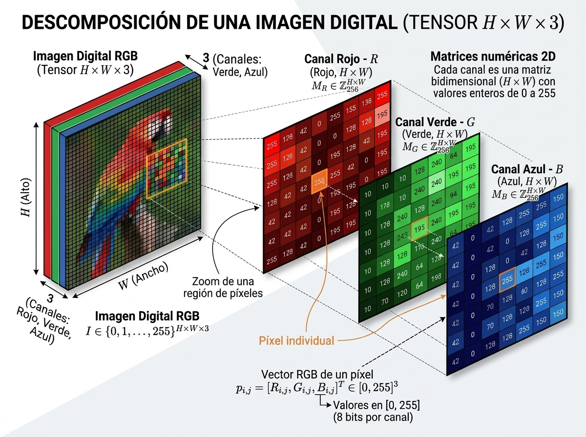
Una imagen de \(256 \times 256\) se vectoriza como \(\boldsymbol{x} \in \mathbb{R}^{65000}\). Si la primera capa tiene \(k_1 = 1000\) nodos, una red totalmente conectada requeriría aproximadamente 65 millones de parámetros \(\theta_{jk}\), con \(j = 1, \dots, 65000\) y \(k = 1, \dots, 1000\). Esta cantidad crece considerablemente con imágenes de mayor resolución (\(1000 \times 1000\)) o a color, donde la entrada se triplica al emplear el modelo RGB.
A medida que se incrementan las capas ocultas, también crece el número de parámetros, lo que eleva la carga computacional y compromete la capacidad de generalización, requiriendo grandes volúmenes de datos para evitar el sobreajuste. Además, vectorizar matrices de imágenes implica pérdida de información, al ignorar relaciones espaciales entre píxeles. Por ello, los métodos de generación de características buscan extraer dependencias estadísticas que capturen dichas correlaciones y permitan codificar eficazmente la información relevante para el aprendizaje.
Al emplear convoluciones, se pueden abordar simultáneamente ambos problemas, es decir, el de la explosión de parámetros y el de la extracción de información estadística útil. Los pasos básicos de cualquier red convolucional son:
la etapa de convolución,
el paso de no linealidad,
el paso de agrupación.
3.2. La etapa de convolución#
Una forma de reducir el número de parámetros es mediante el reparto de pesos. Ahora tomaremos prestada esta idea del reparto de pesos y la utilizaremos de una forma más sofisticada. Para ello, nos centraremos en el caso en que la entrada de la red esté formada por imágenes. La imagen matricial de entrada se denomina \(I\).

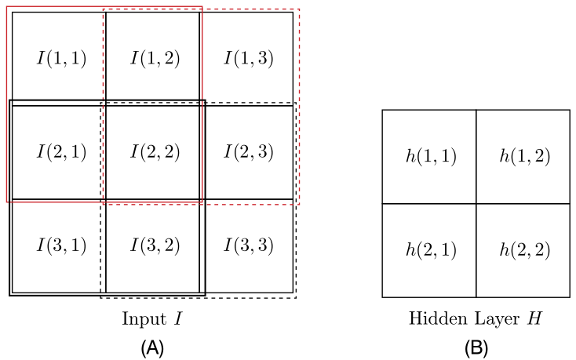
Fig. 3.1 (A) Imagen matricial de entrada de \(3\times 3\). (B) Nodos de la capa oculta.#
Para el caso de la Fig. 3.1, se trata de una matriz de 3 × 3; nótese que la entrada es no vectorizada. Para enfatizar que nos apartaremos de la lógica de las operaciones de multiplicar-añadir (producto interno) de las redes feed-forward completamente conectadas, utilizaremos un símbolo diferente \(h\) en lugar de \(\theta\), para denotar los parámetros asociados.
Introducimos ahora el concepto de reparto de pesos. Recordemos que en una red totalmente conectada, cada nodo está asociado con un vector de parámetros, \(\boldsymbol{\theta}_{i}\), para el nodo \(i\)th cuya dimensionalidad es igual al número de nodos de la capa anterior. En cambio, ahora cada nodo estará asociado a un único parámetro. Para ello, dispondremos los nodos en forma de matriz bidimensional, como se muestra en Fig. 3.1 (B). Para el caso de la figura, hemos supuesto cuatro nodos dispuestos en una matriz de 2 × 2, \(H\).
Observación
El primer nodo se caracteriza por \(h(1, 1)\), el segundo por \(h(1, 2)\), y así sucesivamente. En otras palabras, cualquier conexión que termine en el primer nodo se multiplicará por el mismo peso \(h(1, 1)\), y un argumento similar es válido para el resto de los nodos. Este razonamiento reduce drásticamente el número de parámetros. Sin embargo, para que esto tenga sentido, tenemos que alejarnos de la lógica de las operaciones de producto interior de las redes totalmente conectadas.
Para entender por qué, supongamos que utilizamos un único parámetro por nodo en una red totalmente conectada. Entonces, la salida del combinador lineal asociado al primer nodo sería \(O(1, 1) = h(1, 1)a\), donde \(a\) es la suma de todas las entradas al nodo recibidas de la capa anterior. La salida respectiva del segundo nodo sería \(O(1, 2) = h(1, 2)a\), y así sucesivamente. Por lo tanto, todos los nodos proporcionarían básicamente la misma información con respecto a los valores de entrada; la única diferencia serían los distintos pesos que actúan sobre la misma información de entrada de la capa anterior.
Pasemos ahora a introducir un concepto diferente, en el que mantenemos un único parámetro por nodo, aunque cada una de las salidas de una capa oculta transmite información diferente con respecto a las distintas entradas que se reciben de la capa anterior.
Para ello, introduciremos las convoluciones. En este contexto, los nodos de la capa oculta se interpretan como elementos de una matriz \(H\), y convolucionamos \(H\) con la matriz de entrada entrada \(I\). El primer valor de salida de la capa oculta será
El resultado anterior se obtiene si colocamos la matriz \(H\) de \(2\times2\) sobre \(I\), empezando por la esquina superior izquierda (el cuadrado rojo de Fig. 3.1(A) indica la posición de la matriz \(H\)). A continuación, multiplicamos los elementos en las partes superpuestas de las dos matrices y los sumamos. Desde un punto de vista físico, el valor \(O(1, 1)\) resultante es una media ponderada sobre un área local dentro de la matriz \(I\).
En la operación anterior, el área correspondiente de la imagen está formada por los píxeles de la parte superior izquierda 2 × 2 de la matriz \(I\). Para obtener el segundo valor de salida, \(O(1, 2)\), deslizamos \(H\) un píxel hacia la derecha, como indica el recuadro rojo punteado, y repetimos las operaciones, es decir
Siguiendo el mismo razonamiento, deslizamos \(H\) para “escanear” toda la imagen matricial; así, se obtienen otros dos valores de salida \(O(2, 1)\) y \(O(2, 2)\). Las cuatro posiciones posibles de \(H\) encima de \(I\) se indican en la Fig. 3.1(A) por los cuadros cuadrados de color rojo completo, rojo punteado, gris oscuro y gris punteado. Para cada posición se obtiene un valor de salida. Por lo tanto, bajo el escenario descrito anteriormente, las salidas de la primera capa oculta forman una matriz de \(2\times 2\), \(O\). Cada uno de los elementos de la matriz de salida codifica información de un área diferente de la imagen de entrada.
Convolución
En el entorno más general, la operación de convolución entre dos matrices, \(H\in R^{m\times m}\) e \(I\in\mathbb{R}^{l\times l}\), es otra matriz, definida como
En otras palabras, \(O(i, j)\) contiene información en un área de ventana de la matriz de entrada. De acuerdo con la definición de la Eq. (3.1) el elemento \(I(i, j)\) es el elemento superior izquierdo de esta área de la ventana. El tamaño de la ventana depende del valor de \(m\). El tamaño de la matriz de salida depende de las suposiciones que se adopten sobre cómo tratar los elementos/píxeles en los bordes de \(I\).
En sentido estricto, en la jerga del procesamiento de señales, la Eq. (3.1) se conoce como operación de correlación cruzada. Para la operación de convolución, primero hay que invertir los índices. Sin embargo, este es el nombre que ha “sobrevivido” en la comunidad del aprendizaje automático y bien nos adherimos a él. Al fin y al cabo, ambas son operaciones ponderadas sobre los píxeles dentro de un área de ventana de una imagen.
Observation 3.1
La discusión anterior nos “obliga” a pensar en una capa oculta como una colección de nodos uno al lado del otro. En cambio, en una CNN, cada capa oculta corresponde a una (o a más de una, como pronto veremos) matriz \(H\). Además, \(H\) se utiliza para realizar convoluciones.
Desde el punto de vista del tratamiento de señales, esta matriz es un
filtro que actúa sobre la entrada para proporcionar la salida.En la jerga del aprendizaje de maquinas, también se denomina matriz kernel en lugar de filtro. La matriz de salida suele denominarse la matriz del mapa de características.
En resumen, al realizar convoluciones, en lugar de operaciones de producto interno, hemos conseguido
Los parámetros que componen la capa oculta son compartidos por todos los píxeles de entrada y no tenemos un conjunto dedicado de parámetros por elemento de entrada (píxel)
Las salidas de la capa oculta
codifican la información de correlación de vecindad local de las distintas zonas de la imagen de entrada.Además, como la salida de la capa oculta también es una matriz de imágenes, se puede considerar como la entrada a una segunda capa oculta y construir así una red con muchas capas, cada una de las cuales realiza convoluciones.
De hecho, estas operaciones de filtrado se han utilizado tradicionalmente para generar características a partir de imágenes. La diferencia era que los elementos de la matriz de filtrado se preseleccionaban. Tomemos ejemplo, la siguiente matriz:
El filtro anterior se conoce como detector de bordes. Convolucionando una matriz de imagen, \(I\) , con la matriz anterior, \(H\),detecta los bordes de una imagen. La Fig. 3.2A muestra la imagen de un barco y la Fig. 3.2B muestra la salida después del filtrado de la imagen de la izquierda con la matriz de filtrado \(H\) anterior.

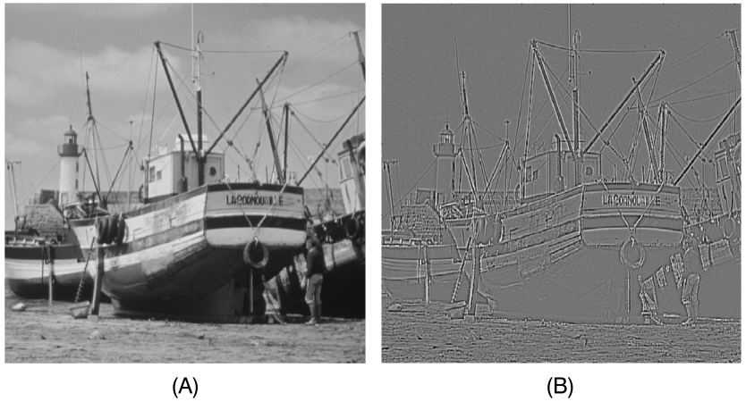
Fig. 3.2 (A) Imagen original y (B) Bordes de la imagen extraídos tras filtrar la matriz de la imagen original con el filtro \(H\) de la ecuación Eq. (3.2). Fuente [Theodoridis, 2020].#
La detección de bordes es de gran importancia en la comprensión de imágenes. Además, cambiando adecuadamente los valores en \(H\), se pueden detectar bordes en diferentes orientaciones, por ejemplo, diagonal, vertical, horizontal; en otras palabras, cambiando los valores de \(H\) se pueden generar diferentes tipos de características.
from skimage.color import rgb2gray
from skimage.io import imread
import numpy as np
from scipy import signal
import matplotlib.pylab as pylab
im = rgb2gray(imread('imgs/cameraman.jpg')).astype(float)
print(im.shape, np.max(im))
(256, 256) 0.9921568627450982
blur_box_kernel = np.ones((3,3)) / 9
edge_laplace_kernel = np.array([[0,1,0],[1,-4,1],[0,1,0]])
edge_laplace_kernel
array([[ 0, 1, 0],
[ 1, -4, 1],
[ 0, 1, 0]])
im_blurred = signal.convolve2d(im, blur_box_kernel)
im_edges = np.clip(signal.convolve2d(im, edge_laplace_kernel), 0, 1)
fig, axes = pylab.subplots(ncols=3, sharex=True, sharey=True, figsize=(18, 6))
axes[0].imshow(im, cmap=pylab.cm.gray)
axes[0].set_title('Original Image', size=20)
axes[1].imshow(im_blurred, cmap=pylab.cm.gray)
axes[1].set_title('Box Blur', size=20)
axes[2].imshow(im_edges, cmap=pylab.cm.gray)
axes[2].set_title('Laplace Edge Detection', size=20)
for ax in axes:
ax.axis('off')
Nos hemos acercado a la idea que subyace a las CNN
En lugar de utilizar una matriz de filtro/núcleo fija, como en el ejemplo del detector de bordes,
deje el cálculo de los valores de la matriz de filtro, \(H\) ,para la fase de entrenamiento. En otras palabras, hacemos que \(H\) se adapte a los datos y no preseleccionada.En lugar de utilizar una única matriz de filtros, empleamos más de una. Cada una de ellas generará un tipo diferente de características. Por ejemplo, una puede generar bordes diagonales, la otra horizontales, etc. Por lo tanto, cada capa oculta comprenderá más de una matriz de filtrado. Los valores de los elementos de cada una de
las matrices de filtrado se calcularán durante la fase de entrenamiento, optimizando algún criterio. En otras palabras, cada capa oculta de una CNN genera un conjunto de características de forma óptima.

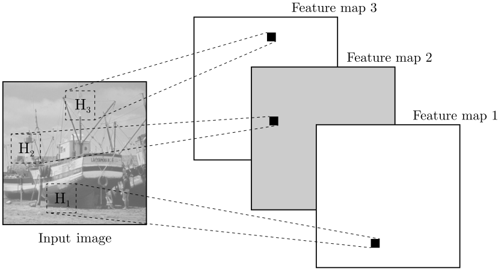
Fig. 3.3 Ilustración de tres filtros/núcleos. Profundidad de la capa oculta (número de filtro) es tres. Fuente [Theodoridis, 2020].#
La Fig. 3.3 ilustra la entrada y la primera capa oculta de una CNN. La entrada comprende una matriz imagen. La capa oculta consta de tres matrices de filtrado, a saber, \(H_{1}, H_{2}, H_{3}\). Nótese que cada matriz es el resultado de convolucionar una matriz de filtros diferente sobre la imagen de entrada. Cuantos más filtros se empleen, más mapas de características se extraerán y, en principio, mejor será el rendimiento de la red.
Sin embargo, cuantos más filtros utilicemos, más parámetros habrá que aprender, lo que plantea problemas computacionales y de sobreajuste. Nótese que cada píxel de una matriz de mapeo de características de salida codifica información dentro del área de la ventana que está definida por la posición correspondiente de la respectiva matriz de filtro.
3.3. Ejemplo de uso de Múltiples Kernels en una CNN#
En una Red Neuronal Convolucional (CNN), cada kernel se aplica simultáneamente a la imagen de entrada, generando un mapa de características (feature map).
Proceso de Aplicación
Cada kernel detecta distintos patrones como bordes o texturas.
Cada filtro genera su propio mapa de características, reduciendo dimensiones según el tamaño del kernel, stride y padding.
El resultado es un volumen de salida de tamaño \(H' \times W' \times N\), donde \(N\) es el número de filtros (kernels).
Ejemplo con Tres Kernels: Si una imagen RGB de \(32 \times 32 \times 3\) se procesa con tres kernels de \(3 \times 3 \times 3\), la salida será \(30 \times 30 \times 3\). La profundidad de la salida corresponde al número de kernels (3), no al número de canales de la imagen, mientras que la profundidad de cada kernel (3) sí debe coincidir con la de la entrada.
Conclusión: Cada kernel opera en paralelo, generando su propio mapa de características. El número de filtros define la profundidad de la salida. Las dimensiones dependen de los hiperparámetros de convolución.
Observation 3.2
Una característica importante de una CNN es que la invarianza de traslación (
reconoce patrones en una imagen sin importar dónde se encuentren esos patrones) está integrada de forma natural en la red y es un subproducto de las circunvoluciones implicadas. De hecho, estas últimas se realizan deslizando la misma matriz de filtros sobre toda la imagen.Así, si un objeto presente en una imagen se coloca en otra posición, la única diferencia sería que la contribución de este objeto a la salida también se desplazará la misma cantidad en el número de píxeles.
Es interesante señalar que existen pruebas sólidas en el campo de la neurociencia visual de que en el ser humano se realizan cálculos similares. (ver [Hubel and Wiesel, 1962, Serre et al., 2007]). La noción de convoluciones fue usada inicialmente por [Fukushima et al., 1983] en el contexto del aprendizaje no supervisado.
La convolución es la única operación lineal equivariante a traslaciones. La observación anterior afirma que, si el objeto se desplaza en la imagen, su contribución a la salida se desplaza la misma cantidad. El siguiente teorema formaliza esa propiedad y muestra que no es una casualidad del diseño, sino una caracterización.
Para evitar efectos de borde trabajamos en la cuadrícula periódica \(G=\mathbb{Z}_N\times\mathbb{Z}_N\) (aritmética módulo \(N\)).
Cuadrícula periódica
Una malla periódica impone condiciones de frontera periódicas: el borde derecho se identifica con el izquierdo y el inferior con el superior, de modo que el dominio equivale topológicamente a un toro.
Ejemplo 1D. Con 5 posiciones \(0,\dots,4\), un paso a la derecha desde la \(4\) lleva a la \(0\) (\(4+1\equiv 0\)), y tres pasos llevan a la \(2\) (\(4+3=7\equiv 2\) módulo \(5\)), como un reloj de 5 horas.
Ejemplo 2D. En una imagen \(3\times 3\), trasladar una columna a la derecha hace que la última columna pase a ser la primera, sin perder píxeles (ver Fig. 3.4B).
Así \(x(u+v)\) siempre está definido en los bordes y no hay que elegir un padding. Es una idealización; en la práctica se usa padding de ceros.
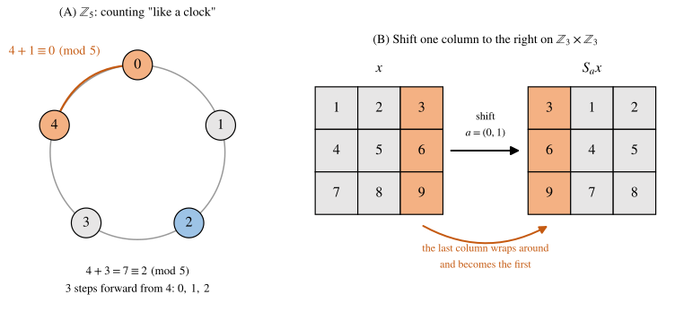
Fig. 3.4 (A) \(\mathbb{Z}_5\) como un reloj de 5 posiciones: tras el \(4\) viene el \(0\). (B) Traslación de una columna a la derecha en \(\mathbb{Z}_3\times\mathbb{Z}_3\): la última columna reaparece como primera.#
Una imagen es una función \(x:G\to\mathbb{R}\) y la traslación por \(a\in G\) es
Con la convención, correlación cruzada, Eq. (3.1), la convolución con núcleo \(h:G\to\mathbb{R}\) es
Ejemplo
Con \(x=\begin{bmatrix}1&2&3\\4&5&6\\7&8&9\end{bmatrix}\) (ver Fig. 3.5):
Traslación \(a=(0,1)\): \(S_a x=\begin{bmatrix}3&1&2\\6&4&5\\9&7&8\end{bmatrix}\), la última columna pasa a ser la primera.
Convolución con \(h\) de \(2\times 2\) con todos sus pesos iguales a \(1\) (suma \(u\), su derecha, su abajo y su diagonal): en el interior \((T_hx)(0,0)=1+2+4+5=12\); en la esquina, los vecinos se recuperan por el lado opuesto, \((T_hx)(2,2)=9+7+3+1=20\).
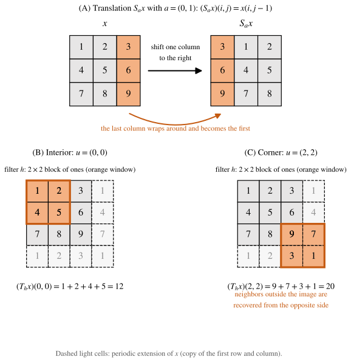
Fig. 3.5 (A) Traslación en \(\mathbb{Z}_3\times\mathbb{Z}_3\). (B) Convolución en el interior. (C) Convolución en la esquina, con la extensión periódica de \(x\) (celdas punteadas).#
Theorem 3.1 (Equivarianza de la convolución)
Sea \(T:\mathbb{R}^{G}\to\mathbb{R}^{G}\) una aplicación lineal. Son equivalentes:
\(T S_a=S_a T\) para todo \(a\in G\) (equivarianza a traslaciones).
Existe \(h:G\to\mathbb{R}\) tal que \(T=T_h\), es decir, \(T\) es una convolución.
Proof. (2) ⇒ (1). Suponemos \(T=T_h\) (hipótesis) y debemos probar \(T_hS_a=S_aT_h\) para todo \(a\in G\) (tesis). Fijamos \(x\), \(a\) y \(u\), y evaluamos ambos lados en \(u\) con Eq. (3.3) y Eq. (3.4): como \(u\) y \(x\) son arbitrarios, la igualdad vale como aplicaciones.
Lado izquierdo, \((T_hS_a x)(u)\).
Aplicamos la definición de \(T_h\) a la imagen \(S_a x\)
\[\begin{split} \begin{align*} (T_hS_a x)(u) &= \sum_{v}h(v)\,(S_a x)(u+v) \\ &= \sum_{v}h(v)\,x\big((u+v)-a\big) \\ &= \sum_{v}h(v)\,x(u+v-a). \tag{$\ast$} \end{align*} \end{split}\]Lado derecho, \((S_aT_h x)(u)\).
Aplicamos la definición de traslación, luego la de \(T_h\)
\[\begin{split} \begin{align*} (S_aT_h x)(u) &= (T_h x)(u-a) \\ &= \sum_{v}h(v)\,x\big((u-a)+v\big) \\ &= \sum_{v}h(v)\,x(u+v-a). \tag{$\ast\ast$} \end{align*} \end{split}\]
Entonces, \((\ast)\) y \((\ast\ast)\) son exactamente la misma suma. Como \(u\) es arbitrario, \(T_hS_ax=S_aT_hx\).
(1) ⇒ (2). Suponemos dos hipótesis sobre \(T:\mathbb{R}^{G}\to\mathbb{R}^{G}\): H1 (linealidad): \(T(\alpha x+\beta y)=\alpha\,Tx+\beta\,Ty\) para todo \(x,y\in\mathbb{R}^{G}\) y \(\alpha,\beta\in\mathbb{R}\). H2 (equivarianza): \(T S_a=S_a T\) para todo \(a\in G\).
Debemos construir un \(h:G\to\mathbb{R}\) tal que \(Tx=T_hx\) para toda \(x\). La estrategia es la de siempre con aplicaciones lineales: una aplicación lineal queda determinada por lo que hace con una base. Aquí la equivarianza hará que baste conocer la imagen de un solo elemento de la base.
Paso 0: la base de impulsos. Para cada \(a\in G\), el impulso en \(a\) es la imagen \(\delta_a\) con un único píxel encendido (valor 1) y los demás píxeles nulos:
\[\begin{split} \delta_a(u)=\begin{cases}1 & \text{si } u=a,\\ 0 & \text{si } u\neq a.\end{cases} \end{split}\]Como \(G\) es finito (\(N^2\) posiciones), \(\{\delta_a\}_{a\in G}\) es una base de \(\mathbb{R}^{G}\) con \(N^2\) elementos. Denotamos por \(\delta_0\) el impulso en el origen y definimos la respuesta al impulso
\[ g:=T\delta_0\in\mathbb{R}^{G}. \]Se elige \(\delta_0\) por ser el impulso más simple; el Paso 1 muestra que la traslación genera todos los demás a partir de él. Por ejemplo, con \(N=3\) y origen en la esquina superior izquierda:
\[\begin{split} \delta_0=\begin{pmatrix}1&0&0\\0&0&0\\0&0&0\end{pmatrix},\qquad \delta_a=\begin{pmatrix}0&0&0\\0&1&0\\0&0&0\end{pmatrix}\ \text{si } a=(1,1). \end{split}\]Paso 1: trasladar el impulso da otro impulso, \(S_a\delta_0=\delta_a\). Evaluamos en un punto \(u\) cualquiera:
\[\begin{split} (S_a\delta_0)(u)=\delta_0(u-a)=\begin{cases}1 & \text{si } u-a=0 \iff u=a,\\ 0 & \text{en otro caso,}\end{cases} \end{split}\]que es justamente \(\delta_a(u)\). Como \(u\) es arbitrario, \(S_a\delta_0=\delta_a\).
Paso 2: toda imagen es combinación lineal de impulsos. Afirmamos que
Para comprobarlo, evaluamos el lado derecho en un punto \(u\) (la suma de funciones se evalúa punto a punto):
Solo sobrevive el término \(a=u\) porque \(\delta_a(u)=0\) cuando \(a\neq u\). Esto vale para todo \(u\), y la afirmación queda probada.
Paso 3: aquí se usa H2 (equivarianza). Para cada \(a\in G\),
Esta línea es el corazón de la prueba. Calcular \(T\delta_a\) para todo \(a\in G\) conociendo únicamente \(g=T\delta_0\), es decir, reducir \(N^2\) respuestas desconocidas (una por impulso) a una sola. Sin H2, \(T\delta_a\) podría ser una imagen arbitraria distinta para cada \(a\); con H2, la respuesta a un píxel encendido en \(a\) es la respuesta en el origen trasladada a \(a\): el operador reacciona igual ante un impulso sin importar su posición, y solo cambia la ubicación de la reacción.
Paso 4: aquí se usa H1 (linealidad). Aplicamos \(T\) a la descomposición del Paso 2. Es una suma finita con coeficientes escalares \(x(a)\in\mathbb{R}\), así que H1 permite sacar \(T\) de la suma y los escalares:
\[\begin{split} \begin{align*} Tx &= T\Big(\sum_{a\in G}x(a)\,\delta_a\Big) &&\text{(Paso 2)} \\ &= \sum_{a\in G}x(a)\,T\delta_a &&\text{(H1)} \\ &= \sum_{a\in G}x(a)\,S_a g &&\text{(Paso 3, que usa H2)}. \end{align*} \end{split}\]Paso 5: evaluamos en un punto \(u\). Usando \((S_a g)(u)=g(u-a)\):
\[ (Tx)(u)=\sum_{a\in G}x(a)\,g(u-a). \]Esto ya es una “convolución”, pero con el índice de suma \(a\) en \(x(a)\) y en \(g(u-a)\). La convención es \(\sum_v h(v)\,x(u+v)\), así que falta un cambio de variable.
Paso 6: cambio de índice \(a=u+v\). Fijamos \(u\). La aplicación \(v\mapsto u+v\) es una biyección de \(G\) en \(G\) (su inversa es \(a\mapsto a-u\)). Por eso, cuando \(v\) recorre todo \(G\), \(a=u+v\) también lo recorre una y solo una vez, y sumar sobre \(a\) equivale a sumar sobre \(v\):
\[\begin{split} \begin{align*} (Tx)(u) &= \sum_{a\in G}x(a)\,g(u-a) \\ &= \sum_{v\in G}x(u+v)\,g\big(u-(u+v)\big) &&(a=u+v) \\ &= \sum_{v\in G}g(-v)\,x(u+v). \end{align*} \end{split}\]Paso 7: conclusión. Definimos \(h(v):=g(-v)\). Entonces, para toda \(x\) y todo \(u\),
\[ (Tx)(u)=\sum_{v\in G}h(v)\,x(u+v)=(T_hx)(u), \]es decir, \(T=T_h\) con \(h=g(-\,\cdot\,)\). \(\qquad\blacksquare\)
Equivarianza e invarianza
En la Observation 3.2 se habla de invarianza de traslación. Con rigor, la convolución es equivariante: \(T(S_a x)=S_a(Tx)\), es decir, la salida se desplaza junto con la entrada. La invarianza (\(f(S_a x)=f(x)\)) aparece únicamente después de un paso de agrupación global (ver Corollary 3.1).
Con padding de ceros y bordes finitos, la equivarianza es exacta solo para traslaciones que mantienen el objeto dentro de la imagen. Con stride \(s>1\), solo es exacta para traslaciones múltiplos de \(s\).
Para volúmenes con \(d\) canales de entrada y \(d'\) de salida, el mismo argumento (aplicado a los impulsos \(\delta_0\otimes e_c\), donde \(e_c\) es el \(c\)-ésimo vector canónico de \(\mathbb{R}^d\)) prueba que las aplicaciones lineales equivariantes son exactamente \((Tx)_j(u)=\sum_{v}\sum_{c=1}^{d}h_{jc}(v)\,x_c(u+v)\), que es la convolución sobre volúmenes que estudiaremos más adelante.
Observación
La demostración anterior es completa para el grupo de traslaciones. Para grupos compactos generales (rotaciones, reflexiones) el resultado análogo es el teorema de Kondor y Trivedi [Kondor and Trivedi, 2018], que sustenta las redes convolucionales de grupo [Cohen and Welling, 2016]. Un panorama unificado del principio de simetría en aprendizaje profundo se encuentra en [Bronstein et al., 2021].
Algunos términos esenciales de la jerga de las CNN:
Profundidad
La profundidad de una capa es el número de matrices de filtro que se emplean en ella (también llamado número de canales). No debe confundirse con la profundidad de la red, que es el número total de capas ocultas.
Campo receptivo
Cada píxel de un mapa de características de salida es una media ponderada de los píxeles de un área específica de la imagen de entrada (o de la salida de la capa anterior). Dicha área es su campo receptivo (ver Fig. 3.3).
Deslizamiento (stride)
En lugar de desplazar el filtro píxel a píxel, puede desplazarse \(s\) píxeles; este valor es el stride. Si \(s > 1\), los mapas de características resultantes son de menor tamaño (ver Fig. 3.6A y B).

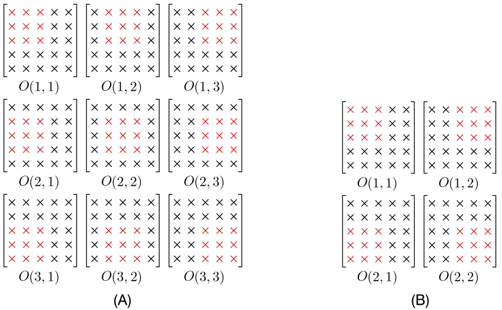
Fig. 3.6 Matriz de entrada y filtro de tamaños 5 × 5 y 3 × 3 respectivamente. En (A), el paso es igual a \(s = 1\) y en (B) es igual a \(s = 2\). En (A) la salida es una matriz de tamaño 3 × 3 y en (B) de tamaño 2 × 2. Fuente [Theodoridis, 2020].#
Relleno de ceros (padding)
A veces se rellena con ceros la matriz de entrada alrededor de los píxeles del borde, lo que aumenta su dimensión. Si la matriz original es de tamaño \(l\times l\), al añadir \(p\) filas y columnas a cada lado, las nuevas dimensiones son \((l + 2p)\times(l + 2p)\) (ver Fig. 3.7).

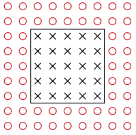
Fig. 3.7 Ejemplo en el que la matriz original es de 5 × 5 y tras rellenarla con \(p = 2\) filas y columnas, su tamaño pasa a ser de 9 × 9. Fuente [Theodoridis, 2020].#
Término de sesgo (bias)
Tras cada convolución que genera un píxel del mapa de características, se suma un sesgo común a todos los píxeles de ese mapa, calculado durante el entrenamiento. Esto sigue la lógica de compartir parámetros, igual que ocurre con los filtros sobre la imagen de entrada.
Se puede ajustar el tamaño de una matriz de mapa de características de salida ajustando el valor del stride, \(s\), y el número de columnas y filas cero adicionales en el relleno. En general, se puede comprobar fácilmente que si \(I\in\mathbb{R}^{l\times l}, H\in\mathbb{R}^{m\times m}\), y \(p\) es el número de filas y columnas adicionales para el relleno, entonces el mapa de características tiene dimensiones \(k\times k\), donde
(3.5)#\[ k=\lfloor\frac{l+2p-m}{s}+1\rfloor, \]y \(\lfloor\cdot\rfloor\) es el operador suelo, i.e \(\lfloor2.7\rfloor=2\).
Por ejemplo, si \(l = 5, m = 3, p = 0\) y \(s = 1\), entonces \(k = 3\). Por otro lado, si \(l = 5, m = 3, p = 0\) y \(s = 2\), entonces \(k = 2\) (ver Fig. 3.6A y B). Nótese que si los valores de \(l, m, p\) y \(s\) son tales que la matriz de filtrado, al deslizarse sobre \(I\), cae fuera de \(I\), estas operaciones no se realizan. Solo realizamos operaciones mientras la matriz filtro esté contenida dentro de \(I\).
3.4. El paso de la no linealidad#
Una vez que se han realizado las convoluciones y se ha añadido el término de sesgo a todos los valores del mapa de características, el siguiente paso es
aplicar una no linealidad (función de activación) a cada uno de los píxeles de cada matrizde mapas de características.Se puede emplear cualquiera de las no linealidades que se han comentado anteriormente. Actualmente, la función de activación lineal rectificada,
ReLU, es la más popular.
import numpy as np
import matplotlib.pyplot as plt
def relu(x):
return np.maximum(0, x)
x = np.linspace(-10, 10, 100)
y = relu(x)
plt.plot(x, y, label='ReLU', color='b')
plt.axhline(0, color='black', linewidth=0.5)
plt.axvline(0, color='black', linewidth=0.5)
plt.grid(True, linestyle='--', alpha=0.6)
plt.legend()
plt.show()
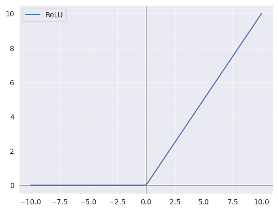
Importancia de ReLU
La función de activación más utilizada en CNN es ReLU (Rectified Linear Unit) por las siguientes razones:
Evita el gradiente desvaneciente: A diferencia de sigmoide o tangente hiperbólica, mantiene gradientes significativos en redes profundas, facilitando el entrenamiento.
Eficiencia computacional: Su cálculo \(\max(0, x)\) es más simple que funciones exponenciales, reduciendo la carga de procesamiento.
Favorece la esparsidad: Al asignar cero a valores negativos, desactiva neuronas, mejorando eficiencia y generalización.
Acelera el entrenamiento: Su linealidad en valores positivos y bajo costo computacional permiten una convergencia más rápida.
No obstante, puede generar neuronas muertas cuando ciertos pesos anulan permanentemente la activación. Para evitarlo, existen variantes como Leaky ReLU y PReLU.
La Fig. 3.8A muestra la imagen obtenida después de filtrar la imagen original del barco con el detector de bordes en la (3.2) y la Fig. 3.8B muestra el resultado que se obtiene tras la aplicación de la no linealidad en cada píxel individual.

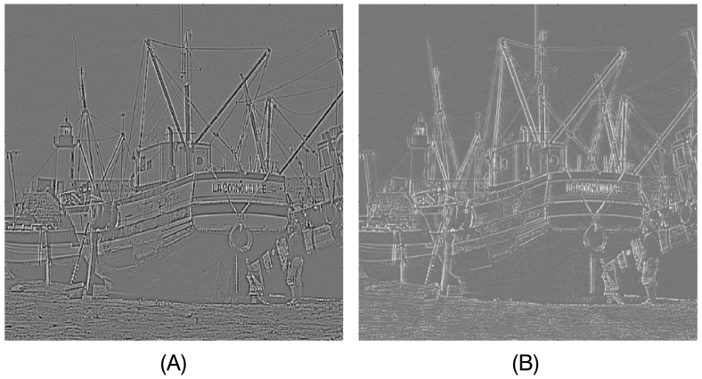
Fig. 3.8 (A) Imagen donde se han extraído los bordes y (B) imagen resultante tras aplicar el en cada uno de los píxeles. Fuente [Theodoridis, 2020].#
¿Qué pueden representar las capas con estas no linealidades? Hasta aquí hemos justificado la convolución por eficiencia y por simetría. El siguiente teorema responde a una pregunta distinta: si la no linealidad \(\sigma\) es adecuada, ¿cuánta capacidad de representación tiene una capa oculta?
Theorem 3.2 (Aproximación universal (Cybenko, Hornik, Leshno-Lin-Pinkus-Schocken))
Sea \(\sigma:\mathbb{R}\to\mathbb{R}\) continua y sea \(K\subset\mathbb{R}^n\) un conjunto compacto, es decir, cerrado y acotado (por Heine-Borel, la propiedad de compacidad equivale a esto en \(\mathbb{R}^n\)). El conjunto de funciones
es denso en \(C(K)\) (funciones continuas \(K\to\mathbb{R}\) con la norma \(\|f\|_\infty=\sup_{x\in K}|f(x)|\)) si y solo si \(\sigma\) no es un polinomio. Que \(\mathcal{N}_\sigma\) sea denso en \(C(K)\) significa que su clausura en la norma uniforme es todo el espacio, es decir, \(\overline{\mathcal{N}_\sigma}=C(K)\): toda función continua sobre \(K\) es el límite uniforme de una sucesión de elementos de \(\mathcal{N}_\sigma\). En particular, para toda \(f\in C(K)\) y \(\varepsilon>0\) existe \(g\in\mathcal{N}_\sigma\) con \(\sup_{x\in K}|f(x)-g(x)|<\varepsilon\).
Nota de alcance. Abajo demostramos la necesidad y la suficiencia para \(\sigma\) sigmoidal continua (Cybenko) y para ReLU. La suficiencia para una \(\sigma\) continua no polinómica arbitraria es el resultado de [Leshno et al., 1993]; ver también la revisión [Pinkus, 1999].
Proof. Alcance de la prueba. Sea \(K\subset\mathbb{R}^n\) compacto e infinito (por ejemplo, un intervalo o una bola cerrada), \(\sigma:\mathbb{R}\to\mathbb{R}\) continua y
con la norma del supremo \(\|g\|_\infty=\max_{x\in K}|g(x)|\). Se demuestran tres afirmaciones:
(I) Necesidad. Si \(\sigma\) es un polinomio, \(\mathcal{N}_\sigma\) no es denso en \(C(K)\).
(II) Suficiencia para \(\sigma\) sigmoidal continua (\(\sigma(t)\to1\) si \(t\to+\infty\) y \(\sigma(t)\to0\) si \(t\to-\infty\)): \(\mathcal{N}_\sigma\) es denso (teorema de Cybenko).
(III) Suficiencia para ReLU, como consecuencia de (II).
¿Qué pasa si \(K\) es finito?
Si \(K\) fuera finito, por ejemplo \(K=\{x_1,\dots,x_m\}\), cada punto de \(K\) es aislado: existe \(r>0\) (por ejemplo, la menor distancia entre dos puntos distintos de \(K\)) tal que la bola \(B(x_i,r)\) no contiene otros puntos de \(K\). Por eso toda función \(g:K\to\mathbb{R}\) es continua (si \(x\in K\) está cerca de \(x_i\), entonces \(x=x_i\) y \(|g(x)-g(x_i)|=0\)), y \(C(K)\) está formado por todas las funciones \(K\to\mathbb{R}\). La aplicación lineal \(\Phi(g)=\big(g(x_1),\dots,g(x_m)\big)\in\mathbb{R}^m\) es inyectiva, pues si \(g,\tilde g\in C(K)\) cumplen \(\Phi(g)=\Phi(\tilde g)\), entonces \(g(x_i)=\tilde g(x_i)\) para \(i=1,\dots,m\) y, como \(K\) no tiene más puntos, \(g=\tilde g\); y es sobreyectiva, pues dado \((v_1,\dots,v_m)\in\mathbb{R}^m\) la función con \(g(x_i)=v_i\) (bien definida porque los \(x_i\) son distintos) cumple \(\Phi(g)=(v_1,\dots,v_m)\). Por tanto \(\Phi\) es biyectiva y lineal, así que \(C(K)\cong\mathbb{R}^m\) (se lee “\(C(K)\) es isomorfo a \(\mathbb{R}^m\)”: son el mismo espacio vectorial escrito de dos formas, y por tanto tienen la misma dimensión). En particular \(\dim C(K)=m<\infty\).
Basta entonces ajustar esos \(m\) valores, y eso lo logran incluso las redes con \(\sigma\) polinomial, así que la Parte I sería falsa. Por eso se pide que \(K\) sea infinito.
La implicación recíproca general de (I) (si \(\sigma\) es continua y no polinomial, entonces \(\mathcal{N}_\sigma\) es denso) es la parte más sustancial del teorema, y su demostración completa puede consultarse en [Leshno et al., 1993]. Aquí se prueba solo para los casos sigmoidal y ReLU.
Parte I. Necesidad: si \(\sigma\) es un polinomio, \(\mathcal{N}_\sigma\) no es denso
Sea \(\sigma(t)=\sum_{k=0}^{d}a_k t^k\).
N1. Cada neurona es un polinomio en \(x\). Se tiene
Al desarrollar \((w_1x_1+\dots+w_nx_n+b)^k\) con el teorema multinomial, solo aparecen monomios \(x_1^{p_1}\cdots x_n^{p_n}\) con \(p_1+\dots+p_n\le k\le d\). Por tanto cada neurona es un polinomio de grado total a lo sumo \(d\). Ejemplo (\(n=1\), \(\sigma(t)=t^2\)):
que es combinación lineal de \(\{1,\,x,\,x^2\}\). Estos son \(d+1=3\) monomios, así que todas las neuronas de este tipo caen en un espacio de dimensión a lo sumo \(3\).
N2. Esos polinomios viven en un espacio de dimensión finita. Sea \(\mathcal{P}_d\) el conjunto de polinomios de grado total \(\le d\) en \(n\) variables, restringidos a \(K\). Es un espacio vectorial generado por los monomios de grado \(\le d\), así que
Para \(n=1\) es \(\operatorname{span}\{1,x,\dots,x^d\}\), de dimensión \(d+1\).
N3. \(\mathcal{N}_\sigma\subset\mathcal{P}_d\). Un elemento de \(\mathcal{N}_\sigma\) es una suma \(\sum_{j=1}^{N}\alpha_j\,\sigma(w_j^\top x+b_j)\). Por N1 cada sumando está en \(\mathcal{P}_d\), y \(\mathcal{P}_d\) es cerrado bajo sumas y múltiplos escalares, luego la suma también está en \(\mathcal{P}_d\). Aumentar el número de neuronas \(N\) no permite salir de \(\mathcal{P}_d\).
N4. Un subespacio de dimensión finita es cerrado, y por eso \(\mathcal{N}_\sigma\) no puede ser denso. Recordemos que un conjunto es cerrado si contiene los límites de sus sucesiones convergentes, y denso en \(C(K)\) si su clausura es todo \(C(K)\). Se usan dos hechos.
Hecho 1 (dimensión finita implica cerrado). Todo subespacio \(V\) de dimensión finita de un espacio normado es cerrado.
Hecho 2 (\(\dim C(K)=\infty\) si \(K\) es infinito). Si \(K\) es infinito, el espacio \(C(K)\) tiene dimensión infinita.
Conclusión de la Parte I. Por N3, \(\mathcal{N}_\sigma\subset\mathcal{P}_d\), y por el Hecho 1, \(\mathcal{P}_d\) es cerrado. Entonces \(\overline{\mathcal{N}_\sigma}\subset\mathcal{P}_d\): si \(g\in\overline{\mathcal{N}_\sigma}\), existe \(g_k\in\mathcal{N}_\sigma\) con \(g_k\to g\) en \(C(K)\), cada \(g_k\) está en \(\mathcal{P}_d\) y, al ser \(\mathcal{P}_d\) cerrado, \(g\in\mathcal{P}_d\).
Si \(\mathcal{N}_\sigma\) fuera denso, se tendría \(C(K)=\overline{\mathcal{N}_\sigma}\subset\mathcal{P}_d\) y, por N2,
lo que contradice el Hecho 2. Por tanto \(\mathcal{N}_\sigma\) no es denso en \(C(K)\). \(\blacksquare\)
Parte II. Suficiencia para \(\sigma\) sigmoidal continua (Cybenko)
Enunciado. Sea \(K\subset\mathbb{R}^n\) compacto y \(\sigma\) continua y sigmoidal. Entonces \(\overline{\mathcal{N}_\sigma}=C(K)\). Equivalentemente, toda \(g\in C(K)\) se aproxima uniformemente por redes \(\sum_{j=1}^m c_j\,\sigma(w_j^\top x+b_j)\).
Observaciones preliminares.
\(\sigma\) es acotada: tiene límites finitos en \(\pm\infty\), así que existe \(R>0\) con \(|\sigma(t)|\le1\) si \(|t|\ge R\), y en \([-R,R]\) está acotada por ser continua. Sea \(C=\sup_{t\in\mathbb{R}}|\sigma(t)|<\infty\). Esta cota se usa en el Paso 2 para aplicar convergencia dominada.
\(\mathcal{N}_\sigma\subset C(K)\), pues cada neurona es composición de funciones continuas. Además \(\mathcal{N}_\sigma\) es un subespacio vectorial, y su clausura \(\overline{\mathcal{N}_\sigma}\) también lo es, porque la suma y el producto por escalares son continuos en la norma.
Idea global. Se razona por contradicción mediante dualidad. Si \(\mathcal{N}_\sigma\) no fuera denso, existiría un funcional lineal continuo no nulo que se anula sobre él (Paso 1) Theorem 8.9. Ese funcional es una integral contra una medida \(\mu\), y anularse sobre las neuronas significa que \(\mu\) es “ortogonal” a todas ellas.
En el Paso 2 se demuestra que \(\mu(H)=0\) para todo semiespacio \(H\) de \(\mathbb{R}^n\), es decir, que \(\mu\) asigna medida cero a cada semiespacio. En el Paso 3 se prueba que esta propiedad implica \(\mu=0\). Entonces el funcional
es idénticamente nulo, lo cual contradice la hipótesis \(L\neq 0\). Por lo tanto, \(M\) es denso en \(C(K)\). Como analogía, en un espacio de Hilbert \(H\) un subespacio cerrado \(M\) es todo \(H\) si y solo si \(M^\perp=\{0\}\). En \(C(K)\) no hay producto interno, pero el anulador \(M^\perp=\{L\in C(K)^*:\ L|_M=0\}\) cumple el mismo papel: \(\overline{M}=C(K)\) si y solo si \(M^\perp=\{0\}\).
Paso 1: reducción por dualidad (Hahn-Banach y Riesz-Markov)
Supongamos, por contradicción, que \(\overline{\mathcal{N}_\sigma}\neq C(K)\).
(a) Un funcional que anula \(\overline{\mathcal{N}_\sigma}\).
Lema A. Sea \(X\) un espacio normado real y \(M\subsetneq X\) un subespacio cerrado propio. Entonces existe \(L\in X^*\) con \(L\neq0\) y \(L|_M=0\).
Aplicamos el Lema A con \(X=C(K)\) y \(M=\overline{\mathcal{N}_\sigma}\), cerrado por construcción y propio por la hipótesis de contradicción. Se obtiene un funcional lineal continuo \(L\neq0\) sobre \(C(K)\) con \(L=0\) en \(\overline{\mathcal{N}_\sigma}\), en particular en \(\mathcal{N}_\sigma\).
(b) Representación de \(L\) como integral.
Teorema de Riesz-Markov-Kakutani. Si \(K\) es un espacio compacto de Hausdorff, todo funcional lineal continuo \(L\) sobre \(C(K)\) se escribe como
\[L(g)=\int_K g\,d\mu,\qquad g\in C(K),\]para una única medida de Borel regular, finita y con signo \(\mu\). Si \(M(K)\) denota el espacio de estas medidas, la correspondencia \(\mu\mapsto L_\mu\) es un isomorfismo \(C(K)^*\cong M(K)\), es decir, una biyección lineal que preserva la norma (variación total \(|\mu|\) en \(M(K)\), norma de operador en \(C(K)^*\)).
Un compacto \(K\subset\mathbb{R}^n\) es de Hausdorff (dos puntos distintos tienen abiertos disjuntos que los separan) porque \(\mathbb{R}^n\) es un espacio métrico: si \(x\neq y\), las bolas abiertas de radio \(\|x-y\|/2\) centradas en ellos son disjuntas. Así el teorema aplica. Que \(\mu\) sea finita (su variación total \(|\mu|(K)=\mu^+(K)+\mu^-(K)\) es finita, la parte negativa de \(\mu\) es la medida no negativa \(\mu^-(A)=-\mu(A\cap N)\)) hace que
esté bien definida para toda función \(h\) boreliana acotada (medible respecto a los conjuntos de Borel, como los indicadores de semiespacios, que no son continuos), no solo continua; esto se usa en el Paso 3. Recordemos que \(\mu=\mu^+-\mu^-\) (descomposición de Jordan, con \(\mu^\pm\) medidas positivas finitas) y que
Como \(L\neq0\) y
para toda \(g\in C(K)\), la medida \(\mu\) no puede ser la medida nula (si lo fuera, \(L(g)=0\) para toda \(g\)). Por tanto \(\mu\neq0\).
Idea general. Una medida \(\mu\) asigna una “masa” \(\mu(B)\) a cada subconjunto \(B\subset K\). Integrar \(g\) contra \(\mu\) es sumar los valores de \(g\) ponderados por esa masa. Ejemplo sobre \(K=[0,1]\):
1. Masas en puntos. Si \(\mu\) pone masa \(m_i\) en cada punto \(a_i\), entonces
Ejemplo: masas \(0.5\) en \(0.2\) y \(0.5\) en \(0.8\), con \(g(x)=x^2\):
Con un solo punto (delta \(\delta_a\), masa \(1\) en \(a\)) queda
2. Masa repartida. Si la masa se reparte de forma continua (longitud \(dx\)), la suma es la integral usual. Ejemplo:
3. Funciones borelianas. Una función \(h:K\to\mathbb{R}\) es boreliana si la preimagen \(h^{-1}(U)\) de todo abierto \(U\subset\mathbb{R}\) pertenece a la \(\sigma\)-álgebra de Borel de \(K\) (la generada por los abiertos mediante uniones numerables y complementos). Esto garantiza que \(\mu\) asigna masa a los conjuntos \(\{h\in U\}\), de modo que
está bien definida. Toda función continua es boreliana, y también lo son funciones discontinuas como los indicadores de intervalos.
Ejemplo: \(h=\mathbf{1}_{[0.5,1]}\) no es continua, pero sí boreliana. Con las masas del ejemplo 1 (masa \(0.5\) en \(0.2\) y masa \(0.5\) en \(0.8\)),
pues solo la masa ubicada en \(0.8\) cae dentro de \([0.5,1]\).
(c) Traducción de \(L|_{\mathcal{N}_\sigma}=0\). Por (b),
Como \(L\) se anula sobre \(\mathcal{N}_\sigma\), en particular se anula sobre cada neurona \(x\mapsto\sigma(w^\top x+b)\), es decir,
La ecuación (1) es solo “\(L\) vale \(0\) sobre cada neurona”, escrita con la integral de (b). Así, la pregunta inicial (¿es denso \(\mathcal{N}_\sigma\)?) pasa a ser: ¿existe una medida \(\mu\neq0\) que cumpla (1) para todos los \((w,b)\)? Los Pasos 2 y 3 muestran que no: (1) fuerza \(\mu=0\).
Paso 2: \(\mu\) se anula en todo semiespacio abierto
Fijemos \(w\in\mathbb{R}^n\setminus\{0\}\) y \(b\in\mathbb{R}\), y definamos
Ambos son borelianos de \(K\): como \(\ell(x)=w^\top x+b\) es continua, \(H=\{\ell>0\}\) es abierto en \(K\) (si \(\ell(x_0)>0\), entonces \(\ell>0\) en un entorno de \(x_0\)) y \(\Pi=\{\ell=0\}\) es cerrado en \(K\) (si \(x_k\in\Pi\) y \(x_k\to x\), entonces \(\ell(x)=\lim\ell(x_k)=0\), luego \(x\in\Pi\)). Todo abierto o cerrado es boreliano, así que \(\mu(H)\) y \(\mu(\Pi)\) están bien definidos.
Solo sabemos que \(\mu\) anula las neuronas (1), es decir, las funciones continuas \(x\mapsto\sigma(w^\top x+b)\). Pero lo que queremos probar es \(\mu=0\), y eso exige saber que \(\mu\) anula todos los borelianos. El primer escalón es probar que \(\mu\) anula los semiespacios, es decir,
Por eso aproximamos la función indicadora \(\mathbf{1}_H\) (discontinua: vale \(0\) a un lado del hiperplano y \(1\) al otro) con neuronas: como \(\sigma\) es sigmoidal, al escalar su argumento por \(k\to\infty\) la transición de \(0\) a \(1\) se concentra cerca del hiperplano y \(\sigma_k\to\mathbf{1}_H\) puntualmente (salvo en \(\Pi\)). Añadimos un desplazamiento fijo \(\theta\in\mathbb{R}\) para eliminar después la contribución de \(\Pi\).
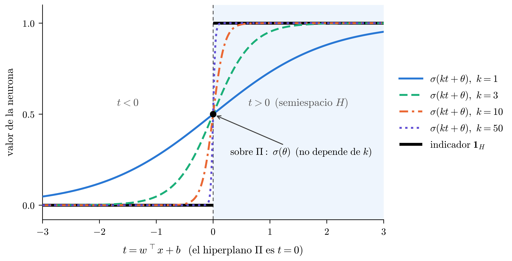
Fig. 3.9 Al aumentar \(k\), la neurona \(\sigma(k\,t+\theta)\) pasa de \(0\) a \(1\) en una franja cada vez más estrecha alrededor del hiperplano \(\Pi\) (\(t=0\)) y converge puntualmente al indicador \(\mathbf{1}_H\) fuera de \(\Pi\). Sobre \(\Pi\) vale siempre \(\sigma(\theta)\), sin importar \(k\).#
Definimos
Es una neurona con parámetros \((kw,\ kb+\theta)\), así que por (1)
Escribiendo \(t=w^\top x+b\), el límite puntual de \(\sigma_k\) cuando \(k\to\infty\) es:
si \(t>0\) (es decir, \(x\in H\)), entonces \(kt+\theta\to+\infty\) y \(\sigma_k(x)\to1\);
si \(t<0\), entonces \(kt+\theta\to-\infty\) y \(\sigma_k(x)\to0\);
si \(t=0\) (es decir, \(x\in\Pi\)), entonces \(\sigma_k(x)=\sigma(\theta)\) para todo \(k\).
Por tanto \(\sigma_k\to\mathbf{1}_H+\sigma(\theta)\mathbf{1}_\Pi\) puntualmente en \(K\). Además \(|\sigma_k|\le C\), y la constante \(C\) es integrable respecto de \(|\mu|\), que es finita. Aplicando convergencia dominada (ver Theorem 8.11) a \(\mu^+\) y a \(\mu^-\) por separado, y restando,
Como el miembro izquierdo es \(0\) para todo \(k\),
Los números \(\mu(H)\) y \(\mu(\Pi)\) no dependen de \(\theta\). Haciendo \(\theta\to-\infty\) en (2), como \(\sigma(\theta)\to0\), resulta \(\mu(H)=0\). (Haciendo \(\theta\to+\infty\) se obtendría además \(\mu(\Pi)=0\), pero este dato no interviene en el Paso 3, donde solo se usan los semiespacios abiertos.) Hemos probado que, para todo \(w\neq0\) y todo \(b\),
Dos consecuencias que se usan en el Paso 3:
\(\mu(K)=0\). Fijemos cualquier \(w\neq0\). Como \(K\) es acotado, \(M=\sup_{x\in K}|w^\top x|<\infty\). Tomando \(b>M\), para todo \(x\in K\) se tiene \(w^\top x\ge-|w^\top x|\ge-M\Longrightarrow w^\top x+b\ \ge\ b-M\ >\ 0\), es decir, \(K\subset H\). Como \(H\subset K\) por definición, \(H=K\), y por (3), \(\mu(K)=\mu(H)=0\).
Paso 3: \(\mu=0\), y por tanto \(L=0\)
(a) Reducción a la recta. Fijemos \(w\neq0\) y consideremos la medida imagen (pushforward) de \(\mu\) por \(x\mapsto w^\top x\):
Es una medida finita con signo sobre \(\mathbb{R}\), concentrada en el intervalo compacto \(w^\top(K)\). Por definición,
Este conjunto es el semiespacio \(\{x\in K:\ w^\top x+b>0\}\) con \(b=-a\), y por (3) su medida es \(0\). Así, \(\nu((a,\infty))=0\) para todo \(a\in\mathbb{R}\).
Además, todo \(x\in K\) cumple \(w^\top x\in\mathbb{R}\), así que \(\{x\in K:\ w^\top x\in\mathbb{R}\}=K\) y, por definición de \(\nu\),
Como \(\mu(K)=0\) (primera consecuencia del Paso 2), resulta \(\nu(\mathbb{R})=0\). La proyección \(x\mapsto w^\top x\) solo cambia dónde se mira la masa, no cuánta hay, por lo que la masa total de \(\nu\) coincide con la de \(\mu\).
Para \(a<c\), el intervalo \((a,\infty)\) se parte en dos trozos disjuntos, \((a,\infty)=(a,c]\cup(c,\infty)\), y como \(\nu\) es aditiva en conjuntos disjuntos,
Las dos medidas de la derecha valen \(0\) por lo anterior (con \(a\) y con \(c\)). La resta es válida porque \(\nu\) es finita: no aparece \(\infty-\infty\).
Hasta aquí solo sabemos que \(\nu\) se anula sobre los intervalos \((a,c]\) y sobre \(\mathbb{R}\), es decir, sobre la familia
Pero necesitamos \(\nu(B)=0\) para todo boreliano \(B\subset\mathbb{R}\), pues eso da
Para extenderlo usamos el teorema \(\pi\)-\(\lambda\) de Dynkin (ver Theorem 8.12), que exige que \(\mathcal{P}\) sea cerrada bajo intersecciones (un \(\pi\)-sistema) y que contenga al espacio total: la intersección de dos intervalos \((a,c]\) es otro intervalo de ese tipo o es vacía, y \(\mathbb{R}\in\mathcal{P}\). Además, \(\mathcal{P}\) genera la \(\sigma\)-álgebra de Borel de \(\mathbb{R}\), pues todo abierto es unión numerable de intervalos \((a,c]\).
Escribimos \(\nu=\nu^+-\nu^-\) (Jordan). Como \(\nu=0\) sobre \(\mathcal{P}\), las medidas positivas finitas \(\nu^+\) y \(\nu^-\) coinciden sobre \(\mathcal{P}\) (incluido \(\mathbb{R}\), lo que garantiza igualdad de masa total), y por Dynkin coinciden en todos los borelianos. Por tanto \(\nu=0\).
La fórmula de cambio de variables para medidas imagen exige tres cosas, y las tres se cumplen aquí:
\(T(x)=w^\top x\) es boreliana. Es continua, y la preimagen de un abierto por una función continua es abierta, luego boreliana. Así, \(\nu(B)=\mu(T^{-1}(B))\) está bien definida.
La medida es finita. Por el Paso 1(b), \(\mu=\mu^+-\mu^-\) con \(\mu^\pm\) medidas positivas finitas, y la fórmula se aplica a cada una y se resta.
\(h\) es boreliana y acotada. Entonces \(h\circ T\) también lo es, pues \((h\circ T)^{-1}(B)=T^{-1}(h^{-1}(B))\) es boreliano para todo boreliano \(B\). Así, ambas integrales están bien definidas y son finitas.
Por tanto, para toda \(h:\mathbb{R}\to\mathbb{R}\) boreliana y acotada,
Tomando \(h=\cos\) y \(h=\sin\) (continuas y acotadas) se obtiene
Por la fórmula de Euler, \(e^{\,i\,t}=\cos t+i\sin t\), y por linealidad de la integral,
Para \(w=0\) se tiene \(e^{\,i\,w^\top x}=1\) y la integral vale \(\mu(K)=0\) por el Paso 2. Luego la igualdad vale para todo \(w\in\mathbb{R}^n\).
(b) Transformada de Fourier nula implica medida nula. Como \(\mu\) está definida solo sobre borelianos de \(K\) y el Lemma 8.1 trabaja sobre \(\mathbb{R}^n\), la extendemos por cero fuera de \(K\):
Es una medida finita con signo sobre \(\mathbb{R}^n\) que pone la misma masa que \(\mu\) dentro de \(K\) y masa cero fuera, de modo que
para toda \(g\) acotada. Su transformada de Fourier se define, como para una función, integrando la onda \(e^{\,i\,w^\top x}\) contra la medida:
(Se usa el signo \(+\) en el exponente; con el signo \(-\) se obtiene \(\hat{\tilde\mu}(-w)\), y como la transformada es nula para todo \(w\), la convención no importa.) Por (a), \(\hat{\tilde\mu}\equiv0\). Por el teorema de unicidad de Fourier para medidas finitas (Lemma 8.1),
\(C_c(\mathbb{R}^n)\) es el conjunto de las funciones continuas \(G:\mathbb{R}^n\to\mathbb{R}\) de soporte compacto (la \(c\) viene de compact support). El soporte de \(G\) es la clausura del conjunto donde \(G\) no se anula:
Que sea compacto significa que es cerrado y acotado, es decir, \(G\) es idénticamente cero fuera de alguna bola de radio finito.
(c) Conclusión. Sea \(g\in C(K)\). Por el teorema de extensión de Tietze (Theorem 8.7), \(g\) se extiende a una función continua sobre \(\mathbb{R}^n\), y multiplicándola por una función de corte igual a \(1\) sobre \(K\) y de soporte compacto se obtiene \(G\in C_c(\mathbb{R}^n)\) con \(G|_K=g\). Por el Lema B,
Como \(g\in C(K)\) era arbitraria, \(L=0\) (equivalentemente, \(\mu=0\) por la unicidad de Riesz). Esto contradice \(L\neq0\) del Paso 1. Por lo tanto la hipótesis \(\overline{\mathcal{N}_\sigma}\neq C(K)\) es falsa, es decir,
Parte III. Suficiencia para ReLU
La función \(\mathrm{ReLU}(t)=\max\{t,0\}\) no es sigmoidal: tiende a \(+\infty\), y no a \(1\), cuando \(t\to+\infty\), y por tanto no es acotada. Así, la Parte II no se aplica directamente. Para reducir este caso a ella, “recortamos” ReLU restando una copia desplazada:

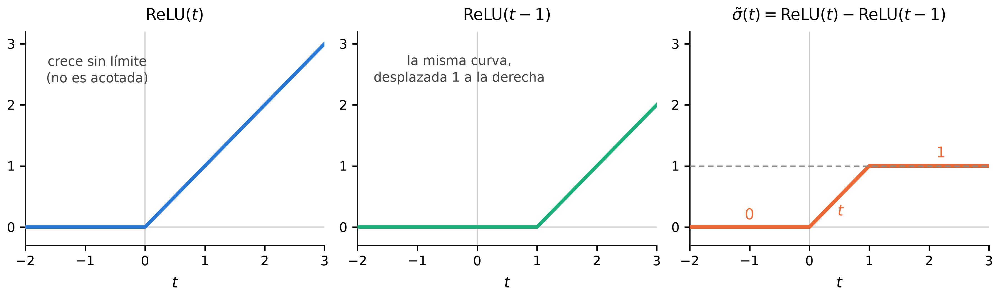
Fig. 3.10 Al restar a \(\mathrm{ReLU}(t)\) su copia desplazada \(\mathrm{ReLU}(t-1)\), el crecimiento se “recorta” y se obtiene la rampa \(\tilde\sigma\), que es sigmoidal continua.#
Calculando por tramos: si \(t\le0\), \(\tilde\sigma(t)=0-0=0\); si \(0\le t\le1\), \(\tilde\sigma(t)=t-0=t\); si \(t\ge1\), \(\tilde\sigma(t)=t-(t-1)=1\). Luego \(\tilde\sigma\) es continua, vale \(0\) para \(t\le0\) y \(1\) para \(t\ge1\), es decir, es sigmoidal continua, y por la Parte II, \(\mathcal{N}_{\tilde\sigma}\) es denso en \(C(K)\).
Denotemos por \(\mathcal{N}_{\mathrm{ReLU}}\) el conjunto \(\mathcal{N}_\sigma\) con \(\sigma=\mathrm{ReLU}\), y análogamente \(\mathcal{N}_{\tilde\sigma}\) para \(\sigma=\tilde\sigma\):
Es decir, \(\mathcal{N}_{\mathrm{ReLU}}\) contiene las funciones \(\sum_{j=1}^{N}\alpha_j\,\mathrm{ReLU}(w_j^\top x+b_j)\) (redes de una capa oculta con activación ReLU).
Cada generador de \(\mathcal{N}_{\tilde\sigma}\) es una combinación lineal de dos neuronas ReLU: evaluando la definición de \(\tilde\sigma\) en \(t=w^\top x+b\) y usando \((w^\top x+b)-1=w^\top x+(b-1)\),
Los dos términos son neuronas ReLU, con parámetros \((w,b)\) y \((w,b-1)\), así que pertenecen a \(\mathcal{N}_{\mathrm{ReLU}}\). Como \(\mathcal{N}_{\mathrm{ReLU}}\) es un subespacio (cerrado bajo combinaciones lineales), contiene a todos esos generadores y, por tanto, a todo su generado:
Tomando clausuras, y usando que \(\mathcal{N}_{\tilde\sigma}\) es denso en \(C(K)\) por la Parte II,
de modo que \(\overline{\mathcal{N}_{\mathrm{ReLU}}}=C(K)\). \(\qquad\blacksquare\)
Alcance y limitaciones del teorema
El teorema es de existencia: no dice cuántas neuronas \(N\) se necesitan ni cómo encontrar los parámetros mediante entrenamiento. Bajo condiciones de suavidad de \(f\) (momento de Fourier finito), Barron [Barron, 1993] da una tasa de aproximación en \(L^2\) del orden de \(N^{-1/2}\) independiente de la dimensión de entrada.
Es un resultado para capas totalmente conectadas. Para redes convolucionales profundas, la universalidad fue establecida por [Zhou, 2020], lo que muestra que restringir las capas a convoluciones (reparto de pesos) no destruye la capacidad de aproximación.
La versión original está en [Cybenko, 1989] y la extensión a funciones medibles y a otras normas en [Hornik et al., 1989]. Las herramientas funcionales (Hahn-Banach, Riesz) están en [Rudin, 1991].
3.5. La etapa de agrupación#
Pooling espacial: Este proceso reduce la dimensionalidad de las matrices de mapas de características. Se emplea una ventana deslizante, cuyo desplazamiento se define mediante un parámetro stride. La operación selecciona un único valor que representa todos los píxeles dentro de la ventana.La operación más común es la agrupación máxima (max pooling), donde se selecciona el píxel de mayor valor dentro de la ventana. Otra opción es la agrupación promedio (average pooling), que toma el valor medio de los píxeles, también conocida como pooling de suma. En la ilustración, una matriz de 6 × 6 se reduce aplicando una ventana de 2 × 2 con un stride de 2.

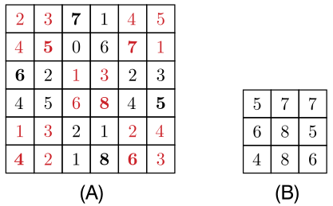
Fig. 3.11 (A) Matriz original de tamaño de 6 × 6. Agrupación mediante una ventana de 2 × 2 y un stride \(s = 2\). Valor máximo por ubicación de la ventana se indica en negrita. (B) Matriz 3 × 3 resultante tras la agrupación máxima. Fuente [Theodoridis, 2020].#
La misma fórmula de la Eq. (3.5) permite calcular el tamaño de la matriz resultante en el caso general. La agrupación reduce la dimensionalidad y el tamaño de las matrices, lo que es crucial, ya que cada salida se convierte en la entrada de la siguiente capa. Controlar el tamaño es esencial para gestionar el número de parámetros sin comprometer excesivamente la información.

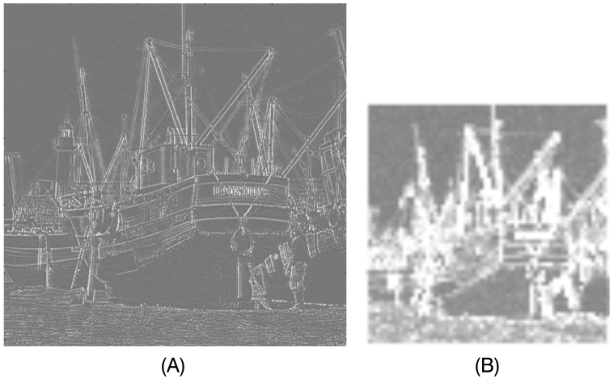
Fig. 3.12 (A) Bordes de la imagen del barco tras la aplicación de ReLu (B) Imagen resultante tras aplicar max-pooling utilizando una ventana de 8 × 8. Fuente [Theodoridis, 2020].#
Observación
Fig. 3.12 muestra el efecto de aplicar el pooling a la imagen de la izquierda. Sin duda, los bordes se vuelven más gruesos, pero la información relacionada con los bordes puede extraerse. Nótese que después de la agrupación, el tamaño de la matriz imagen es reducido.
Desde otro punto de vista, el polling resume las estadísticas dentro del área pooling. El pooling puede considerarse un tipo especial de
filtrado, en el que, en lugar de la convolución, se selecciona el valor máximo (o medio) de la imagen. El pooling ayuda a que la representación sea aproximadamente invariante a pequeñas traslaciones de la entrada.
De la equivarianza a la invarianza. La observación anterior dice que el pooling hace la representación aproximadamente invariante. El siguiente corolario precisa cuándo la invarianza es exacta.
Corollary 3.1 (Invarianza tras agrupación global)
Sea \(G\) un grupo abeliano finito (por ejemplo, \(G=\mathbb{Z}_m\times\mathbb{Z}_n\), los píxeles de una imagen de \(m\times n\) con índices tomados módulo \(m\) y \(n\)) y sea \(S_a\) el desplazamiento por \(a\in G\). Sea \(\Phi=A_L\circ\cdots\circ A_1\) con \(A_l(x)=\rho_l\big(T_{h_l}x+b_l\mathbf{1}\big)\), donde \(T_{h_l}\) es la convolución periódica de (3.4) con stride 1, \(b_l\in\mathbb{R}\) es un sesgo compartido y \(\rho_l\) se aplica píxel a píxel. Entonces:
\(\Phi(S_a x)=S_a\,\Phi(x)\) para todo \(a\in G\) (equivarianza).
Si \(P(y)=\frac{1}{|G|}\sum_{u\in G}y(u)\) es la agrupación promedio global, entonces \(P(\Phi(S_a x))=P(\Phi(x))\) (invarianza).
Proof. Paso 0 (convenciones). \(G\) es un grupo abeliano finito: un conjunto finito con una operación suma conmutativa, con elemento neutro \(0\) y opuestos. Por ejemplo, \(G=\mathbb{Z}_n\) para señales unidimensionales periódicas (audio, series de tiempo) y \(G=\mathbb{Z}_m\times\mathbb{Z}_n\) para imágenes de \(m\times n\) con frontera periódica.
Verificación de que \(\mathbb{Z}_n\) es un grupo abeliano finito. Sea \(n\geq 1\) y \(\mathbb{Z}_n=\{0,1,\dots,n-1\}\) con la suma módulo \(n\): \(a\oplus b\) es el resto de dividir \(a+b\) entre \(n\). Equivalentemente, \(a\oplus b=c\) si y solo si \(a+b\equiv c \pmod n\) con \(c\in\{0,\dots,n-1\}\).
Finito. \(|\mathbb{Z}_n|=n\).
Clausura. Por la división euclídea, todo entero \(a+b\) se escribe de forma única como \(a+b=qn+c\) con \(0\leq c<n\). Por lo tanto \(a\oplus b=c\in\mathbb{Z}_n\).
Asociatividad. Como \(\oplus\) solo reduce módulo \(n\) la suma usual, y la reducción módulo \(n\) es compatible con la suma (\(x\equiv x'\) implica \(x+y\equiv x'+y\)), ambos lados de \((a\oplus b)\oplus c=a\oplus(b\oplus c)\) son el resto de \(a+b+c\) entre \(n\). La igualdad se hereda de la asociatividad de la suma en \(\mathbb{Z}\).
Elemento neutro. Para todo \(a\in\mathbb{Z}_n\), \(a\oplus 0=0\oplus a=a\), porque \(0\leq a<n\) ya es su propio resto.
Opuestos. Si \(a=0\), su opuesto es \(0\). Si \(1\leq a\leq n-1\), el elemento \(n-a\) pertenece a \(\{1,\dots,n-1\}\) y \(a+(n-a)=n\equiv 0 \pmod n\), de modo que \(a\oplus(n-a)=0\).
Conmutatividad. \(a\oplus b=b\oplus a\), porque \(a+b=b+a\) en \(\mathbb{Z}\) y, por tanto, ambos tienen el mismo resto módulo \(n\).
Esto muestra que \((\mathbb{Z}_n,\oplus)\) es un grupo abeliano finito de orden \(n\). Para \(G=\mathbb{Z}_m\times\mathbb{Z}_n\) con la suma por componentes, \((a,b)+(c,d)=(a+c,\,b+d)\), cada axioma se verifica componente a componente con lo anterior, así que \(G\) también es abeliano y finito, con \(|G|=mn\).
Una señal es una función \(x:G\to\mathbb{R}\), es decir, un elemento de \(\mathbb{R}^{G}\), y el desplazamiento por \(a\in G\) es
\[ (S_a x)(u)=x(u-a). \]La convolución periódica con stride 1 es
\[ (T_h x)(u)=\sum_{v\in G}h(v)\,x(u-v). \]Como el stride es 1 y la frontera es periódica, \(T_h\) no cambia el dominio: envía \(\mathbb{R}^{G}\) en \(\mathbb{R}^{G}\). Lo mismo ocurre con el sesgo y con \(\rho_l\), de modo que cada \(A_l:\mathbb{R}^{G}\to\mathbb{R}^{G}\), la composición \(\Phi\) está bien definida y \(S_a\) actúa sobre la entrada y sobre la salida de cada capa.
Paso 1 (la convolución es equivariante). Este es el contenido del Theorem 3.1; se verifica directamente. Para todo \(u\in G\),
\[\begin{split} \begin{aligned} (T_h S_a x)(u) &=\sum_{v\in G}h(v)\,(S_a x)(u-v)\\ &=\sum_{v\in G}h(v)\,x(u-v-a)\\ &=(T_h x)(u-a)\\[4mm] &=(S_a T_h x)(u). \end{aligned} \end{split}\]La tercera igualdad es la definición de \(T_h\) evaluada en el punto \(u-a\), y usa que \(G\) es abeliano: \(u-v-a=(u-a)-v\). Por lo tanto \(T_h S_a=S_a T_h\).
Paso 2 (el sesgo conmuta con \(S_a\)). Sea \(B_b(y):=y+b\mathbf{1}\). Como \((S_a\mathbf{1})(u)=\mathbf{1}(u-a)=1\) para todo \(u\), es decir \(S_a\mathbf{1}=\mathbf{1}\), y \(S_a\) es lineal,
\[ S_a B_b(y)=S_a y+b\,S_a\mathbf{1}=S_a y+b\mathbf{1}=B_b(S_a y). \]Esto usa que el sesgo es el mismo número en todos los píxeles. Con un sesgo \(\beta(u)\) que dependa del píxel se tendría \(S_a\beta\neq\beta\) en general, y la conmutación fallaría.
Paso 3 (una función píxel a píxel conmuta con \(S_a\)). Sea \(\mathcal{R}_\rho(y)(u):=\rho(y(u))\), con la misma función \(\rho:\mathbb{R}\to\mathbb{R}\) en todos los píxeles. Entonces
\[ \mathcal{R}_\rho(S_a y)(u)=\rho\big((S_a y)(u)\big)=\rho\big(y(u-a)\big)=\mathcal{R}_\rho(y)(u-a)=\big(S_a\mathcal{R}_\rho(y)\big)(u). \]Aquí no se exige nada sobre \(\rho\) (ni linealidad, ni monotonía, ni continuidad): solo que sea la misma en cada píxel.
Paso 4 (cada capa es equivariante). Escribamos \(A_l=\mathcal{R}_{\rho_l}\circ B_{b_l}\circ T_{h_l}\). Aplicando sucesivamente los Pasos 1, 2 y 3,
\[ A_l S_a=\mathcal{R}_{\rho_l}B_{b_l}T_{h_l}S_a=\mathcal{R}_{\rho_l}B_{b_l}S_aT_{h_l}=\mathcal{R}_{\rho_l}S_aB_{b_l}T_{h_l}=S_a\mathcal{R}_{\rho_l}B_{b_l}T_{h_l}=S_aA_l. \]Paso 5 (la composición es equivariante: prueba de (1)). Sea \(\Phi_k:=A_k\circ\cdots\circ A_1\). Se prueba por inducción en \(k\) que \(\Phi_kS_a=S_a\Phi_k\). Para \(k=1\) es el Paso 4. Si vale para \(k-1\),
\[ \Phi_kS_a=A_k\Phi_{k-1}S_a=A_kS_a\Phi_{k-1}=S_aA_k\Phi_{k-1}=S_a\Phi_k, \]donde la segunda igualdad es la hipótesis de inducción y la tercera es el Paso 4. Tomando \(k=L\) se obtiene \(\Phi(S_ax)=S_a\Phi(x)\) para todo \(x\) y todo \(a\in G\), que es (1).
Paso 6 (la agrupación promedio es invariante). Sea \(y\in\mathbb{R}^{G}\) y \(a\in G\). Como \(G\) es un grupo, la aplicación \(u\mapsto u-a\) es una biyección de \(G\) en sí mismo. Reindexando la suma con \(v=u-a\),
\[ P(S_ay)=\frac{1}{|G|}\sum_{u\in G}y(u-a)=\frac{1}{|G|}\sum_{v\in G}y(v)=P(y). \]Aquí se usa que \(G\) es finito: la suma tiene un número finito de términos y \(|G|\) es un número bien definido.
Paso 7 (prueba de (2)). Aplicando el Paso 6 con \(y=\Phi(x)\) y luego (1),
\[ P\big(\Phi(S_ax)\big)=P\big(S_a\Phi(x)\big)=P\big(\Phi(x)\big).\qquad\blacksquare \]Observaciones.
Qué hace cada parte. La equivarianza (1) dice que desplazar la entrada desplaza la salida, es decir, la red “sabe dónde” están las características. La agrupación global elimina esa información de posición, y por eso la composición \(P\circ\Phi\) es invariante.
Dónde se usa cada hipótesis sobre \(G\). Que \(G\) sea abeliano se usa en el Paso 1 (conmutar \(-v\) y \(-a\)); que sea finito, en el Paso 6 (la suma y la normalización por \(|G|\)). Los filtros \(h_l\), los sesgos \(b_l\) y las funciones \(\rho_l\) se comparten entre todos los píxeles (Pasos 1 a 3), el stride es 1 y la frontera es periódica (para que cada \(A_l\) preserve el dominio \(G\)). Con stride \(s>1\) solo se obtiene equivarianza respecto de los desplazamientos que son múltiplos de \(s\), es decir, de un subgrupo de \(G\). Con relleno de ceros en vez de frontera periódica, la equivarianza es solo aproximada cerca de los bordes.
La invarianza no depende de que la agrupación sea el promedio. El Paso 6 solo usa que \(P\) es una función simétrica de los valores \(y(u)\), \(u\in G\) (no depende del orden). Por lo tanto, \(P(y)=\max_{u\in G}y(u)\) también cumple \(P(S_ay)=P(y)\).
Alcance. La invarianza vale únicamente respecto de los desplazamientos de \(G\). No implica invarianza respecto de rotaciones, reflexiones ni cambios de escala.
Lectura para las CNN del notebook. Con max pooling local de ventana \(w\) y stride \(w\), la invarianza es exacta solo para traslaciones múltiplos de \(w\) y aproximada en los demás casos, que es lo que describe la observación anterior. La invarianza exacta a todas las traslaciones se obtiene con agrupación global, que es la estrategia de las arquitecturas modernas antes del clasificador.
3.6. Convolución sobre volúmenes#
Observación
En la Fig. 3.3, la primera capa oculta genera tres matrices de imágenes como entrada para la siguiente capa, similar a la representación RGB de imágenes en color, donde cada matriz indica la intensidad de un color en cada píxel con valores de 0 a 255.
Rojo (R) |
Verde (G) |
Azul (B) |
Color resultante |
|---|---|---|---|
255 |
0 |
0 |
🔴 Rojo puro |
0 |
255 |
0 |
🟢 Verde puro |
0 |
0 |
255 |
🔵 Azul puro |
255 |
255 |
0 |
🟡 Amarillo (Rojo + Verde) |
0 |
255 |
255 |
🔵 Cian (Verde + Azul) |
255 |
0 |
255 |
🟣 Magenta (Rojo + Azul) |
255 |
255 |
255 |
⚪ Blanco (Máxima intensidad) |
0 |
0 |
0 |
⚫ Negro (Sin intensidad) |
Las entradas no son matrices bidimensionales, sino conjuntos de matrices bidimensionales, conocidos en matemáticas como tensores tridimensionales o volúmenes. Se adopta este último término por su relación con la geometría. El desafío radica en definir cómo realizar convoluciones en estos volúmenes.
import numpy as np
import matplotlib.pyplot as plt
imagen = np.array([
[[255, 0, 0], [0, 255, 0], [0, 0, 255]], # Rojo, Verde, Azul
[[255, 255, 0], [0, 255, 255], [255, 0, 255]], # Amarillo, Cian, Magenta
[[255, 255, 255], [128, 128, 128], [0, 0, 0]] # Blanco, Gris, Negro
], dtype=np.uint8)
canal_rojo = imagen[:, :, 0] # Matriz de valores R
canal_verde = imagen[:, :, 1] # Matriz de valores G
canal_azul = imagen[:, :, 2] # Matriz de valores B
plt.imshow(imagen)
plt.show()
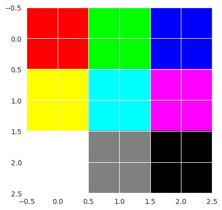
print("Matriz del canal Rojo (R):\n", canal_rojo)
print("Matriz del canal Verde (G):\n", canal_verde)
print("Matriz del canal Azul (B):\n", canal_azul)
Matriz del canal Rojo (R):
[[255 0 0]
[255 0 255]
[255 128 0]]
Matriz del canal Verde (G):
[[ 0 255 0]
[255 255 0]
[255 128 0]]
Matriz del canal Azul (B):
[[ 0 0 255]
[ 0 255 255]
[255 128 0]]

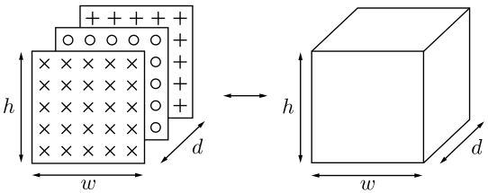
Fig. 3.13 Se apilan \(d\) matrices de tamaño \(h\times w\) cada una para formar un volumen de tamaño \(h \times w\times d\). En este caso, \(h = w = 5\) y \(d = 3\). Fuente [Theodoridis, 2020].#
Por convención, las tres dimensiones de un volumen se representarán como \(h\) para la altura, \(w\) para la anchura y \(d\) para la profundidad. Nótese que la profundidad \(d\) corresponde al número de imágenes implicadas. Así pues, si tenemos tres imágenes de 256 × 256, entonces \(h = w = 256\) y \(d = 3\) y diremos que el volumen es de tamaño (dimensión) 256 × 256 × 3. Fig. 3.13 ilustra la geometría asociada a las respectivas definiciones.
Tipos de formas tensoriales
En el procesamiento de imágenes, cada canal es una matriz 2D que contiene un tipo específico de información. Cuando se combinan varios canales, obtenemos un tensor 3D con forma:
\[ \text{(alto, ancho, canales)} \]Ejemplos de formas
Tipo de imagen |
Forma del tensor |
|---|---|
Escala de grises |
|
RGB (color) |
|
RGBA (color + transparencia) |
|
Satelital multiespectral |
|
Hiperespectral |
|
En
TensorFlow, cuando trabajamos con lotes de imágenes, la forma es\[ \text{(batch_size, alto, ancho, canales)} \]Las imágenes con más de tres canales se utilizan ampliamente en ciencia, ingeniería y medicina. Algunos casos representativos son los siguientes:
Teledetección Satelital
Sentinel-2 (ESA): imágenes multiespectrales con 13 bandas que capturan información en el visible, infrarrojo cercano e infrarrojo de onda corta.
Aplicaciones: monitoreo de cultivos, detección de deforestación, seguimiento de incendios forestales, calidad del agua.
Landsat-8 (NASA/USGS): imágenes con 11 bandas espectrales para estudios ambientales y urbanos.
Ejemplo: cálculo del NDVI (Normalized Difference Vegetation Index) para medir la salud de la vegetación.
Medicina e Imágenes Biomédicas
Resonancia Magnética (MRI): puede incluir múltiples secuencias (T1, T2, FLAIR, DWI, etc.), cada una representando un canal con distinta información anatómica o funcional.
Aplicaciones: detección de tumores, diagnóstico neurológico.
Microscopía de fluorescencia: imágenes con canales multicolor para visualizar diferentes proteínas o estructuras celulares.
Defensa y Detección
Radar de Apertura Sintética (SAR): imágenes con varios canales que representan diferentes polarizaciones de radar.
Aplicaciones: detección de barcos, monitoreo de movimientos de tierra, vigilancia marítima.
Agricultura de Precisión
Drones multiespectrales: capturan entre 5 y 10 bandas (RGB + infrarrojos).
Aplicaciones: estimación de rendimiento de cultivos, riego inteligente, detección temprana de plagas.
Industria y Calidad
Cámaras hiperespectrales (200+ canales): cada canal corresponde a una longitud de onda distinta.
Aplicaciones: inspección de alimentos (detección de contaminantes), control de calidad en textiles, minería (identificación de minerales).
Convolución de volúmenes
En una capa con entrada de dimensiones \(h \times w \times d\), los filtros de las capas ocultas también son volúmenes, pero deben tener la misma profundidad \(d\) que la entrada, aunque su altura y anchura pueden variar.
Si la entrada es un volumen \(\boldsymbol{I}\) de \(l \times l \times d\), este consta de \(d\) imágenes \(I_r\) de \(l \times l\). Un filtro \(\boldsymbol{H}\) de \(m \times m \times d\) también se compone de \(d\) imágenes \(H_r\) de \(m \times m\). La convolución se define a partir de estos elementos.
Convolucionar las correspondientes matrices de imágenes bidimensionales para generar \(d\) matrices bidimensionales de salida, es decir
La convolución de los dos volúmenes, \(\boldsymbol{I}\) y \(\boldsymbol{H}\), se define como
\[ O=\sum_{r=1}^{d}O_{r}. \]En otras palabras, la
convolución (denotada por\(\star\))de dos volúmenes es una matriz bidimensional, es decir,\[ \text{3D volume}\star\text{3D volume}=\text{2D array}. \]

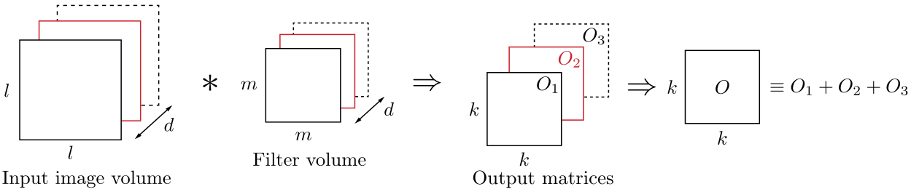
Fig. 3.14 Convolución \(\text{3D volume}\star\text{3D volume}=\text{2D array}\). \(h = w = l, h = w = m\) y \(d = 3\).#
La operación se ilustra en la Fig. 3.14. Las matrices correspondientes (mostradas por diferentes colores y tipos de líneas). Las tres matrices de salida (\(d = 3\)) se suman posteriormente para formar la convolución de los dos volúmenes. La dimensión \(k\) de la salida depende de los valores de \(l\) y \(m\), del stride \(s\) y del padding \(p\), si se utiliza, según la Eq. (3.5).
Observación
En la práctica, cada capa de una CNN comprende varios de estos volúmenes de filtrado. Por ejemplo, si la entrada a una capa es un volumen \(l\times l\times d\), y hay, digamos, \(c\) volúmenes de núcleo, cada uno de dimensiones \(m\times m\times d\), la salida de la capa será un volumen \(k\times k\times c\), donde \(k\) se determina la Eq. (3.5).
3.7. Red en red y convolución 1 × 1#
Observación
La convolución 1 × 1 no tiene sentido cuando se trata de matrices bidimensionales. En efecto una matriz de filtro 1 × 1 es un escalar. Convolucionar una matriz \(I\) de \(l\times l\) con un escalar \(a\) equivale a deslizar el valor escalar sobre todos los píxeles y multiplicar cada uno de ellos por \(a\). El resultado es la trivial \(aI\) .
Sin embargo, cuando se trata de volúmenes, la convolución 1 × 1 tiene sentido. En este caso, el filtro correspondiente, \(\boldsymbol{H}\), es un volumen de tamaño \(1\times 1\times d\). Geométricamente, se trata de un “tubo”, con \(h = w = 1\) y \(d\) elementos en profundidad, \(h(1, 1, r), r = 1, 2,\dots,d\). Por lo tanto, el resultado de la convolución de un volumen \(\boldsymbol{I}\) de \(l\times l\times d\) con un \(1\times 1\times d\) volumen \(H\) es la media ponderada,
\[ O=\boldsymbol{I}\star\boldsymbol{H}=\sum_{r=1}^{d}h(1, 1, r)I_{r} \]donde \(I_{r},~r=1,2,\dots,d,\) son las \(d\) matrices, cada una de dimensiones \(l\times l\), que comprende \(\boldsymbol{I}\).
Convolución \(1\times 1\)
Ahora bien, cabe preguntarse por qué necesitamos una operación de este tipo en la práctica. La respuesta está relacionada con el tamaño de los volúmenes implicados; mediante el uso de convoluciones \(1\times 1\), se puede
controlar y cambiar su tamaño para adaptarlo a las necesidades de la red.Supongamos que en una etapa/capa de una red profunda hemos obtenido un volumen \(\boldsymbol{I}\) de dimensiones \(k\times k\times d\). Para cambiar la profundidad de \(d\) a \(c\), conservando el mismo tamaño \(k\), para la altura y la anchura, empleamos \(c\) volúmenes, \(H_{t}, t = 1, 2,\dots,c\), cada uno de dimensiones \(1\times 1\times d\). Al realizar las \(c\) convoluciones obtenemos
\[ O_{t}=\boldsymbol{I}\star\boldsymbol{H}_{t}=\sum_{r=1}^{d}h_{t}(1, 1, r)I_{r},~t=1,2,\dots,c. \]Apilando \(O_{t}, t = 1, 2,\dots,c\), obtenemos el volumen \(\boldsymbol{O}\) de dimensión \(k\times k\times c\) (ver Fig. 3.15).
La información original se sigue conservando en el nuevo volumen, de forma promediada. A menudo, una vez obtenido el nuevo volumen \(\boldsymbol{O}\), sus elementos se “empujan” a través de una no linealidad, por ejemplo,
ReLU.La convolución \(1\times 1\) seguida de la no linealidad se denomina
operación de red en redy su finalidad es añadir una etapa de no linealidad adicional en el flujo de operaciones a través de la red. Por lo tanto, en este contexto, si \(c<d\), la operación de red en red puede considerarse una técnica de reducción de la dimensionalidad no lineal.

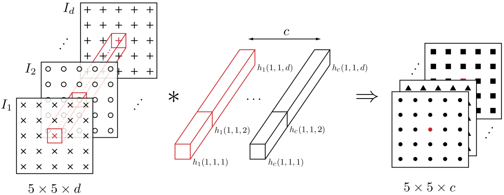
Fig. 3.15 Convolución \(1\times 1\), con \(c\) tubos de dimensión \(1\times 1\times d\), donde \(d\) es la profundidad del volumen de entrada. Fuente [Theodoridis, 2020].#
Ejemplo
Consideremos que la entrada de una capa es un volumen \(\boldsymbol{I}\) de 28 × 28 × 192. El objetivo es producir a la salida de la capa un volumen, \(O\), de dimensión 28 × 28 × 32. Para ello emplear 5 × 5 convoluciones iguales y un volumen intermedio \(\boldsymbol{O}'\) de dimensiones \(28\times 28\times 16\). Nótese que en la última capa se usó padding de 2 píxeles en cada borde.
Observe que, rellenando todas las matrices apiladas en \(\boldsymbol{I}\) con \(p\) cero columnas y filas, se tiene que el número de multiplicaciones y adiciones (MADS) es \(3.7\times 10^{6}\times 32\approx 120~\) millones MADS. Además, usando convoluciones \(1\times 1\), este número se reduce a \(28^{2}\times 25\times 16\times 32\approx 10\) millones MADS (ver [Theodoridis, 2020]).
A menudo, el volumen intermedio, \(\boldsymbol{O}'\), se conoce como capa
cuello de botella (bottleneck layer); su función es “reducir” primero el tamaño del volumen de entrada, antes de obtener el volumen de salida final (ver Fig. 3.16).

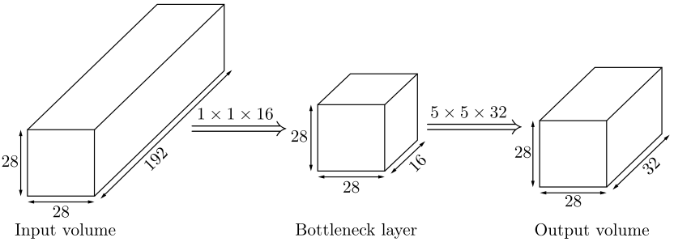
Fig. 3.16 Capa cuello de botella. Fuente [Theodoridis, 2020].#
3.8. Arquitectura CNN completa#
La forma típica de una red convolucional completa consiste en una
secuencia de capas convolucionales, cada una de las cuales que comprende los tres pasos básicos, a saber,convolución (Conv.), no linealidad (ReLU) y agrupación (Pooling), como se describe al principio de esta sección. Dependiendo de la aplicación,se pueden apilar tantas capas como sea necesario, donde la salida de una capa se convierte en la entrada de la siguiente. Las entradas y salidas de cada capa son volúmenes, como se ha descrito anteriormente.

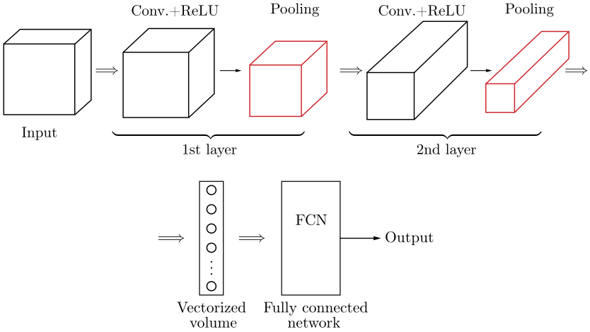
Fig. 3.17 Arquitectura CNN completa. Fuente [Theodoridis, 2020].#
Procedimiento de una CNN completa
En la primera capa, se aplican filtros para realizar convoluciones seguidas de una transformación no lineal. Luego, la operación de pooling reduce las dimensiones de la salida, que sirve como entrada para la siguiente capa. Este proceso se repite hasta que el volumen final se vectoriza, en un paso conocido como flattening.
El resultado es un vector de características obtenido a partir de las transformaciones aplicadas en cada capa convolucional. Este vector se utiliza como entrada para un modelo de aprendizaje, como una red neuronal totalmente conectada o una máquina de vectores de soporte.
Observación
La estrategia consiste en reducir dimensiones mientras se incrementa la profundidad, aumentando filtros por etapa para extraer más características. La cantidad de capas convolucionales y totalmente conectadas depende de la aplicación, sin un método formal para su determinación, por lo que se elige mediante evaluación. Se sugiere partir de arquitecturas existentes, y el aprendizaje Bayesiano facilita la selección óptima de nodos o filtros.
¿Por qué se puede entrenar una CNN completa? Una red como la descrita es una composición de convolución, no linealidad y agrupación. El entrenamiento calcula el gradiente de la pérdida respecto a todos los filtros mediante retropropagación. El siguiente teorema establece que ese cálculo es correcto y barato.
Theorem 3.3 (Retropropagación (regla de la cadena en modo inverso))
Sea \(\mathcal{L}(\theta)=\ell(a_L)\) con \(a_0=x\) y \(a_k=f_k(a_{k-1};\theta_k)\in\mathbb{R}^{n_k}\), donde cada \(f_k\) es de clase \(C^1\) y \(\ell:\mathbb{R}^{n_L}\to\mathbb{R}\) es \(C^1\). Definamos hacia atrás
Entonces, para todo \(k\),
Además, si evaluar cada producto \(J_k^\top\delta_k\) y \((\partial f_k/\partial\theta_k)^\top\delta_k\) cuesta una constante por el costo de evaluar \(f_k\), el gradiente completo se obtiene con un único pase hacia atrás cuyo costo es una constante por el costo del pase hacia adelante, sin formar nunca los jacobianos.
Proof. - Paso 0 (preparación: convenciones y objetos que se van a usar).
Derivada y gradiente. Para \(g:\mathbb{R}^n\to\mathbb{R}\) diferenciable, la derivada \(Dg(z)\) es una matriz fila de tamaño \(1\times n\) y el gradiente es su transpuesta, \(\nabla g(z)=Dg(z)^{\top}\in\mathbb{R}^n\). Para \(f:\mathbb{R}^n\to\mathbb{R}^m\) diferenciable, \(Df(z)\) es el jacobiano, de tamaño \(m\times n\).
Justificación. Con esta convención la regla de la cadena se escribe sin transposiciones, y el gradiente se obtiene al final con una sola transposición.
Regla de la cadena. Si \(f:\mathbb{R}^n\to\mathbb{R}^m\) y \(g:\mathbb{R}^m\to\mathbb{R}^p\) son \(C^1\), entonces \(g\circ f\) es \(C^1\) y
\[ D(g\circ f)(z)=Dg\big(f(z)\big)\,Df(z). \]Justificación. Es el teorema estándar de la derivada de una composición. Las dimensiones son consistentes: \((p\times m)(m\times n)=p\times n\). Se usa aquí la hipótesis de que cada \(f_k\) y \(\ell\) son \(C^1\).
Transpuesta de un producto. \((AB)^{\top}=B^{\top}A^{\top}\).
Justificación. Es una propiedad del álgebra lineal. Es la que convierte el producto de derivadas (fila por matriz) en el producto de transpuestas (matriz transpuesta por columna) que aparece en \(\delta_{k-1}=J_k^{\top}\delta_k\).
Funciones “cola”. Fijados \(x\) y todos los parámetros \(\theta_1,\dots,\theta_L\), se definen \(F_L,F_{L-1},\dots,F_0\) por
\[ F_L(z)=\ell(z),\qquad F_{k-1}(z)=F_k\big(f_k(z;\theta_k)\big),\quad k=L,\dots,1, \]es decir, \(F_k(z)=\ell\big(f_L(\cdots f_{k+1}(z;\theta_{k+1})\cdots;\theta_L)\big)\). Cada \(F_k:\mathbb{R}^{n_k}\to\mathbb{R}\) es \(C^1\) por ser composición de funciones \(C^1\).
Justificación. La notación \(\nabla_{a_k}\mathcal{L}\) es ambigua si no se dice como función de qué se deriva. \(F_k\) responde exactamente a la pregunta “si cambio la activación de la capa \(k\) y dejo intactas las capas posteriores, cuánto cambia la pérdida”. Con ella, el objeto a calcular queda definido sin ambigüedad:
\[ \nabla_{a_k}\mathcal{L}:=\nabla F_k(a_k),\qquad \mathcal{L}=F_k(a_k)\ \text{ para todo }k. \]La segunda igualdad se verifica desenrollando la definición, ya que \(F_k(a_k)=\ell(f_L(\cdots f_{k+1}(a_k)\cdots))=\ell(a_L)=\mathcal{L}\).
Independencia de los parámetros. Las activaciones \(a_0,\dots,a_{k-1}\) dependen de \(x,\theta_1,\dots,\theta_{k-1}\), pero no de \(\theta_k\). Por tanto, al derivar respecto de \(\theta_k\) se puede tratar \(a_{k-1}\) como una constante.
Justificación. Cada capa tiene su propio bloque de parámetros \(\theta_k\) y \(a_{k-1}\) se calcula solo con las capas \(1,\dots,k-1\). Es lo que permite escribir \(\mathcal{L}\) como función de \(\theta_k\) mediante una composición simple (Paso 3).
Paso 1 (qué se va a demostrar y por qué inducción descendente). Se quiere probar, para \(k=L,L-1,\dots,1\), la afirmación
\[ P(k):\qquad \nabla F_k(a_k)=\delta_k . \]Justificación de la estrategia. La recursión que define \(\delta\) va hacia atrás: \(\delta_L\) se da explícitamente y \(\delta_{k-1}\) se obtiene de \(\delta_k\). Una definición recursiva descendente se compara con una cantidad también descendente mediante inducción descendente: se verifica el caso \(k=L\) y se prueba que \(P(k)\Rightarrow P(k-1)\). Esto cubre todos los índices \(L,L-1,\dots,0\).
Paso 2 (caso base \(k=L\)). Como \(F_L=\ell\),
\[ \nabla F_L(a_L)=\nabla\ell(a_L)=\delta_L . \]Justificación. La primera igualdad es la definición de \(F_L\). La segunda es la definición de \(\delta_L\) en el enunciado. No hay ningún cálculo adicional: la pérdida depende directamente de \(a_L\).
Paso 3 (paso inductivo: de \(\delta_k\) a \(\delta_{k-1}\) y al gradiente en \(\theta_k\)). Supóngase \(P(k)\), es decir \(\nabla F_k(a_k)=\delta_k\).
(3a) Derivada respecto de la entrada de la capa. Por definición, \(F_{k-1}=F_k\circ g_k\) con \(g_k(z):=f_k(z;\theta_k)\). Aplicando la regla de la cadena (Paso 0) en el punto \(z=a_{k-1}\), y notando que \(g_k(a_{k-1})=a_k\),
\[ DF_{k-1}(a_{k-1})=DF_k\big(g_k(a_{k-1})\big)\,Dg_k(a_{k-1})=\underbrace{DF_k(a_k)}_{1\times n_k}\;\underbrace{J_k}_{n_k\times n_{k-1}}\in\mathbb{R}^{1\times n_{k-1}}, \]donde \(J_k=Dg_k(a_{k-1})=\dfrac{\partial f_k}{\partial a_{k-1}}(a_{k-1};\theta_k)\) coincide con el jacobiano del enunciado.
Justificación. \(g_k\) y \(F_k\) son \(C^1\), de modo que la regla de la cadena es aplicable. El punto de evaluación de \(DF_k\) es \(g_k(a_{k-1})=a_k\) porque esa es la definición de \(a_k\) en el pase hacia adelante.
(3b) Paso a gradientes. Se transpone ambos lados:
\[ \nabla F_{k-1}(a_{k-1})=\big(DF_{k-1}(a_{k-1})\big)^{\top}=\big(DF_k(a_k)\,J_k\big)^{\top}=J_k^{\top}\,DF_k(a_k)^{\top}=J_k^{\top}\,\nabla F_k(a_k). \]Justificación. La primera igualdad es la definición de gradiente. La tercera usa \((AB)^{\top}=B^{\top}A^{\top}\). La cuarta es de nuevo la definición de gradiente.
(3c) Uso de la hipótesis de inducción. Por \(P(k)\), \(\nabla F_k(a_k)=\delta_k\), de modo que
\[ \nabla F_{k-1}(a_{k-1})=J_k^{\top}\delta_k=\delta_{k-1}. \]La última igualdad es la definición de \(\delta_{k-1}\) en el enunciado. Esto prueba \(P(k-1)\).
(3d) Gradiente respecto de los parámetros. Con \(a_{k-1}\) fijo (Paso 0, independencia de los parámetros), \(\mathcal{L}\) como función de \(\theta_k\) es
\[ G_k(\theta):=F_k\big(f_k(a_{k-1};\theta)\big),\qquad \mathcal{L}=G_k(\theta_k). \]Por la regla de la cadena,
\[ DG_k(\theta_k)=DF_k(a_k)\,\frac{\partial f_k}{\partial\theta_k}(a_{k-1};\theta_k), \]y al transponer, con el mismo argumento de (3b),
\[ \nabla_{\theta_k}\mathcal{L}=\Big(\frac{\partial f_k}{\partial\theta_k}\Big)^{\top}\nabla F_k(a_k)=\Big(\frac{\partial f_k}{\partial\theta_k}\Big)^{\top}\delta_k . \]Justificación. Se usa \(P(k)\) en la última igualdad. Obsérvese que este resultado no requiere inducción adicional: solo necesita \(P(k)\), que ya está establecida en cada paso.
Paso 4 (conclusión de la corrección). Por el Paso 2, \(P(L)\) es cierta. Por el Paso 3, \(P(k)\Rightarrow P(k-1)\) para cada \(k=L,\dots,1\). Por inducción descendente, \(P(k)\) vale para todo \(k\in\{L,\dots,0\}\), es decir \(\nabla_{a_k}\mathcal{L}=\delta_k\). En cada \(k\geq 1\), el Paso 3d da \(\nabla_{\theta_k}\mathcal{L}\). Esto prueba la primera parte del teorema.
Paso 5 (costo: qué se mide y bajo qué hipótesis).
Modelo de costo. Sea \(C_k:=\mathrm{costo}(f_k)\) el costo de evaluar \(f_k\) una vez, y sea \(C_{\ell}\) el de evaluar \(\ell\). El pase hacia adelante calcula \(a_1,\dots,a_L\) y \(\mathcal{L}\), de modo que
\[ C_{\mathrm{adel}}=\sum_{k=1}^{L}C_k+C_{\ell}. \]Justificación. Cada capa se evalúa exactamente una vez y sus entradas ya están disponibles cuando se necesitan.
Hipótesis de costo del enunciado. Existe una constante \(c\) tal que cada producto \(J_k^{\top}\delta_k\) y cada producto \((\partial f_k/\partial\theta_k)^{\top}\delta_k\) cuesta a lo sumo \(c\,C_k\). De forma análoga, se supone que evaluar \(\nabla\ell(a_L)\) cuesta a lo sumo \(c\,C_{\ell}\).
Justificación. Esta es la hipótesis del teorema. No se deduce de nada: se verifica capa por capa para cada tipo de operación (por ejemplo, para una capa lineal \(a_k=W_ka_{k-1}\) ambos productos son productos matriz-vector y un producto exterior, del mismo orden que la propia evaluación de \(f_k\)).
Datos que necesita el pase hacia atrás. Para evaluar los productos del paso \(k\) hacen falta \(a_{k-1}\) (para determinar el punto donde se evalúan \(J_k\) y \(\partial f_k/\partial\theta_k\)) y \(\delta_k\) (el vector que se multiplica). Los \(a_{k-1}\) ya fueron calculados en el pase hacia adelante y se almacenan; los \(\delta_k\) se generan sobre la marcha.
Justificación. Esto muestra que el tiempo no se ve afectado por recalcular activaciones. El precio es la memoria: hay que conservar \(a_0,\dots,a_{L-1}\) (o recalcularlos, como en gradient checkpointing, a cambio de más tiempo).
Suma de costos. El pase hacia atrás calcula \(\delta_L\), y luego, para \(k=L,\dots,1\), los dos productos de la capa \(k\). Por tanto,
\[ C_{\mathrm{atrás}}\le c\,C_{\ell}+\sum_{k=1}^{L}\big(c\,C_k+c\,C_k\big)\le 2c\Big(\sum_{k=1}^{L}C_k+C_{\ell}\Big)=2c\,C_{\mathrm{adel}} . \]Justificación. Se recorre cada capa una sola vez, y por cada capa se hacen exactamente dos productos (uno por la entrada y otro por los parámetros). La constante \(2c\) no depende de \(L\), ni de \(n_k\), ni del número de parámetros. Esto es la propiedad del gradiente barato.
Costo total de la gradiente completa. Sumando el pase hacia adelante, \(C_{\mathrm{adel}}+C_{\mathrm{atrás}}\le(1+2c)\,C_{\mathrm{adel}}\), que sigue siendo una constante por el costo del pase hacia adelante.
Paso 6 (por qué no se forman jacobianos: explicación de la parte final del enunciado).
Los productos se calculan sin escribir la matriz. Cada producto \(J_k^{\top}\delta_k\) se implementa con una fórmula específica de la capa. Por ejemplo: para \(a_k=\sigma(z)\) con \(\sigma\) aplicada por componentes, \(J_k=\mathrm{diag}(\sigma'(z))\) y \(J_k^{\top}\delta_k=\sigma'(z)\odot\delta_k\); para \(a_k=W_ka_{k-1}\), \(J_k^{\top}\delta_k=W_k^{\top}\delta_k\) y \(\nabla_{W_k}\mathcal{L}=\delta_k\,a_{k-1}^{\top}\).
Justificación. Escribir \(J_k\) de forma explícita cuesta \(n_kn_{k-1}\) entradas (por ejemplo, \(10^6\) para una capa densa \(1000\to1000\)), mientras que el producto directo cuesta el mismo orden que evaluar la capa. La hipótesis de costo pide justamente esto.
Por qué se asocia de izquierda a derecha. La derivada total es el producto
\[ D\mathcal{L}=D\ell(a_L)\,J_L\,J_{L-1}\cdots J_1 . \]Como \(D\ell(a_L)\) es un vector fila, asociar de izquierda a derecha produce en cada paso un vector fila:
\[ \big(\cdots\big((D\ell\,J_L)\,J_{L-1}\big)\cdots\big)J_1 , \]y cada multiplicación es vector por matriz, cuyo costo es proporcional al tamaño de la matriz. Asociar de derecha a izquierda obligaría a multiplicar matriz por matriz (propagar los jacobianos completos, que es el modo directo), con un costo mayor cuando la salida es escalar y hay muchas entradas o parámetros.
Justificación. El producto de matrices es asociativo, de modo que ambos órdenes dan el mismo resultado. Lo que cambia es el costo. Transponer cada paso fila-por-matriz da precisamente la recursión \(\delta_{k-1}=J_k^{\top}\delta_k\) con vectores columna.
Paso 7 (cierre). El Paso 4 establece las identidades \(\nabla_{a_k}\mathcal{L}=\delta_k\) y \(\nabla_{\theta_k}\mathcal{L}=(\partial f_k/\partial\theta_k)^{\top}\delta_k\). Los Pasos 5 y 6 establecen que el cálculo completo se hace con un único pase hacia atrás de costo \(O(C_{\mathrm{adel}})\) sin formar jacobianos. Para el desarrollo general de la cota de costo en diferenciación automática, véase [Baydin et al., 2018, Griewank and Walther, 2008]. \(\qquad\blacksquare\)
Proposition 3.1 (Gradientes de una capa convolucional)
Sea \(O(i,j)=\sum_{t=1}^{m}\sum_{r=1}^{m}h(t,r)\,I(i+t-1,j+r-1)+b\) como en la Eq. (3.1), con \(I\in\mathbb{R}^{l\times l}\), stride 1 y sin padding, de modo que \(O\in\mathbb{R}^{k\times k}\) con \(k=l-m+1\). Si \(\delta(i,j)=\partial\mathcal{L}/\partial O(i,j)\) (extendida con ceros fuera de \(\{1,\dots,k\}^2\)), entonces
Proof. - Paso 0 (preparación: conjuntos de índices, buena definición y regla de la cadena).
Conjuntos de índices. Se definen \(\Omega_I=\{1,\dots,l\}^2\) (píxeles de la entrada), \(\Omega_h=\{1,\dots,m\}^2\) (posiciones del filtro) y \(\Omega_O=\{1,\dots,k\}^2\) (posiciones de la salida), con \(k=l-m+1\).
La salida está bien definida. Para \((i,j)\in\Omega_O\) y \((t,r)\in\Omega_h\) se cumple \(1\le i+t-1\le k+m-1=l\) y, análogamente, \(1\le j+r-1\le l\). Por tanto \((i+t-1,\,j+r-1)\in\Omega_I\) y todos los términos de \(O(i,j)\) usan píxeles que existen.
Justificación. Esto es exactamente lo que garantiza la hipótesis de stride 1 sin padding con \(k=l-m+1\). Sin ella aparecerían índices fuera de \(\Omega_I\).
Variables independientes. Las cantidades \(h(t,r)\) con \((t,r)\in\Omega_h\), \(I(u,v)\) con \((u,v)\in\Omega_I\) y \(b\) se tratan como variables distintas e independientes. Por eso, para dos posiciones \((t',r')\) y \((t,r)\) del filtro,
\[ \frac{\partial h(t',r')}{\partial h(t,r)}=\mathbf{1}_{\{t'=t,\ r'=r\}}, \]donde \(\mathbf{1}_{\{\cdot\}}\) vale \(1\) si la condición se cumple y \(0\) en caso contrario. Lo mismo vale para \(I(u',v')\) respecto de \(I(u,v)\).
Justificación. Es la definición de derivada parcial: al derivar respecto de una variable, todas las demás se mantienen fijas.
Regla de la cadena para esta capa. La pérdida depende de los parámetros y de la entrada solo a través de \(O\): \(\mathcal{L}=F(O)\), donde \(F:\mathbb{R}^{k\times k}\to\mathbb{R}\) es \(C^1\) (representa las capas posteriores y la pérdida). Sea \(p\) cualquiera de las variables \(h(t,r)\), \(I(u,v)\) o \(b\). Como \(F\) depende de las \(k^2\) variables \(O(i,j)\) y cada una depende de \(p\),
\[ \frac{\partial\mathcal{L}}{\partial p}=\sum_{i,j=1}^{k}\frac{\partial F}{\partial O(i,j)}\,\frac{\partial O(i,j)}{\partial p}=\sum_{i,j=1}^{k}\delta(i,j)\,\frac{\partial O(i,j)}{\partial p}.\tag{$\ast$} \]Justificación. Es la regla de la cadena de varias variables, la misma que se usó en el Theorem 3.3: el gradiente respecto de \(p\) es la transpuesta del jacobiano \(\partial O/\partial p\) aplicada al vector \(\delta\). La definición \(\delta(i,j)=\partial\mathcal{L}/\partial O(i,j)=\partial F/\partial O(i,j)\) es la del enunciado. Por tanto, todo el problema se reduce a calcular las derivadas \(\partial O(i,j)/\partial p\), que se obtienen derivando una expresión explícita.
Linealidad de \(O\). Para cada \((i,j)\), la expresión
\[ O(i,j)=\sum_{t'=1}^{m}\sum_{r'=1}^{m}h(t',r')\,I(i+t'-1,\,j+r'-1)+b \]es una suma finita de productos de una variable del filtro por una variable de la entrada, más \(b\). Es lineal en \(h\) cuando \(I\) está fijo, lineal en \(I\) cuando \(h\) está fijo, y lineal en \(b\).
Justificación. Esto garantiza que las derivadas parciales son sencillas: no hay potencias ni composiciones, solo coeficientes.
Paso 1 (gradiente respecto de un peso del filtro, \(\partial\mathcal{L}/\partial h(t,r)\)).
(1a) Derivada de una salida respecto del peso. Se fija fuera de la suma un par \((t,r)\in\Omega_h\) y se deriva \(O(i,j)\) término a término (la derivada de una suma finita es la suma de las derivadas):
\[ \frac{\partial O(i,j)}{\partial h(t,r)}=\sum_{t',r'=1}^{m}\underbrace{\frac{\partial h(t',r')}{\partial h(t,r)}}_{\mathbf{1}_{\{t'=t,\,r'=r\}}}\,I(i+t'-1,j+r'-1)+\underbrace{\frac{\partial b}{\partial h(t,r)}}_{0}=I(i+t-1,\,j+r-1). \]Justificación. La entrada \(I(\cdot)\) no depende de \(h\), por lo que sale como constante. En la suma solo sobrevive el término con \((t',r')=(t,r)\), porque los demás tienen indicador cero. El sesgo no depende de \(h(t,r)\), así que su derivada es cero. Esto coincide con la primera afirmación de la demostración original.
(1b) Sustitución en \((\ast)\). Con \(p=h(t,r)\),
\[ \frac{\partial\mathcal{L}}{\partial h(t,r)}=\sum_{i,j=1}^{k}\delta(i,j)\,I(i+t-1,\,j+r-1). \]Justificación. Es sustituir (1a) en \((\ast)\). La suma recorre todas las posiciones de salida, porque el mismo peso \(h(t,r)\) participa en cada una de ellas (esto es el reparto de pesos de la convolución).
(1c) Lectura del resultado. El gradiente del filtro completo es la correlación cruzada de la entrada \(I\) con el mapa de errores \(\delta\): para cada posición \((t,r)\) del filtro, se desliza \(\delta\) sobre \(I\) desplazada \((t-1,r-1)\) y se suman los productos. Tiene tamaño \(m\times m\), igual que \(h\).
Paso 2 (gradiente respecto de un píxel de la entrada, \(\partial\mathcal{L}/\partial I(u,v)\)).
(2a) Derivada de una salida respecto del píxel. Se fija \((u,v)\in\Omega_I\) y se deriva término a término:
\[ \frac{\partial O(i,j)}{\partial I(u,v)}=\sum_{t',r'=1}^{m}h(t',r')\,\mathbf{1}_{\{i+t'-1=u,\ j+r'-1=v\}}. \]Justificación. Ahora el factor \(h(t',r')\) es la constante y \(I(i+t'-1,j+r'-1)\) es la variable: su derivada respecto de \(I(u,v)\) es \(1\) si los índices coinciden y \(0\) si no. El sesgo aporta cero.
(2b) Resolución del indicador. La condición \(i+t'-1=u\) y \(j+r'-1=v\) equivale a \(t'=u-i+1\) y \(r'=v-j+1\). Para cada \((i,j)\) fijo hay a lo sumo un par \((t',r')\) que la cumple, y existe solo si ese par pertenece a \(\Omega_h\). Por tanto,
\[\begin{split} \frac{\partial O(i,j)}{\partial I(u,v)}= \begin{cases} h(u-i+1,\,v-j+1) & \text{si } 1\le u-i+1\le m \text{ y } 1\le v-j+1\le m,\\ 0 & \text{en otro caso.} \end{cases} \end{split}\]Justificación. Un píxel \(I(u,v)\) interviene en \(O(i,j)\) solo si cae dentro de la ventana \(m\times m\) que empieza en \((i,j)\), y entonces lo hace con el peso \(h(t',r')\) que le corresponde dentro de esa ventana. Coincide con la segunda afirmación de la demostración original.
(2c) Sustitución en \((\ast)\). Con \(p=I(u,v)\),
\[\begin{split} \frac{\partial\mathcal{L}}{\partial I(u,v)}=\sum_{i,j=1}^{k}\delta(i,j)\,\frac{\partial O(i,j)}{\partial I(u,v)}=\sum_{\substack{(i,j)\in\Omega_O\\ (u-i+1,\,v-j+1)\in\Omega_h}}\delta(i,j)\,h(u-i+1,\,v-j+1), \end{split}\]porque los términos con \((u-i+1,v-j+1)\notin\Omega_h\) valen cero por (2b), y solo quedan los demás.
(2d) Cambio de variable \(t=u-i+1\), \(r=v-j+1\). La aplicación \((i,j)\mapsto(t,r)=(u-i+1,\,v-j+1)\) es una biyección (su inversa es \((t,r)\mapsto(u-t+1,\,v-r+1)\)). Por tanto, la suma anterior se reescribe como suma sobre \((t,r)\in\Omega_h\) tales que \((u-t+1,\,v-r+1)\in\Omega_O\):
\[\begin{split} \frac{\partial\mathcal{L}}{\partial I(u,v)}=\sum_{\substack{(t,r)\in\Omega_h\\ (u-t+1,\,v-r+1)\in\Omega_O}}h(t,r)\,\delta(u-t+1,\,v-r+1). \end{split}\]Justificación. Reindexar una suma finita mediante una biyección no cambia su valor, igual que en el Paso 6 de la prueba de invarianza por agrupación.
(2e) Extensión por ceros. Con la convención \(\delta(i,j)=0\) para \((i,j)\notin\Omega_O\), los términos con \((u-t+1,v-r+1)\notin\Omega_O\) valen cero. Por lo tanto la condición sobre \(\Omega_O\) puede eliminarse y la suma recorre todo \(\Omega_h\):
\[ \frac{\partial\mathcal{L}}{\partial I(u,v)}=\sum_{t,r=1}^{m}h(t,r)\,\delta(u-t+1,\,v-r+1). \]Justificación. Añadir términos nulos no altera una suma. Esta es la razón por la que el enunciado extiende \(\delta\) con ceros: sin esa convención habría que escribir condiciones de borde en cada suma.
(2f) Comprobación en un caso pequeño. Sea \(m=2\) y \(l=3\), de modo que \(k=2\). Para el píxel de la esquina \((u,v)=(1,1)\), solo \((t,r)=(1,1)\) da un índice \((u-t+1,v-r+1)=(1,1)\in\Omega_O\); los demás dan índices \(0\) o negativos, donde \(\delta=0\). Resulta \(\partial\mathcal{L}/\partial I(1,1)=h(1,1)\,\delta(1,1)\), y es correcto: la esquina solo aparece en la salida \(O(1,1)\), con el peso \(h(1,1)\). Para el píxel central \((2,2)\):
\[ \frac{\partial\mathcal{L}}{\partial I(2,2)}=h(1,1)\,\delta(2,2)+h(1,2)\,\delta(2,1)+h(2,1)\,\delta(1,2)+h(2,2)\,\delta(1,1), \]y es correcto: el píxel central aparece en las cuatro salidas, con un peso distinto en cada una.
(2g) Lectura del resultado. El gradiente respecto de \(I\) es la correlación de \(\delta\) (extendida con \(m-1\) ceros por cada lado) con el filtro volteado \(h(m+1-t,\,m+1-r)\); dicho de otro modo, es una convolución “completa” de \(\delta\) con \(h\). Tiene tamaño \((k+2(m-1))-m+1=l\), igual que \(I\). Este es el \(\delta\) que se propaga a la capa anterior.
Paso 3 (gradiente respecto del sesgo). Como \(b\) aparece una sola vez, con coeficiente \(1\), en cada \(O(i,j)\), se tiene \(\partial O(i,j)/\partial b=1\) para todo \((i,j)\in\Omega_O\). Al sustituir en \((\ast)\),
\[ \frac{\partial\mathcal{L}}{\partial b}=\sum_{i,j=1}^{k}\delta(i,j)\cdot 1=\sum_{i,j}\delta(i,j). \]Justificación. El sesgo es compartido por todas las posiciones de salida, de modo que su gradiente acumula los errores de todas ellas. Los términos \(h(t',r')I(\cdot)\) no dependen de \(b\) y su derivada es cero.
Paso 4 (cierre). Los Pasos 1, 2 y 3 establecen, en ese orden, las tres fórmulas del enunciado. En los tres casos el procedimiento fue el mismo: (i) la regla de la cadena \((\ast)\) reduce el problema a derivar \(O(i,j)\); (ii) la linealidad de \(O\) permite derivar término a término y deja un solo término vivo gracias al indicador; (iii) se reindexa la suma con una biyección y se extiende \(\delta\) por ceros para obtener la forma final. \(\qquad\blacksquare\)
Interpretación. El gradiente respecto al núcleo es una correlación de la entrada con \(\delta\) y el gradiente respecto a la entrada es una convolución completa de \(\delta\) con el núcleo rotado \(180^\circ\). Es decir, la retropropagación de una capa convolucional es, a su vez, una convolución, y con el mismo número de multiplicaciones del mismo orden que el pase hacia adelante.
Verificación de dimensiones con el ejemplo del notebook. Para \(l=5\), \(m=3\) se tiene \(k=3\): \(\delta\) es \(3\times3\), el gradiente respecto a \(H\) es una correlación de una entrada \(5\times5\) con \(\delta\) de \(3\times3\) que produce una matriz \(3\times3\), y el gradiente respecto a \(I\) es la convolución completa de \(\delta\) (\(3\times3\)) con \(H\) (\(3\times3\)), de tamaño \(3+3-1=5\), igual al de \(I\).
Para profundizar. El tratamiento clásico está en [Rumelhart et al., 1986], y las demostraciones completas del costo y de la diferenciación automática en [Baydin et al., 2018, Griewank and Walther, 2008]. Para el contexto de CNN, [LeCun et al., 1989].
3.9. Características en una CNN#
Las características (features) en una Red Neuronal Convolucional (CNN) son patrones visuales que la red aprende a reconocer en las imágenes. Se extraen automáticamente a través de capas convolucionales aplicadas en diferentes niveles de abstracción. ¿Cuáles son las características en una CNN? Las características son representaciones numéricas que describen el contenido visual de una imagen. Se generan a través de filtros convolucionales que detectan patrones en distintos niveles:
Características de bajo nivel(Primeras capas)
Se detectan patrones simples como:
Bordes
Texturas
Esquinas
Gradientes de color
Ejemplo: Un filtro Sobel detecta los bordes en una imagen.
Características de nivel intermedio (Capas medias)
Se combinan los bordes y texturas detectados antes para formar estructuras más complejas, como:
Formas básicas (círculos, líneas curvas)
Contornos de objetos
Partes de objetos (ojos, nariz, ruedas)
Ejemplo: En una CNN que detecta rostros, esta capa podría identificar una nariz o un ojo.
Características de alto nivel (Últimas capas)
Se forman representaciones abstractas y semánticas de la imagen, como:
Objetos completos (caras, coches, animales)
Relaciones espaciales entre partes
Categorización (perro vs. gato)
Ejemplo: En una CNN entrenada para clasificar animales, las capas profundas pueden reconocer la silueta completa de un gato.
Ejemplo Visual: Si la CNN clasifica gatos y perros:
Bordes → Detecta líneas y curvas.
Formas intermedias → Identifica orejas, ojos y hocico.
Características de alto nivel → Distingue un gato de un perro.
3.10. Arquitecturas de Redes Neuronales Convolucionales#
Introducción
El diseño de una CNN sigue pasos básicos con múltiples variantes arquitectónicas y optimizaciones para mejorar la eficiencia computacional (ver Fig. 3.17). Implementarlas requiere un gran esfuerzo técnico para su aprendizaje y aplicación.
A continuación, se presentan redes convolucionales clásicas, cuya comprensión es clave para profundizar en el tema, aunque algunos de sus métodos ya no se utilicen. Los estudios citados ofrecen una base sólida para el aprendizaje de las CNN.
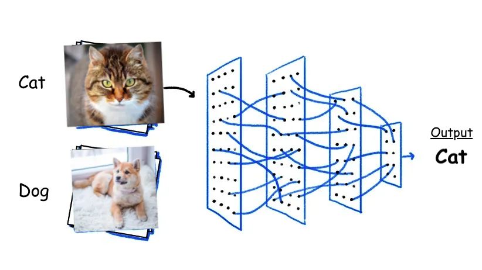
3.11. LeNet-5#
LeNet-5
Este es un ejemplo típico de la primera generación de CNNs y fue construido para reconocer dígitos de números (ver [LeCun et al., 1998]). Por razones históricas, comentemos un poco su arquitectura. La entrada de la red consiste en imágenes en escala de grises de tamaño 32 × 32 × 1. La red emplea dos capas de convolución. En la primera capa, el volumen de salida tiene un tamaño de 28 × 28 × 6, que tras la agrupación se convierte en 14 × 14 × 6.
Las dimensiones del volumen en la segunda capa eran 10 × 10 × 16 y, tras la agrupación, 5 × 5 × 16. La no linealidad utilizada entonces era de tipo
sigmoid. Nótese que laaltura y la anchura de los volúmenes disminuyen y la profundidad aumenta, como se ha señalado antes. El número de elementos del último volumen es igual a 400. Estos elementos se apilan en un vector y alimentan los correspondientes nodos de entrada de una red totalmente conectada.Esta última consta de dos capas ocultas con 120 nodos en la primera y 84 nodos en la segunda. Hay 10 nodos de salida, uno por dígito, que utilizan una no linealidad
softmax. El número total de parámetros implicados es del orden de 60.000.
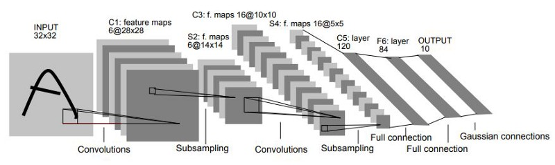
Fig. 3.19 Arquitectura LeNet-5. Fuente [LeCun et al., 1998].#
3.12. AlexNet#
AlexNet
Esta red también es histórica ya que, demostró que el punto crucial para hacer grandes redes es la disponibilidad de grandes conjuntos de entrenamiento [Krizhevsky et al., 2012]. El artículo relacionado es el que realmente hizo volver a las CNN y actuó como catalizador para su adopción mucho más allá de la tarea de reconocimiento de dígitos. La Alexnet es un desarrollo de la LeNet-5, pero es mucho más grande e implica aproximadamente 60 millones de parámetros.
Las entradas a la red son imágenes RGB de tamaño 227 × 227 × 3. Comprende cinco capas ocultas y el volumen final consta de 9216 elementos que alimentan una red totalmente conectada con dos capas ocultas de 4096 unidades cada una. La salida consta de 1000 nodos
softmax(uno por clase) para reconocer imágenes del conjunto de datos ImageNet para el reconocimiento de objetos.ReLUse ha utilizado como no linealidad en las capas ocultas.
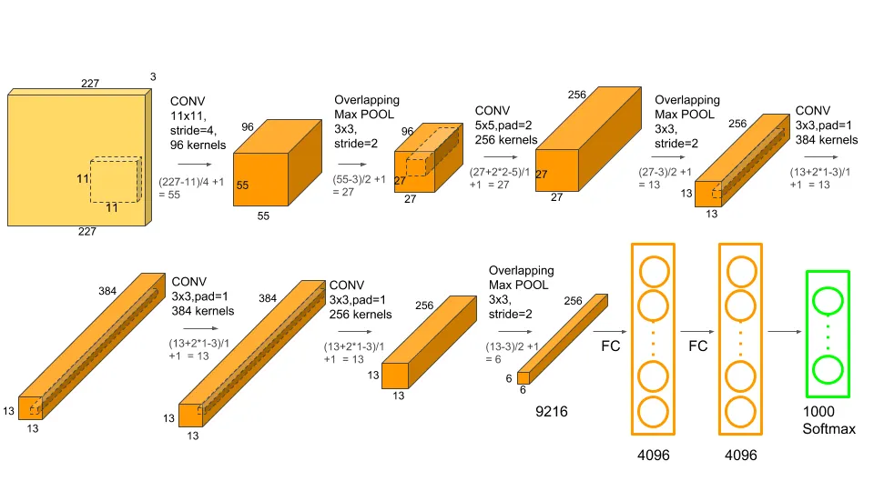
Fig. 3.20 Arquitectura LeNet-5. Fuente [Krizhevsky et al., 2012].#
3.13. VGG-16#
VGG-16
Esta red [Simonyan and Zisserman, 2014] es mucho mayor que AlexNet. Implica un total de aproximadamente 140 millones de parámetros. La principal característica de esta red es su regularidad. Involucra filtros 3 × 3 para realizar las mismas convoluciones utilizando padding y stride \(s = 1\) y ventanas 2 × 2 para maxpooling con stride \(s = 2\). Cada vez que se realiza un pooling, la altura y la anchura de los volúmenes se reducen a la mitad y la profundidad se multiplica por dos.
Partiendo de 224 × 224 × 3 imagen de entrada y después de 13 capas el volumen final tiene un tamaño de 7 × 7 × 512, un total de 25088 elementos, que tras su vectorización alimenta a una red totalmente conectada con 2 capas ocultas de 4096 nodos cada una. Los 1000 nodos de salida están construidos en torno a la no linealidad
softmaxy se ha utilizadoReLUpara las unidades ocultas en toda la red.

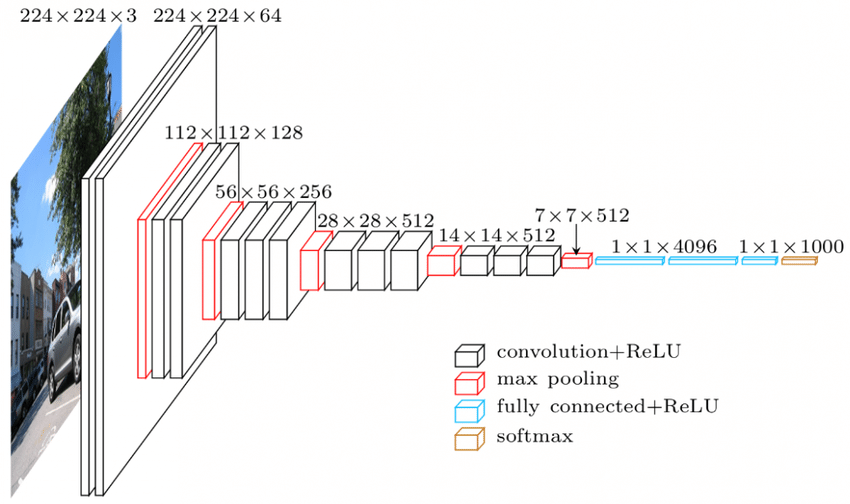
Fig. 3.21 Arquitectura VGG-16. Fuente [Simonyan and Zisserman, 2014].#
El diseño de
VGG-16se basó en la hipótesis de que aumentar la profundidad de una red convolucional, mientras se usan pequeños filtros, conduciría a un mejor rendimiento en la tarea de clasificación de imágenes. La naturaleza homogénea de la arquitectura con filtros 3x3 repetidos permitió que la red aprendiera características jerárquicas más profundas, conservando al mismo tiempo una buena eficiencia computacional.El uso de filtros pequeños y capas profundas fue una decisión clave porque:
Filtros más pequeños capturan características locales, pero apilados sucesivamente tienen un campo receptivo mayor.
Mayor profundidad permite extraer características más abstractas y complejas a medida que las capas avanzan.
Fundamento matemático: campo receptivo y apilamiento de filtros pequeños. El texto anterior afirma que filtros pequeños apilados tienen un campo receptivo mayor. El siguiente lema lo cuantifica.
Lemma 3.1 (Campo receptivo)
Consideremos \(L\) capas convolucionales sucesivas con filtros de lado \(m_1,\dots,m_L\) y strides \(s_1,\dots,s_L\). El lado del campo receptivo (en la entrada) de una unidad de la capa \(L\) es $\( r_L=1+\sum_{k=1}^{L}(m_k-1)\prod_{j=1}^{k-1}s_j . \)$
Proof. - Sea \(J_k=\prod_{j\le k}s_j\) la separación, en píxeles de entrada, entre dos unidades contiguas de la capa \(k\), con \(J_0=1\). Una unidad de la capa \(k\) combina \(m_k\) unidades contiguas de la capa \(k-1\), que abarcan \((m_k-1)J_{k-1}\) píxeles de entrada adicionales a los de una sola unidad. Por tanto \(r_k=r_{k-1}+(m_k-1)J_{k-1}\) con \(r_0=1\), y sumando se obtiene la fórmula. \(\qquad\blacksquare\)
Consecuencia numérica. Con stride 1 y filtros \(3\times3\), \(r_L=2L+1\). Tres capas \(3\times3\) ven la misma región que una capa \(7\times7\) (\(r=7\)). Si cada capa tiene \(C\) canales de entrada y de salida, sin contar sesgos, el apilamiento usa \(3\cdot(3\cdot3\cdot C^2)=27C^2\) parámetros frente a \(7\cdot7\cdot C^2=49C^2\). Para \(C=64\) son \(110{,}592\) frente a \(200{,}704\) parámetros, un ahorro cercano al \(45\%\), y además se intercalan dos no linealidades adicionales. Este es el argumento de diseño de [Simonyan and Zisserman, 2014].
¿Por qué profundidad y no solo ancho? El teorema de aproximación universal (Theorem 3.2) no distingue entre redes anchas y profundas. El siguiente resultado, en su versión exacta y elemental, muestra que la profundidad puede ahorrar neuronas de forma exponencial.
Theorem 3.4 (Beneficio de la profundidad)
Sea \(m(x)=2\,\mathrm{ReLU}(x)-4\,\mathrm{ReLU}\!\big(x-\tfrac12\big)\), que sobre \([0,1]\) es la función “tienda” (\(m(x)=2x\) si \(x\le\tfrac12\) y \(m(x)=2-2x\) si \(x\ge\tfrac12\)). Para todo \(k\ge1\):
La función \(m^{\circ k}\) (composición \(k\) veces) es calculada exactamente sobre \([0,1]\) por una red ReLU con \(k\) capas ocultas de ancho 2.
\(m^{\circ k}\) tiene \(2^k\) tramos lineales.
Toda red ReLU de una sola capa oculta que coincida con \(m^{\circ k}\) en \([0,1]\) necesita al menos \(2^k-1\) neuronas.
Proof. - Paso 0 (preparación: hechos que se usarán).
Definición de tramo lineal. Se dice que \(f:[0,1]\to\mathbb{R}\) tiene \(N\) tramos lineales si existen \(0=x_0<x_1<\cdots<x_N=1\) tales que \(f\) es afín en cada \([x_{j-1},x_j]\) y las pendientes de tramos consecutivos son distintas. Los puntos \(x_1,\dots,x_{N-1}\) se llaman puntos de quiebre y son exactamente los puntos interiores donde \(f\) no es afín en ningún entorno.
Justificación. Exigir pendientes distintas evita contar como dos tramos lo que es un solo segmento. Así el número de tramos queda bien definido y es igual al número de puntos de quiebre más uno.
Expresión de \(m\) por ramas. Para \(x\in[0,1]\), \(\mathrm{ReLU}(x)=x\) porque \(x\ge0\). Además \(\mathrm{ReLU}(x-\tfrac12)=0\) si \(x\le\tfrac12\) y \(x-\tfrac12\) si \(x\ge\tfrac12\). Entonces
\[\begin{split} \begin{aligned} x\le\tfrac12:&\quad m(x)=2x-4\cdot 0=2x,\\ x\ge\tfrac12:&\quad m(x)=2x-4\big(x-\tfrac12\big)=2-2x. \end{aligned} \end{split}\]Justificación. Es una sustitución directa. Confirma que \(m\) es la función “tienda” del enunciado, con \(m(0)=0\), \(m(\tfrac12)=1\) y \(m(1)=0\).
Imagen de \(m\). \(m([0,1])=[0,1]\). En \([0,\tfrac12]\), \(m\) es afín creciente de \(0\) a \(1\). En \([\tfrac12,1]\), \(m\) es afín decreciente de \(1\) a \(0\).
Justificación. Se sigue de la expresión por ramas y de los valores en los extremos. En particular \(m([0,1])\subset[0,1]\), de modo que \(m^{\circ k}\) está bien definida sobre \([0,1]\) para todo \(k\).
Paso 1 (prueba de (1): construcción de la red).
(1a) Una capa calcula \(m\). Sea \(y\in[0,1]\). Una capa oculta de ancho 2 con neuronas $\( h_1=\mathrm{ReLU}(y),\qquad h_2=\mathrm{ReLU}\big(y-\tfrac12\big) \)\( y combinación lineal de salida \)2h_1-4h_2\( produce exactamente \)m(y)$.
Justificación. Es la definición de \(m\) en el enunciado. Los pesos de entrada son \((1,\,1)\), los sesgos son \((0,\,-\tfrac12)\) y los pesos de salida son \((2,\,-4)\).
(1b) Apilar \(k\) capas. Sea \(y_0=x\in[0,1]\) y, para \(r=1,\dots,k\), sea \(y_r=m(y_{r-1})\). La capa oculta \(r\) tiene preactivaciones \(y_{r-1}\) y \(y_{r-1}-\tfrac12\). Pero \(y_{r-1}\) es una combinación afín de las dos activaciones de la capa \(r-1\), a saber \(y_{r-1}=2h^{(r-1)}_1-4h^{(r-1)}_2\). Por tanto las preactivaciones de la capa \(r\) son funciones afines de las activaciones de la capa \(r-1\), que es justo la forma que exige una red ReLU totalmente conectada.
Justificación. En una red ReLU, la entrada a cada neurona es una combinación afín de las salidas de la capa anterior. Aquí esa combinación es \(2h^{(r-1)}_1-4h^{(r-1)}_2\) (más el sesgo \(-\tfrac12\) en la segunda neurona), y no hace falta ninguna capa adicional para “formar” \(y_{r-1}\).
(1c) Valor exacto y buena definición. Por inducción sobre \(r\): \(y_r=m^{\circ r}(x)\). Para \(r=1\) es (1a). Si \(y_{r-1}=m^{\circ(r-1)}(x)\), entonces \(y_r=m(y_{r-1})=m^{\circ r}(x)\). Además, como \(m([0,1])\subset[0,1]\) (Paso 0), cada \(y_{r-1}\) cae en \([0,1]\), que es donde se verificó la identidad \(\mathrm{ReLU}(y)=y\) y la expresión de \(m\).
Justificación. El rango \([0,1]\) es invariante bajo \(m\), de modo que las hipótesis de (1a) se cumplen en cada capa. Fuera de \([0,1]\) la red no calcularía \(m^{\circ k}\), y por eso el enunciado se restringe a \([0,1]\).
(1d) Conteo. La última capa oculta (\(r=k\)) seguida de la combinación lineal de salida \(2h^{(k)}_1-4h^{(k)}_2=y_k\) da \(m^{\circ k}(x)\). Hay \(k\) capas ocultas, cada una de ancho 2.
Paso 2 (prueba de (2): estructura exacta de \(m^{\circ k}\)). Se prueba por inducción en \(k\) la siguiente afirmación más fuerte.
Afirmación \(Q(k)\). Sea \(I^{k}_j=\big[\tfrac{j-1}{2^k},\tfrac{j}{2^k}\big]\) para \(j=1,\dots,2^k\). En cada \(I^{k}_j\), \(m^{\circ k}\) es afín y aplica \(I^{k}_j\) sobre \([0,1]\) con pendiente \(+2^k\) si \(j\) es impar y \(-2^k\) si \(j\) es par. Es decir, crece de \(0\) a \(1\) si \(j\) es impar y decrece de \(1\) a \(0\) si \(j\) es par.
Justificación de la elección. Contar tramos no basta para la inducción: hace falta saber qué hace \(m^{\circ k}\) en cada tramo (su imagen y su sentido) para saber qué hace \(m\) después. Por eso se prueba esta afirmación más fuerte.
(2a) Caso base \(k=1\). \(I^1_1=[0,\tfrac12]\) y \(I^1_2=[\tfrac12,1]\). Por el Paso 0, \(m\) crece de \(0\) a \(1\) con pendiente \(2\) en el primero y decrece de \(1\) a \(0\) con pendiente \(-2\) en el segundo.
(2b) Paso inductivo. Supóngase \(Q(k)\) y escribamos \(m^{\circ(k+1)}=m\circ m^{\circ k}\). Fijado \(j\), sea \(\phi=m^{\circ k}|_{I^k_j}\), que es una biyección afín de \(I^k_j\) sobre \([0,1]\). Sean \(J^-\) y \(J^+\) las mitades izquierda y derecha de \(I^k_j\), que son \(I^{k+1}_{2j-1}\) e \(I^{k+1}_{2j}\), respectivamente.
Si \(j\) es impar, \(\phi\) es creciente, así que \(\phi(J^-)=[0,\tfrac12]\) y \(\phi(J^+)=[\tfrac12,1]\). Entonces:
\[\begin{split} \begin{aligned} \text{en } J^-:&\quad m\circ\phi \text{ es creciente de } m(0)=0 \text{ a } m(\tfrac12)=1,\ \text{con pendiente } 2\cdot 2^k=2^{k+1},\\ \text{en } J^+:&\quad m\circ\phi \text{ es decreciente de } m(\tfrac12)=1 \text{ a } m(1)=0,\ \text{con pendiente } -2\cdot 2^k=-2^{k+1}. \end{aligned} \end{split}\]Si \(j\) es par, \(\phi\) es decreciente, así que \(\phi(J^-)=[\tfrac12,1]\) (recorrido de \(1\) a \(\tfrac12\)) y \(\phi(J^+)=[0,\tfrac12]\) (recorrido de \(\tfrac12\) a \(0\)). Entonces:
\[\begin{split} \begin{aligned} \text{en } J^-:&\quad m\circ\phi \text{ va de } m(1)=0 \text{ a } m(\tfrac12)=1,\ \text{con pendiente } (-2)(-2^k)=+2^{k+1},\\ \text{en } J^+:&\quad m\circ\phi \text{ va de } m(\tfrac12)=1 \text{ a } m(0)=0,\ \text{con pendiente } (2)(-2^k)=-2^{k+1}. \end{aligned} \end{split}\]
Justificación. La composición de dos funciones afines es afín y sus pendientes se multiplican. En cada mitad, \(\phi\) cae dentro de una sola rama de \(m\) (por eso se partió \(I^k_j\) por su punto medio, cuya imagen bajo \(\phi\) es exactamente \(\tfrac12\)), de modo que \(m\circ\phi\) es afín. En ambos casos las dos mitades son, en orden, un tramo creciente de \(0\) a \(1\) y uno decreciente de \(1\) a \(0\). Como \(I^{k+1}_{2j-1}\) tiene índice impar e \(I^{k+1}_{2j}\) tiene índice par, esto es \(Q(k+1)\).
(2c) Conclusión del número de tramos. Por \(Q(k)\), \(m^{\circ k}\) es afín en cada uno de los \(2^k\) intervalos \(I^k_j\), y las pendientes de intervalos consecutivos son \(+2^k\) y \(-2^k\), que son distintas. Por tanto, \(m^{\circ k}\) tiene exactamente \(2^k\) tramos lineales, y sus puntos de quiebre son
\[ \frac{j}{2^k},\qquad j=1,\dots,2^k-1, \]es decir, \(2^k-1\) puntos de quiebre en \((0,1)\). Esto coincide con la recursión \(1\to2\to4\to\cdots\to2^k\) del enunciado.
Justificación. El criterio de pendientes distintas del Paso 0 asegura que cada uno de esos puntos es un quiebre genuino y no una división artificial de un segmento.
Paso 3 (prueba de (3): cota inferior para una capa oculta).
(3a) Forma de una red de una capa oculta. Una red ReLU con una capa oculta de \(N\) neuronas y salida escalar es
\[ f(x)=d+\sum_{i=1}^{N}c_i\,\mathrm{ReLU}(w_ix+b_i). \]Justificación. Es la definición de la arquitectura: una combinación afín de las \(N\) activaciones de la capa oculta, cada una con preactivación afín en la entrada \(x\in\mathbb{R}\).
(3b) Cada neurona aporta a lo sumo un punto de quiebre. Si \(w_i=0\), \(\mathrm{ReLU}(b_i)\) es constante y no tiene quiebre. Si \(w_i\ne0\), \(\mathrm{ReLU}(w_ix+b_i)\) es afín en cada lado del punto \(p_i=-b_i/w_i\) (vale \(0\) de un lado y \(w_ix+b_i\) del otro), y su único posible punto de no diferenciabilidad es \(p_i\).
Justificación. \(\mathrm{ReLU}(z)\) es afín en \(z<0\) y en \(z>0\), y solo cambia de expresión en \(z=0\). Aquí \(z=w_ix+b_i\) se anula en un único \(x\) cuando \(w_i\neq0\).
(3c) Dónde puede quebrarse \(f\). Sea \(P=\{p_i:\ w_i\neq0\}\), que tiene a lo sumo \(N\) elementos. Sobre cualquier intervalo abierto que no contenga puntos de \(P\), cada sumando es afín y, por tanto, \(f\) es afín. En consecuencia, todo punto de quiebre de \(f\) pertenece a \(P\).
Justificación. Una suma finita de funciones afines en un intervalo es afín. Esto da la cota \(\#\{\text{quiebres de } f\}\le|P|\le N\).
(3d) Comparación con \(m^{\circ k}\). Supóngase que \(f=m^{\circ k}\) en \([0,1]\). Sea \(x_0=j/2^k\) con \(1\le j\le 2^k-1\). Por el Paso 2, \(m^{\circ k}\) tiene pendientes distintas a ambos lados de \(x_0\), de modo que no es afín en ningún entorno de \(x_0\). Como \(f\) coincide con \(m^{\circ k}\) en un entorno de \(x_0\) (contenido en \([0,1]\), pues \(x_0\in(0,1)\)), tampoco \(f\) es afín en ningún entorno de \(x_0\). Por (3c), \(x_0\in P\).
Justificación. Aquí se usa que la igualdad se pide en \([0,1]\) y que los puntos \(x_0\) son interiores, de modo que existe un intervalo abierto alrededor de cada uno donde ambas funciones coinciden. Es un argumento por contrarrecíproco: si \(x_0\notin P\), \(f\) sería afín cerca de \(x_0\), lo cual contradice las pendientes distintas.
(3e) Conteo final. Los \(2^k-1\) puntos \(j/2^k\) son distintos y todos están en \(P\), luego
\[ N\ \ge\ |P|\ \ge\ 2^k-1 . \]Justificación. Equivale a la desigualdad \(N+1\ge 2^k\) del enunciado: una suma de \(N\) neuronas tiene a lo sumo \(N\) quiebres, es decir, a lo sumo \(N+1\) tramos, y \(m^{\circ k}\) exige \(2^k\) tramos.
Paso 4 (cierre). Los Pasos 1, 2 y 3 prueban, respectivamente, (1), (2) y (3). Por (1), la profundidad \(k\) con ancho 2 usa \(2k\) neuronas en total. Por (3), la misma función con una sola capa oculta exige al menos \(2^k-1\) neuronas. Así, la profundidad logra con \(O(k)\) neuronas lo que la anchura solo logra con un número exponencial en \(k\). \(\qquad\blacksquare\)
Cifras concretas. Para \(k=10\), la red profunda usa \(10\times2=20\) neuronas ReLU, mientras que cualquier red de una capa oculta necesita al menos \(2^{10}-1=1023\).
Alcance. El resultado no afirma que toda función se beneficie de la profundidad, sino que existen funciones para las que la separación es exponencial. Telgarsky [Telgarsky, 2016] extiende la separación a redes de profundidad intermedia y a error de aproximación, que es la versión relevante para clasificación.
3.14. GoogleNet y la red Inception#
GoogleNet y la red Inception
La arquitectura utilizada en esta red se desvía del “arquetípico” que se muestra en Fig. 3.17. En el corazón de esta red se encuentra el llamado módulo de inicio [Szegedy et al., 2015]. Un módulo de inicio consta de filtros de diferentes tamaños y profundidades, así como de una ruta de agrupación diferente.
La arquitectura
Inceptiontoma la salida de una capa y la divide en varias rutas: una usa convolución 1x1 para reducir la profundidad, otra hace pooling seguido de convolución 5x5, y dos rutas realizan convoluciones separadas con filtros 3x3 y 5x5. Se usa una capa de cuello de botella (convolución 1x1) para reducir la carga computacional antes de las convoluciones.En el módulo de inicio, se concatenan los volúmenes de salida de varias trayectorias, permitiendo que la red, durante el entrenamiento, elija las mejores operaciones para cada capa. A medida que se avanza hacia capas superiores, se incrementa la proporción de convoluciones 3 × 3 y 5 × 5, ya que captan rasgos más abstractos. La red tiene 22 capas y 6 millones de parámetros.
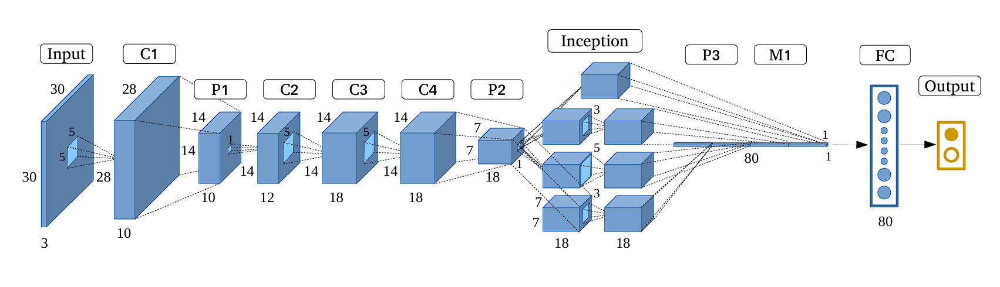

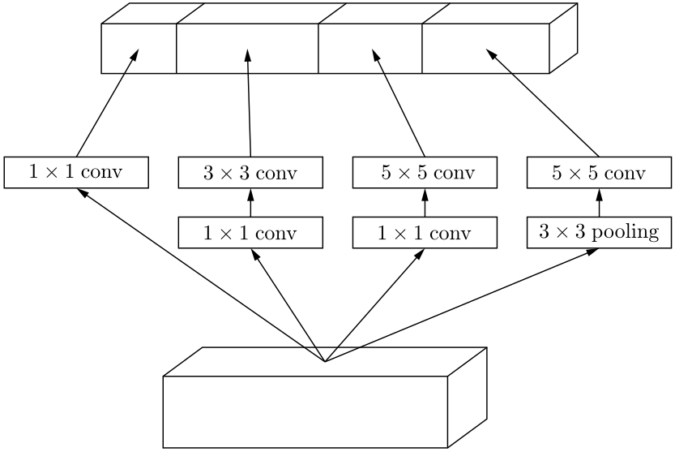
Fig. 3.23 Arquitectura Inception. Fuente [Szegedy et al., 2015].#
Por qué cada rama
\(1\times1\) conv (rama izquierda): captura correlaciones entre canales en cada posición, sin mirar vecinos.
\(3\times3\) y \(5\times5\) conv: capturan patrones locales de distinta escala. En una imagen, la información relevante puede ser un borde fino o una estructura más grande, y esto da campos receptivos distintos en la misma capa.
Pooling: aporta una rama sin parámetros que resume vecindades, y en la práctica mejoraba los resultados al incluirla.
Concatenación: las ramas deben producir mapas con el mismo tamaño espacial (por eso se usa padding), y se apilan en la dimensión de canales. Así la capa siguiente recibe características a varias escalas a la vez.
La motivación del módulo no proviene de una única observación, sino de la combinación de tres ideas: (i) los objetos aparecen a distintas escalas, por lo que conviene aplicar filtros de varios tamaños en paralelo en lugar de fijar uno; (ii) las convoluciones \(1\times1\), introducidas en Network in Network, combinan canales en cada posición y permiten reducir dimensión; y (iii) una aproximación densa a estructuras dispersas de conexión. La arquitectura final se refinó experimentalmente, y los propios autores señalan que su éxito no prueba por sí solo que esos principios sean la causa.
3.15. Redes residuales (ResNets)#
Redes residuales (ResNets)
Ya hemos hablado de las ventajas de diseñar redes profundas. También abordamos la forma de hacer frente al problema de los gradientes que se desvanecen/explotan mediante una combinación de métodos y trucos que permiten que el algoritmo backpropagation converja con suficiente rapidez. Sin embargo, una vez que empezamos a construir redes muy profundas (del orden de decenas o incluso centenares de capas) nos encontramos con el siguiente comportamiento “poco ortodoxo”.
Cabría esperar que, añadiendo más y más capas, el error de entrenamiento mejore o al menos no aumenta. Sin embargo, lo que se observa en la práctica es que
a partir de un cierto número de capas, el error de entrenamiento empieza a aumentar. Esto se ilustra gráficamente en la Fig. 3.24. Este fenómeno no tiene nada que ver con el sobreajuste. Después de todo, estamos hablando del error de entrenamiento y no del de generalización. Parece que esto puede deberse ala tarea de optimización que se vuelve más y más difícil a medida que se añaden más y más capas.

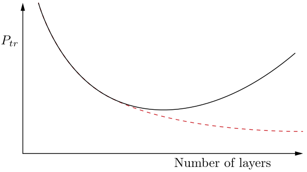
Fig. 3.24 Aumento en lugar de disminución del error cuando el número de capas supera cierto número, en una red muy profunda. (curva roja) como se esperaba a partir de la teoría.#
Interpretación Matemática de una Capa en la Red Neuronal
Cada capa de una red neuronal aplica una función \(H\) que transforma la salida anterior \(\boldsymbol{y}^{r-1}\) en una nueva salida \(\boldsymbol{y}^{r}\):
¿Por qué Añadir Más Capas No Debería Aumentar el Error de Entrenamiento?
Si una capa ha extraído toda la información útil, una capa adicional, en el peor caso, solo replicaría la salida anterior aplicando la función identidad:
\[ \boldsymbol{y}^{r} = H(\boldsymbol{y}^{r-1}) = \boldsymbol{y}^{r-1} \]Es decir, si no hay nada nuevo que aprender, la capa extra solo copiaría la información.
Problema de redes profundas: saturación y dificultades de optimización
En redes profundas, el rendimiento se estanca porque más capas no mejoran la precisión y la optimización enfrenta dificultades para aprender el mapeo de identidad \(H(y^{r-1}) = y^{r-1}\), generando errores por gradientes pequeños o desajustes en los pesos.
Solución propuesta por He et al. (2016): Redes Residuales (ResNets)
En lugar de aprender directamente \(H(y^{r-1})\), se propone un mapeo residual \(F(y^{r-1}) = H(y^{r-1}) - y^{r-1}\), donde la capa solo ajusta la diferencia necesaria en vez de replicar la entrada. Así, la salida se obtiene sumando este ajuste residual:
Observación
El objetivo real es que la salida de la función residual sea cero, \(F(y^{r-1}) = 0\), no que los pesos sean cero por sí mismos. Sin embargo, el mecanismo más simple para lograrlo es llevar los pesos \(W\) de esa rama hacia valores cercanos a cero: si \(W \approx 0\), la transformación lineal produce salidas cercanas a cero, y tras la no linealidad (por ejemplo ReLU) el resultado sigue siendo cero o muy pequeño.
En resumen:
Objetivo real: \(F(y^{r-1}) = 0\) (la salida del bloque residual).
Mecanismo para lograrlo: pesos \(W\) pequeños o nulos.
La ventaja pedagógica es que “pesos pequeños” es un punto de partida natural, cercano a la inicialización típica de una red y fácil de alcanzar por gradiente descendente, mientras que “pesos que reproducen exactamente la matriz identidad” es una configuración específica y difícil de encontrar mediante optimización.
El uso de la representación residual no es nuevo y ya se ha utilizado anteriormente en el contexto de la cuantificación vectorial. La esencia del aprendizaje residual es introducir el llamado bloque de construcción residual, que se muestra en la Fig. 3.25.
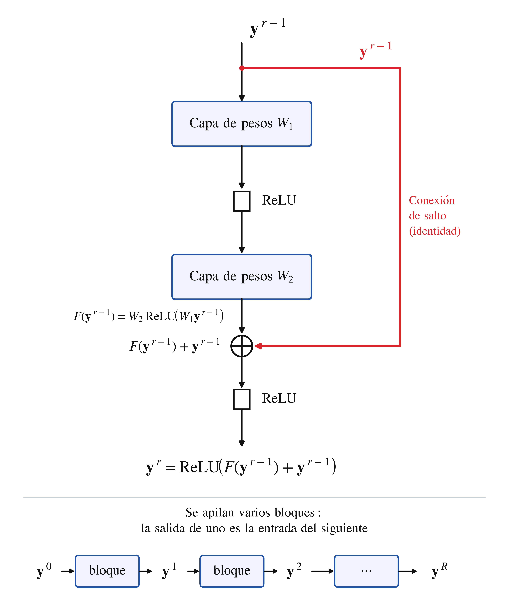
Fig. 3.25 Bloque residual. La rama principal calcula \(F(\boldsymbol{y}^{r-1})=W_2\,\mathrm{ReLU}(W_1\boldsymbol{y}^{r-1})\); la conexión de salto suma la entrada sin cambios, y la ReLU final produce \(\boldsymbol{y}^{r}\). La salida de cada bloque es la entrada del siguiente.#
De esta manera, un número de capas, digamos, dos, como en el caso de la Fig. 3.25, se apilan y dejamos que estas capas se ajusten explícitamente al mapeo residual, a través de las llamadas conexiones de atajo u omisión. Cada capa de pesos realiza una transformación sobre su entrada, por ejemplo, convoluciones. Si \(\boldsymbol{y}^{r}\) e \(\boldsymbol{y}^{r-1}\) son de dimensiones diferentes, el atajo de mapeo de identidad se modifica a \(W\boldsymbol{y}^{r-1}\), donde \(W\) es una matriz de dimensiones apropiadas.
3.16. U-Net: Redes Convolucionales para la Segmentación de Imágenes Biomédicas#

Fig. 3.26 Image segmentation vs Instance segmentation. Fuente v7labs#
En imágenes médicas, la segmentación semántica clasifica cada píxel según una categoría anatómica o patológica, mientras que la segmentación de instancias diferencia objetos individuales dentro de la misma clase. Estas técnicas son esenciales para el diagnóstico automatizado y la planificación clínica.
La arquitectura U-Net, diseñada para segmentación biomédica, permite una segmentación precisa mediante un diseño en forma de U que combina información de contexto con detalles espaciales, mejorando la detección de estructuras complejas en imágenes médicas.
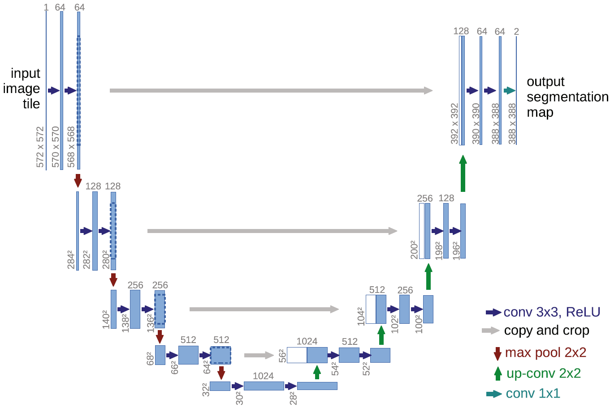
Fig. 3.27 La arquitectura U-Net representa mapas de características con cajas, indicando canales y tamaño, mientras que las flechas señalan las operaciones.#
Arquitectura U-Net
La arquitectura U-Net es una red neuronal convolucional diseñada para la segmentación de imágenes biomédicas. Se basa en una estructura de encoder-decoder con una forma en “U”.
Encoder (contracción): Extrae características mediante convoluciones y capas de pooling para reducir la dimensionalidad.
Bottleneck: Conecta el encoder con el decoder, capturando la información más relevante.
Decoder (expansión): Usa convoluciones transpuestas para recuperar la resolución original de la imagen y refinar la segmentación.
Skip connections: Conectan capas del encoder con el decoder, permitiendo una mejor preservación de detalles.
Esta arquitectura es eficiente con pocos datos y logra segmentaciones precisas, lo que la hace ideal para aplicaciones médicas. Considera
conv 3x3, max pool 2x2, up-conv 2x2, conv 1x1, padding = 0, stride = 1fijos. En elencoderse reduce alto y ancho de los mapeos de caracteristicas mientras que se aumenta la profundidad. Lo contrario ocurre en eldecoder.Al final se aplican 2 convoluciones de
1x1x64(tubos) como las vistas en secciones anteriores, para obtener el último kernel de388x388x2en el que, cada canal representaria una clase diferente a segmentar, y despues de aplicar funciones de activación, lo que resulta en el mapeo de características es, la probabilidad de que un pixel en una respectiva posición pertenezca a la clase representada por cada canal, por ejemplo a la clase (black) o la clase (blue) (clasificación binaria).
La arquitectura U-Net aprende a segmentar imágenes asignando cada píxel a una clase específica.
Entrada (X): Imagen original (ej. un gato en fondo blanco).
Salida esperada (Y): Máscara binaria (1 = gato, 0 = fondo).
El modelo ajusta sus parámetros hasta que pueda predecir correctamente la máscara a partir de una nueva imagen.
U-Net: qué mapea cada bloque y cómo se mantiene la correspondencia de píxeles
Notación. Un mapa de características es un tensor \(\mathbb{R}^{H\times W\times C}\). Las convoluciones \(3\times3\) de esta U-Net son sin relleno (valid) y cada una quita \(2\) píxeles por dimensión.
Contracción (izquierda). Dos conv \(3\times3\) + ReLU y max pooling \(2\times2\). Las conv duplican los canales y restan \(4\) píxeles; el pooling divide el tamaño por \(2\). Se gana contexto y se pierde localización:
Expansión (derecha). Up-conv \(2\times2\) (duplica el tamaño y reduce los canales a la mitad), concatenación con la contracción (copy and crop, aporta localización) y dos conv \(3\times3\) + ReLU:
Concatenación. Se hace a lo largo de los canales: exige el mismo alto y ancho, pero los canales pueden diferir. Como el mapa de la contracción es más grande, se recorta su centro. Por ejemplo, en el nivel 3 se pasa de \(136^2\) a \(104^2\) (se quitan \(16\) píxeles por lado) y \(256+256=512\) canales.
Nivel |
Contracción (se copia) |
Expansión (tras up-conv) |
Tras concatenar |
|---|---|---|---|
1 |
\(568^2\times64\to\) recorte \(392^2\) |
\(392^2\times64\) |
\(392^2\times128\) |
2 |
\(280^2\times128\to\) recorte \(200^2\) |
\(200^2\times128\) |
\(200^2\times256\) |
3 |
\(136^2\times256\to\) recorte \(104^2\) |
\(104^2\times256\) |
\(104^2\times512\) |
4 |
\(64^2\times512\to\) recorte \(56^2\) |
\(56^2\times512\) |
\(56^2\times1024\) |
Correspondencia de píxeles. Por las valid convolutions y el max pooling, la salida es más pequeña que la entrada (en la figura, \(388^2\) frente a \(572^2\)), aunque las up-convolutions recuperen resolución. Opciones para mantener la correspondencia:
Same padding: conserva el tamaño sin postprocesamiento (la entrada debe ser divisible por \(2^{\text{niveles}}\)), pero introduce valores artificiales en los bordes.
Superposición de parches: divide la imagen en fragmentos solapados y reconstruye la segmentación completa; útil en imágenes grandes (por ejemplo, médicas). El artículo original completa los bordes reflejando la imagen.
Interpolación o recorte: ajusta el tamaño de salida con valid convolutions, con posibles imprecisiones.
Recomendación. Usa same padding para conservar el tamaño; en imágenes grandes, superposición de parches; y si la red ya fue entrenada con valid convolutions, interpolación como ajuste final.
import tensorflow as tf
from tensorflow.keras import layers
def recortar_y_concatenar(enc, dec):
# enc: (B, H1, W1, C1) de la contracción; dec: (B, H2, W2, C2), con H2 <= H1, W2 <= W1
dh = (enc.shape[1] - dec.shape[1]) // 2
dw = (enc.shape[2] - dec.shape[2]) // 2
enc = layers.Cropping2D(((dh, dh), (dw, dw)))(enc) # recorta el centro
return layers.Concatenate(axis=-1)([enc, dec]) # axis=-1: canales
3.17. Aplicación: Reconocimiento facial de emociones#
Los datos para el siguiente ejemplo pueden ser descargados del siguiente link: Face Sentiment Detection
import warnings
warnings.filterwarnings('ignore')
import tensorflow as tf
print("TensorFlow version:", tf.__version__)
devices = tf.config.list_physical_devices()
print("Available devices:")
for device in devices:
print(device)
gpus = tf.config.list_physical_devices('GPU')
if gpus:
print("TensorFlow is using GPU.")
for gpu in gpus:
gpu_details = tf.config.experimental.get_device_details(gpu)
print(f"GPU details: {gpu_details}")
else:
print("TensorFlow is not using GPU.")
2026-11-13 08:54:55.328754: I tensorflow/core/util/port.cc:153] oneDNN custom operations are on. You may see slightly different numerical results due to floating-point round-off errors from different computation orders. To turn them off, set the environment variable `TF_ENABLE_ONEDNN_OPTS=0`.
2026-11-13 08:54:55.660424: I tensorflow/core/platform/cpu_feature_guard.cc:210] This TensorFlow binary is optimized to use available CPU instructions in performance-critical operations.
To enable the following instructions: AVX_VNNI, in other operations, rebuild TensorFlow with the appropriate compiler flags.
2026-11-13 08:54:57.787775: I tensorflow/core/util/port.cc:153] oneDNN custom operations are on. You may see slightly different numerical results due to floating-point round-off errors from different computation orders. To turn them off, set the environment variable `TF_ENABLE_ONEDNN_OPTS=0`.
TensorFlow version: 2.20.0-dev0+selfbuilt
Available devices:
PhysicalDevice(name='/physical_device:CPU:0', device_type='CPU')
PhysicalDevice(name='/physical_device:GPU:0', device_type='GPU')
TensorFlow is using GPU.
GPU details: {'compute_capability': (12, 0), 'device_name': 'NVIDIA GeForce RTX 5050 Laptop GPU'}
import os
import datetime
import numpy as np
import pandas as pd
import matplotlib.pyplot as plt
import tensorflow as tf
from tensorflow.keras.preprocessing.image import ImageDataGenerator
from tensorflow.keras.utils import load_img, plot_model
from tensorflow.keras.layers import (
Conv2D, Dense, BatchNormalization, Activation, Dropout,
MaxPooling2D, Flatten, GlobalAveragePooling2D
)
from tensorflow.keras.regularizers import l2
from tensorflow.keras.optimizers import Adam, RMSprop, SGD
from tensorflow.keras.metrics import AUC
from tensorflow.keras.callbacks import EarlyStopping, ReduceLROnPlateau
from keras.layers import (
Conv2D, Dense, BatchNormalization, Activation, Dropout,
MaxPool2D, Flatten, MaxPooling2D, GlobalAveragePooling2D
)
from keras.callbacks import ModelCheckpoint, EarlyStopping
from keras import regularizers
# Importa os para listar carpetas y archivos
import os
# Ruta base del dataset, accedida desde WSL a través del montaje de Windows
base_dir = '/mnt/c/GitHub/Data/face_sentiment_detection'
# Ruta de la carpeta de entrenamiento
train_dir = os.path.join(base_dir, 'train')
# Ruta de la carpeta de prueba
test_dir = os.path.join(base_dir, 'test')
# Recorre cada carpeta de emoción en train
for emocion in sorted(os.listdir(train_dir)):
# Cuenta cuántas imágenes hay en esa emoción
n = len(os.listdir(os.path.join(train_dir, emocion)))
# Imprime el nombre de la emoción y su cantidad de imágenes
print(emocion, n)
angry 3995
disgust 436
fear 4097
happy 7215
neutral 4965
sad 4830
surprise 3171
# Importa os para listar carpetas y archivos
import os
# Ruta base del dataset en el montaje de Windows
base_dir = '/mnt/c/GitHub/Data/face_sentiment_detection'
# Recorre los dos subconjuntos del dataset
for subset in ['train', 'test']:
# Construye la ruta del subconjunto actual
subset_dir = os.path.join(base_dir, subset)
# Inicializa el acumulador del total de imágenes
total = 0
# Recorre cada carpeta de emoción en orden alfabético
for emocion in sorted(os.listdir(subset_dir)):
# Cuenta las imágenes de esa emoción
n = len(os.listdir(os.path.join(subset_dir, emocion)))
# Suma al total del subconjunto
total += n
# Imprime la emoción y su cantidad
print(subset, emocion, n)
# Imprime el total del subconjunto
print(subset, 'TOTAL', total)
train angry 3995
train disgust 436
train fear 4097
train happy 7215
train neutral 4965
train sad 4830
train surprise 3171
train TOTAL 28709
test angry 958
test disgust 111
test fear 1024
test happy 1774
test neutral 1233
test sad 1247
test surprise 831
test TOTAL 7178
train_dir = '/mnt/c/GitHub/Data/face_sentiment_detection/train/'
test_dir = '/mnt/c/GitHub/Data/face_sentiment_detection/test/'
def count_exp(path, set_):
dict_ = {}
for expression in os.listdir(path):
dir_ = path + expression
dict_[expression] = len(os.listdir(dir_))
df = pd.DataFrame(dict_, index=[set_])
return df
train_count = count_exp(train_dir, 'train')
test_count = count_exp(test_dir, 'test')
train_count.transpose().plot(kind='bar');
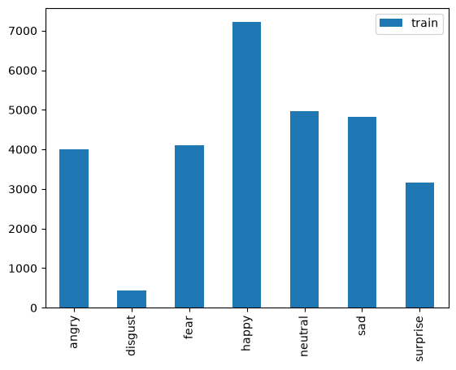
test_count.transpose().plot(kind='bar');
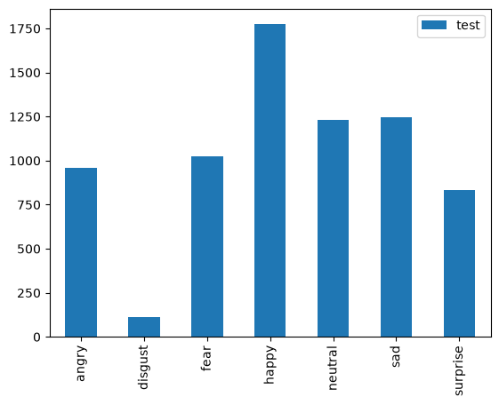
plt.figure(figsize=(14,22))
i = 1
for expression in os.listdir(train_dir):
img = load_img((train_dir + expression +'/'+ os.listdir(train_dir + expression)[5]))
plt.subplot(1,7,i)
plt.imshow(img)
plt.title(expression)
plt.axis('off')
i += 1
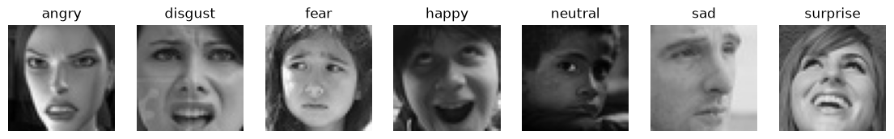
Creamos los conjuntos de datos de entrenamiento, prueba y validación
train_datagen = ImageDataGenerator(rescale=1.0/255.0,
horizontal_flip=True,
validation_split=0.2)
rescale=1./255: Normaliza las imágenes escalando los valores de los píxeles de un rango de [0, 255] a [0, 1]. Esto es una práctica común para mejorar la eficiencia del entrenamiento de redes neuronales.horizontal_flip=True: Permite aplicar una transformación de “flip” horizontal (volteo) de manera aleatoria a las imágenes, una técnica de data augmentation para hacer que el modelo generalice mejor.validation_split=0.2: Define una división de los datos, reservando el 20% de ellos para validación, lo que significa que el 80% de los datos será usado para entrenamiento.
training_set = train_datagen.flow_from_directory(train_dir,
batch_size=64,
target_size=(48,48),
shuffle=True,
color_mode='grayscale',
class_mode='categorical',
subset='training')
Found 22968 images belonging to 7 classes.
train_dir: Es la ruta del directorio que contiene las imágenes de entrenamiento organizadas en subdirectorios según la clase.batch_size=64: Carga 64 imágenes a la vez (en lotes) para ser procesadas en cada paso del entrenamiento.target_size=(48,48): Redimensiona todas las imágenes al tamaño de 48x48 píxeles. Esto es útil para mantener un tamaño uniforme de las imágenes que ingresan al modelo.shuffle=True: Aleatoriza las imágenes en cada epoch, lo que evita que el modelo se adapte a un orden particular de los datos.color_mode='grayscale': Convierte las imágenes en escala de grises (1 canal en lugar de 3 para imágenes en color RGB).class_mode='categorical': Las etiquetas se asignan como categóricas, es decir, cada imagen pertenece a una clase específica (por ejemplo, clasificación multiclase).subset='training': Utiliza el 80% de los datos (definidos anteriormente convalidation_split=0.2) para entrenamiento.
validation_set = train_datagen.flow_from_directory(train_dir,
batch_size=64,
target_size=(48,48),
shuffle=True,
color_mode='grayscale',
class_mode='categorical',
subset='validation')
Found 5741 images belonging to 7 classes.
subset='validation': Selecciona el 20% de los datos reservados para la validación (definidos anteriormente convalidation_split=0.2)
test_datagen = ImageDataGenerator(rescale=1.0/255.0,
horizontal_flip=True)
test_set = test_datagen.flow_from_directory(test_dir,
batch_size=64,
target_size=(48,48),
shuffle=True,
color_mode='grayscale',
class_mode='categorical')
Found 7178 images belonging to 7 classes.
training_set.class_indices
{'angry': 0,
'disgust': 1,
'fear': 2,
'happy': 3,
'neutral': 4,
'sad': 5,
'surprise': 6}
Arquitectura del modelo. En este caso,
padding='same'indica que se realiza padding para que la salida tiene el mismo tamaño que la entrada.
weight_decay = 1e-4
num_classes = 7
# Arquitectura
model = tf.keras.models.Sequential([
# Bloque 1: kernels 3x3, extracción local fina
Conv2D(32, (3,3), padding='same', kernel_regularizer=l2(weight_decay),
input_shape=(48,48,1)),
BatchNormalization(),
Activation('elu'),
Conv2D(32, (3,3), padding='same', kernel_regularizer=l2(weight_decay)),
BatchNormalization(),
Activation('elu'),
MaxPooling2D((2,2)),
Dropout(0.3),
# Bloque 2
Conv2D(64, (3,3), padding='same', kernel_regularizer=l2(weight_decay)),
BatchNormalization(),
Activation('elu'),
Conv2D(64, (3,3), padding='same', kernel_regularizer=l2(weight_decay)),
BatchNormalization(),
Activation('elu'),
MaxPooling2D((2,2)),
Dropout(0.4),
# Bloque 3
Conv2D(128, (3,3), padding='same', kernel_regularizer=l2(weight_decay)),
BatchNormalization(),
Activation('elu'),
Conv2D(128, (3,3), padding='same', kernel_regularizer=l2(weight_decay)),
BatchNormalization(),
Activation('elu'),
MaxPooling2D((2,2)),
Dropout(0.5),
# Clasificador — GlobalAveragePooling reduce parámetros vs Flatten
GlobalAveragePooling2D(),
Dense(256, kernel_regularizer=l2(weight_decay)),
BatchNormalization(),
Activation('elu'),
Dropout(0.5),
Dense(num_classes, activation='softmax')
])
model.compile(
loss='categorical_crossentropy',
optimizer=Adam(learning_rate=1e-3),
metrics=[AUC(name='auc')]
)
WARNING: All log messages before absl::InitializeLog() is called are written to STDERR
I0000 00:00:1794578738.247954 14594 gpu_device.cc:2019] Created device /job:localhost/replica:0/task:0/device:GPU:0 with 5262 MB memory: -> device: 0, name: NVIDIA GeForce RTX 5050 Laptop GPU, pci bus id: 0000:01:00.0, compute capability: 12.0
model.summary()
Model: "sequential"
┏━━━━━━━━━━━━━━━━━━━━━━━━━━━━━━━━━┳━━━━━━━━━━━━━━━━━━━━━━━━┳━━━━━━━━━━━━━━━┓ ┃ Layer (type) ┃ Output Shape ┃ Param # ┃ ┡━━━━━━━━━━━━━━━━━━━━━━━━━━━━━━━━━╇━━━━━━━━━━━━━━━━━━━━━━━━╇━━━━━━━━━━━━━━━┩ │ conv2d (Conv2D) │ (None, 48, 48, 32) │ 320 │ ├─────────────────────────────────┼────────────────────────┼───────────────┤ │ batch_normalization │ (None, 48, 48, 32) │ 128 │ │ (BatchNormalization) │ │ │ ├─────────────────────────────────┼────────────────────────┼───────────────┤ │ activation (Activation) │ (None, 48, 48, 32) │ 0 │ ├─────────────────────────────────┼────────────────────────┼───────────────┤ │ conv2d_1 (Conv2D) │ (None, 48, 48, 32) │ 9,248 │ ├─────────────────────────────────┼────────────────────────┼───────────────┤ │ batch_normalization_1 │ (None, 48, 48, 32) │ 128 │ │ (BatchNormalization) │ │ │ ├─────────────────────────────────┼────────────────────────┼───────────────┤ │ activation_1 (Activation) │ (None, 48, 48, 32) │ 0 │ ├─────────────────────────────────┼────────────────────────┼───────────────┤ │ max_pooling2d (MaxPooling2D) │ (None, 24, 24, 32) │ 0 │ ├─────────────────────────────────┼────────────────────────┼───────────────┤ │ dropout (Dropout) │ (None, 24, 24, 32) │ 0 │ ├─────────────────────────────────┼────────────────────────┼───────────────┤ │ conv2d_2 (Conv2D) │ (None, 24, 24, 64) │ 18,496 │ ├─────────────────────────────────┼────────────────────────┼───────────────┤ │ batch_normalization_2 │ (None, 24, 24, 64) │ 256 │ │ (BatchNormalization) │ │ │ ├─────────────────────────────────┼────────────────────────┼───────────────┤ │ activation_2 (Activation) │ (None, 24, 24, 64) │ 0 │ ├─────────────────────────────────┼────────────────────────┼───────────────┤ │ conv2d_3 (Conv2D) │ (None, 24, 24, 64) │ 36,928 │ ├─────────────────────────────────┼────────────────────────┼───────────────┤ │ batch_normalization_3 │ (None, 24, 24, 64) │ 256 │ │ (BatchNormalization) │ │ │ ├─────────────────────────────────┼────────────────────────┼───────────────┤ │ activation_3 (Activation) │ (None, 24, 24, 64) │ 0 │ ├─────────────────────────────────┼────────────────────────┼───────────────┤ │ max_pooling2d_1 (MaxPooling2D) │ (None, 12, 12, 64) │ 0 │ ├─────────────────────────────────┼────────────────────────┼───────────────┤ │ dropout_1 (Dropout) │ (None, 12, 12, 64) │ 0 │ ├─────────────────────────────────┼────────────────────────┼───────────────┤ │ conv2d_4 (Conv2D) │ (None, 12, 12, 128) │ 73,856 │ ├─────────────────────────────────┼────────────────────────┼───────────────┤ │ batch_normalization_4 │ (None, 12, 12, 128) │ 512 │ │ (BatchNormalization) │ │ │ ├─────────────────────────────────┼────────────────────────┼───────────────┤ │ activation_4 (Activation) │ (None, 12, 12, 128) │ 0 │ ├─────────────────────────────────┼────────────────────────┼───────────────┤ │ conv2d_5 (Conv2D) │ (None, 12, 12, 128) │ 147,584 │ ├─────────────────────────────────┼────────────────────────┼───────────────┤ │ batch_normalization_5 │ (None, 12, 12, 128) │ 512 │ │ (BatchNormalization) │ │ │ ├─────────────────────────────────┼────────────────────────┼───────────────┤ │ activation_5 (Activation) │ (None, 12, 12, 128) │ 0 │ ├─────────────────────────────────┼────────────────────────┼───────────────┤ │ max_pooling2d_2 (MaxPooling2D) │ (None, 6, 6, 128) │ 0 │ ├─────────────────────────────────┼────────────────────────┼───────────────┤ │ dropout_2 (Dropout) │ (None, 6, 6, 128) │ 0 │ ├─────────────────────────────────┼────────────────────────┼───────────────┤ │ global_average_pooling2d │ (None, 128) │ 0 │ │ (GlobalAveragePooling2D) │ │ │ ├─────────────────────────────────┼────────────────────────┼───────────────┤ │ dense (Dense) │ (None, 256) │ 33,024 │ ├─────────────────────────────────┼────────────────────────┼───────────────┤ │ batch_normalization_6 │ (None, 256) │ 1,024 │ │ (BatchNormalization) │ │ │ ├─────────────────────────────────┼────────────────────────┼───────────────┤ │ activation_6 (Activation) │ (None, 256) │ 0 │ ├─────────────────────────────────┼────────────────────────┼───────────────┤ │ dropout_3 (Dropout) │ (None, 256) │ 0 │ ├─────────────────────────────────┼────────────────────────┼───────────────┤ │ dense_1 (Dense) │ (None, 7) │ 1,799 │ └─────────────────────────────────┴────────────────────────┴───────────────┘
Total params: 324,071 (1.24 MB)
Trainable params: 322,663 (1.23 MB)
Non-trainable params: 1,408 (5.50 KB)
plot_model(model, to_file='model_cnn.png', show_shapes=True, show_layer_names=True)
You must install pydot (`pip install pydot`) for `plot_model` to work.
epochs = 200
checkpointer = [
EarlyStopping(
monitor='val_auc',
verbose=1,
restore_best_weights=True,
mode='max',
patience=50
),
ModelCheckpoint(
filepath='model.weights.best.keras',
monitor='val_auc',
verbose=1,
save_best_only=True,
mode='max'
)
]
import os
from joblib import dump, load
history_cnn = None
if os.path.exists('history_cnn.joblib'):
history_cnn = load('history_cnn.joblib')
print("El archivo 'history_cnn.joblib' ya existe. Se ha cargado el historial del entrenamiento.")
else:
history_cnn = model.fit(x = training_set,
epochs = epochs, callbacks=checkpointer,
validation_data = validation_set,
verbose = 2)
dump(history_cnn.history, 'history_cnn.joblib')
print("El entrenamiento se ha completado y el historial ha sido guardado en 'history_cnn.joblib'.")
Epoch 1/200
2026-05-08 23:46:57.073819: I external/local_xla/xla/stream_executor/cuda/cuda_asm_compiler.cc:393] ptxas warning : Registers are spilled to local memory in function 'gemm_fusion_dot_4560', 452 bytes spill stores, 452 bytes spill loads
2026-05-08 23:46:57.140400: I external/local_xla/xla/stream_executor/cuda/cuda_asm_compiler.cc:393] ptxas warning : Registers are spilled to local memory in function 'gemm_fusion_dot_4560', 492 bytes spill stores, 492 bytes spill loads
2026-05-08 23:47:04.226936: I external/local_xla/xla/stream_executor/cuda/cuda_asm_compiler.cc:393] ptxas warning : Registers are spilled to local memory in function 'gemm_fusion_dot_4578', 4 bytes spill stores, 4 bytes spill loads
2026-05-08 23:47:04.627090: I external/local_xla/xla/stream_executor/cuda/cuda_asm_compiler.cc:393] ptxas warning : Registers are spilled to local memory in function 'gemm_fusion_dot_4560', 452 bytes spill stores, 452 bytes spill loads
2026-05-08 23:47:04.646176: I external/local_xla/xla/stream_executor/cuda/cuda_asm_compiler.cc:393] ptxas warning : Registers are spilled to local memory in function 'gemm_fusion_dot_4560', 436 bytes spill stores, 436 bytes spill loads
2026-05-08 23:47:09.750758: I external/local_xla/xla/stream_executor/cuda/cuda_asm_compiler.cc:393] ptxas warning : Registers are spilled to local memory in function 'gemm_fusion_dot_325', 8 bytes spill stores, 8 bytes spill loads
Epoch 1: val_auc improved from -inf to 0.67825, saving model to model.weights.best.keras
359/359 - 17s - 48ms/step - auc: 0.6289 - loss: 2.1100 - val_auc: 0.6783 - val_loss: 1.8584
Epoch 2/200
Epoch 2: val_auc improved from 0.67825 to 0.73554, saving model to model.weights.best.keras
359/359 - 3s - 9ms/step - auc: 0.7298 - loss: 1.7684 - val_auc: 0.7355 - val_loss: 1.8828
Epoch 3/200
Epoch 3: val_auc improved from 0.73554 to 0.78362, saving model to model.weights.best.keras
359/359 - 3s - 10ms/step - auc: 0.7810 - loss: 1.6103 - val_auc: 0.7836 - val_loss: 1.6034
Epoch 4/200
Epoch 4: val_auc improved from 0.78362 to 0.81577, saving model to model.weights.best.keras
359/359 - 4s - 10ms/step - auc: 0.8096 - loss: 1.5199 - val_auc: 0.8158 - val_loss: 1.5023
Epoch 5/200
Epoch 5: val_auc improved from 0.81577 to 0.82983, saving model to model.weights.best.keras
359/359 - 3s - 10ms/step - auc: 0.8241 - loss: 1.4727 - val_auc: 0.8298 - val_loss: 1.4517
Epoch 6/200
Epoch 6: val_auc did not improve from 0.82983
359/359 - 3s - 10ms/step - auc: 0.8339 - loss: 1.4391 - val_auc: 0.8274 - val_loss: 1.4661
Epoch 7/200
Epoch 7: val_auc improved from 0.82983 to 0.83052, saving model to model.weights.best.keras
359/359 - 3s - 10ms/step - auc: 0.8398 - loss: 1.4195 - val_auc: 0.8305 - val_loss: 1.4796
Epoch 8/200
Epoch 8: val_auc improved from 0.83052 to 0.83817, saving model to model.weights.best.keras
359/359 - 3s - 9ms/step - auc: 0.8477 - loss: 1.3919 - val_auc: 0.8382 - val_loss: 1.4406
Epoch 9/200
Epoch 9: val_auc improved from 0.83817 to 0.83835, saving model to model.weights.best.keras
359/359 - 3s - 10ms/step - auc: 0.8527 - loss: 1.3732 - val_auc: 0.8383 - val_loss: 1.4370
Epoch 10/200
Epoch 10: val_auc improved from 0.83835 to 0.86255, saving model to model.weights.best.keras
359/359 - 4s - 10ms/step - auc: 0.8597 - loss: 1.3485 - val_auc: 0.8625 - val_loss: 1.3350
Epoch 11/200
Epoch 11: val_auc improved from 0.86255 to 0.86344, saving model to model.weights.best.keras
359/359 - 3s - 9ms/step - auc: 0.8635 - loss: 1.3348 - val_auc: 0.8634 - val_loss: 1.3520
Epoch 12/200
Epoch 12: val_auc improved from 0.86344 to 0.87217, saving model to model.weights.best.keras
359/359 - 3s - 9ms/step - auc: 0.8665 - loss: 1.3221 - val_auc: 0.8722 - val_loss: 1.3010
Epoch 13/200
Epoch 13: val_auc improved from 0.87217 to 0.88287, saving model to model.weights.best.keras
359/359 - 3s - 9ms/step - auc: 0.8707 - loss: 1.3080 - val_auc: 0.8829 - val_loss: 1.2522
Epoch 14/200
Epoch 14: val_auc did not improve from 0.88287
359/359 - 3s - 9ms/step - auc: 0.8745 - loss: 1.2936 - val_auc: 0.8775 - val_loss: 1.2840
Epoch 15/200
Epoch 15: val_auc did not improve from 0.88287
359/359 - 3s - 9ms/step - auc: 0.8777 - loss: 1.2809 - val_auc: 0.8800 - val_loss: 1.2714
Epoch 16/200
Epoch 16: val_auc did not improve from 0.88287
359/359 - 3s - 9ms/step - auc: 0.8784 - loss: 1.2792 - val_auc: 0.8620 - val_loss: 1.3548
Epoch 17/200
Epoch 17: val_auc did not improve from 0.88287
359/359 - 3s - 9ms/step - auc: 0.8817 - loss: 1.2662 - val_auc: 0.8771 - val_loss: 1.2872
Epoch 18/200
Epoch 18: val_auc did not improve from 0.88287
359/359 - 3s - 8ms/step - auc: 0.8833 - loss: 1.2598 - val_auc: 0.8794 - val_loss: 1.2798
Epoch 19/200
Epoch 19: val_auc did not improve from 0.88287
359/359 - 3s - 9ms/step - auc: 0.8858 - loss: 1.2496 - val_auc: 0.8823 - val_loss: 1.2766
Epoch 20/200
Epoch 20: val_auc improved from 0.88287 to 0.88933, saving model to model.weights.best.keras
359/359 - 3s - 9ms/step - auc: 0.8874 - loss: 1.2438 - val_auc: 0.8893 - val_loss: 1.2357
Epoch 21/200
Epoch 21: val_auc did not improve from 0.88933
359/359 - 3s - 9ms/step - auc: 0.8900 - loss: 1.2326 - val_auc: 0.8854 - val_loss: 1.2646
Epoch 22/200
Epoch 22: val_auc did not improve from 0.88933
359/359 - 3s - 9ms/step - auc: 0.8918 - loss: 1.2256 - val_auc: 0.8688 - val_loss: 1.3632
Epoch 23/200
Epoch 23: val_auc did not improve from 0.88933
359/359 - 3s - 8ms/step - auc: 0.8931 - loss: 1.2218 - val_auc: 0.8857 - val_loss: 1.2591
Epoch 24/200
Epoch 24: val_auc did not improve from 0.88933
359/359 - 3s - 8ms/step - auc: 0.8942 - loss: 1.2161 - val_auc: 0.8774 - val_loss: 1.3262
Epoch 25/200
Epoch 25: val_auc improved from 0.88933 to 0.89485, saving model to model.weights.best.keras
359/359 - 3s - 9ms/step - auc: 0.8953 - loss: 1.2118 - val_auc: 0.8948 - val_loss: 1.2140
Epoch 26/200
Epoch 26: val_auc did not improve from 0.89485
359/359 - 3s - 9ms/step - auc: 0.8982 - loss: 1.1992 - val_auc: 0.8834 - val_loss: 1.2773
Epoch 27/200
Epoch 27: val_auc did not improve from 0.89485
359/359 - 3s - 8ms/step - auc: 0.8995 - loss: 1.1935 - val_auc: 0.8888 - val_loss: 1.2591
Epoch 28/200
Epoch 28: val_auc did not improve from 0.89485
359/359 - 3s - 8ms/step - auc: 0.8998 - loss: 1.1943 - val_auc: 0.8934 - val_loss: 1.2315
Epoch 29/200
Epoch 29: val_auc did not improve from 0.89485
359/359 - 3s - 9ms/step - auc: 0.9009 - loss: 1.1896 - val_auc: 0.8775 - val_loss: 1.3202
Epoch 30/200
Epoch 30: val_auc did not improve from 0.89485
359/359 - 3s - 8ms/step - auc: 0.9020 - loss: 1.1840 - val_auc: 0.8902 - val_loss: 1.2503
Epoch 31/200
Epoch 31: val_auc improved from 0.89485 to 0.89693, saving model to model.weights.best.keras
359/359 - 3s - 9ms/step - auc: 0.9034 - loss: 1.1780 - val_auc: 0.8969 - val_loss: 1.2120
Epoch 32/200
Epoch 32: val_auc did not improve from 0.89693
359/359 - 3s - 9ms/step - auc: 0.9041 - loss: 1.1746 - val_auc: 0.8820 - val_loss: 1.2932
Epoch 33/200
Epoch 33: val_auc did not improve from 0.89693
359/359 - 3s - 9ms/step - auc: 0.9037 - loss: 1.1784 - val_auc: 0.8875 - val_loss: 1.2665
Epoch 34/200
Epoch 34: val_auc did not improve from 0.89693
359/359 - 4s - 10ms/step - auc: 0.9061 - loss: 1.1670 - val_auc: 0.8882 - val_loss: 1.2875
Epoch 35/200
Epoch 35: val_auc did not improve from 0.89693
359/359 - 3s - 10ms/step - auc: 0.9065 - loss: 1.1660 - val_auc: 0.8946 - val_loss: 1.2513
Epoch 36/200
Epoch 36: val_auc did not improve from 0.89693
359/359 - 3s - 9ms/step - auc: 0.9070 - loss: 1.1632 - val_auc: 0.8489 - val_loss: 1.5025
Epoch 37/200
Epoch 37: val_auc did not improve from 0.89693
359/359 - 3s - 9ms/step - auc: 0.9076 - loss: 1.1614 - val_auc: 0.8390 - val_loss: 1.6907
Epoch 38/200
Epoch 38: val_auc improved from 0.89693 to 0.89817, saving model to model.weights.best.keras
359/359 - 3s - 9ms/step - auc: 0.9094 - loss: 1.1520 - val_auc: 0.8982 - val_loss: 1.2199
Epoch 39/200
Epoch 39: val_auc did not improve from 0.89817
359/359 - 3s - 8ms/step - auc: 0.9098 - loss: 1.1508 - val_auc: 0.8396 - val_loss: 1.5477
Epoch 40/200
Epoch 40: val_auc did not improve from 0.89817
359/359 - 3s - 8ms/step - auc: 0.9093 - loss: 1.1551 - val_auc: 0.8890 - val_loss: 1.2983
Epoch 41/200
Epoch 41: val_auc did not improve from 0.89817
359/359 - 3s - 8ms/step - auc: 0.9100 - loss: 1.1520 - val_auc: 0.8899 - val_loss: 1.2844
Epoch 42/200
Epoch 42: val_auc improved from 0.89817 to 0.89956, saving model to model.weights.best.keras
359/359 - 3s - 9ms/step - auc: 0.9109 - loss: 1.1477 - val_auc: 0.8996 - val_loss: 1.2117
Epoch 43/200
Epoch 43: val_auc improved from 0.89956 to 0.90143, saving model to model.weights.best.keras
359/359 - 3s - 9ms/step - auc: 0.9123 - loss: 1.1407 - val_auc: 0.9014 - val_loss: 1.2101
Epoch 44/200
Epoch 44: val_auc did not improve from 0.90143
359/359 - 3s - 8ms/step - auc: 0.9122 - loss: 1.1411 - val_auc: 0.9002 - val_loss: 1.2099
Epoch 45/200
Epoch 45: val_auc did not improve from 0.90143
359/359 - 3s - 8ms/step - auc: 0.9138 - loss: 1.1339 - val_auc: 0.8968 - val_loss: 1.2309
Epoch 46/200
Epoch 46: val_auc did not improve from 0.90143
359/359 - 3s - 8ms/step - auc: 0.9147 - loss: 1.1288 - val_auc: 0.8639 - val_loss: 1.5575
Epoch 47/200
Epoch 47: val_auc did not improve from 0.90143
359/359 - 3s - 8ms/step - auc: 0.9142 - loss: 1.1329 - val_auc: 0.8714 - val_loss: 1.3775
Epoch 48/200
Epoch 48: val_auc did not improve from 0.90143
359/359 - 3s - 8ms/step - auc: 0.9155 - loss: 1.1265 - val_auc: 0.8875 - val_loss: 1.3001
Epoch 49/200
Epoch 49: val_auc did not improve from 0.90143
359/359 - 3s - 8ms/step - auc: 0.9160 - loss: 1.1247 - val_auc: 0.8603 - val_loss: 1.4772
Epoch 50/200
Epoch 50: val_auc did not improve from 0.90143
359/359 - 3s - 8ms/step - auc: 0.9167 - loss: 1.1219 - val_auc: 0.8814 - val_loss: 1.3680
Epoch 51/200
Epoch 51: val_auc did not improve from 0.90143
359/359 - 3s - 8ms/step - auc: 0.9168 - loss: 1.1219 - val_auc: 0.8607 - val_loss: 1.5710
Epoch 52/200
Epoch 52: val_auc did not improve from 0.90143
359/359 - 3s - 8ms/step - auc: 0.9188 - loss: 1.1102 - val_auc: 0.8482 - val_loss: 1.7878
Epoch 53/200
Epoch 53: val_auc did not improve from 0.90143
359/359 - 3s - 9ms/step - auc: 0.9179 - loss: 1.1169 - val_auc: 0.8870 - val_loss: 1.3203
Epoch 54/200
Epoch 54: val_auc did not improve from 0.90143
359/359 - 3s - 9ms/step - auc: 0.9188 - loss: 1.1122 - val_auc: 0.8915 - val_loss: 1.2772
Epoch 55/200
Epoch 55: val_auc improved from 0.90143 to 0.90439, saving model to model.weights.best.keras
359/359 - 3s - 9ms/step - auc: 0.9184 - loss: 1.1145 - val_auc: 0.9044 - val_loss: 1.2121
Epoch 56/200
Epoch 56: val_auc did not improve from 0.90439
359/359 - 3s - 9ms/step - auc: 0.9196 - loss: 1.1083 - val_auc: 0.8973 - val_loss: 1.2370
Epoch 57/200
Epoch 57: val_auc did not improve from 0.90439
359/359 - 3s - 9ms/step - auc: 0.9203 - loss: 1.1051 - val_auc: 0.8921 - val_loss: 1.3001
Epoch 58/200
Epoch 58: val_auc did not improve from 0.90439
359/359 - 3s - 9ms/step - auc: 0.9204 - loss: 1.1041 - val_auc: 0.8188 - val_loss: 1.8108
Epoch 59/200
Epoch 59: val_auc did not improve from 0.90439
359/359 - 3s - 8ms/step - auc: 0.9205 - loss: 1.1039 - val_auc: 0.8852 - val_loss: 1.3687
Epoch 60/200
Epoch 60: val_auc did not improve from 0.90439
359/359 - 3s - 9ms/step - auc: 0.9205 - loss: 1.1054 - val_auc: 0.8658 - val_loss: 1.4205
Epoch 61/200
Epoch 61: val_auc did not improve from 0.90439
359/359 - 3s - 9ms/step - auc: 0.9222 - loss: 1.0960 - val_auc: 0.8829 - val_loss: 1.3409
Epoch 62/200
Epoch 62: val_auc did not improve from 0.90439
359/359 - 3s - 9ms/step - auc: 0.9212 - loss: 1.1028 - val_auc: 0.8763 - val_loss: 1.4201
Epoch 63/200
Epoch 63: val_auc did not improve from 0.90439
359/359 - 3s - 9ms/step - auc: 0.9233 - loss: 1.0903 - val_auc: 0.8744 - val_loss: 1.4674
Epoch 64/200
Epoch 64: val_auc did not improve from 0.90439
359/359 - 3s - 9ms/step - auc: 0.9227 - loss: 1.0953 - val_auc: 0.8850 - val_loss: 1.3868
Epoch 65/200
Epoch 65: val_auc did not improve from 0.90439
359/359 - 3s - 8ms/step - auc: 0.9233 - loss: 1.0932 - val_auc: 0.8958 - val_loss: 1.2844
Epoch 66/200
Epoch 66: val_auc did not improve from 0.90439
359/359 - 3s - 9ms/step - auc: 0.9235 - loss: 1.0912 - val_auc: 0.9004 - val_loss: 1.2308
Epoch 67/200
Epoch 67: val_auc did not improve from 0.90439
359/359 - 3s - 9ms/step - auc: 0.9236 - loss: 1.0914 - val_auc: 0.8780 - val_loss: 1.4744
Epoch 68/200
Epoch 68: val_auc did not improve from 0.90439
359/359 - 3s - 9ms/step - auc: 0.9236 - loss: 1.0924 - val_auc: 0.8584 - val_loss: 1.5533
Epoch 69/200
Epoch 69: val_auc improved from 0.90439 to 0.90910, saving model to model.weights.best.keras
359/359 - 3s - 9ms/step - auc: 0.9248 - loss: 1.0855 - val_auc: 0.9091 - val_loss: 1.2018
Epoch 70/200
Epoch 70: val_auc did not improve from 0.90910
359/359 - 3s - 9ms/step - auc: 0.9253 - loss: 1.0823 - val_auc: 0.8665 - val_loss: 1.4872
Epoch 71/200
Epoch 71: val_auc did not improve from 0.90910
359/359 - 3s - 10ms/step - auc: 0.9255 - loss: 1.0828 - val_auc: 0.8492 - val_loss: 1.5508
Epoch 72/200
Epoch 72: val_auc did not improve from 0.90910
359/359 - 3s - 9ms/step - auc: 0.9262 - loss: 1.0788 - val_auc: 0.8925 - val_loss: 1.3257
Epoch 73/200
Epoch 73: val_auc did not improve from 0.90910
359/359 - 3s - 9ms/step - auc: 0.9256 - loss: 1.0827 - val_auc: 0.8883 - val_loss: 1.3597
Epoch 74/200
Epoch 74: val_auc did not improve from 0.90910
359/359 - 3s - 10ms/step - auc: 0.9272 - loss: 1.0736 - val_auc: 0.8436 - val_loss: 1.6188
Epoch 75/200
Epoch 75: val_auc did not improve from 0.90910
359/359 - 3s - 10ms/step - auc: 0.9256 - loss: 1.0844 - val_auc: 0.8646 - val_loss: 1.4274
Epoch 76/200
Epoch 76: val_auc did not improve from 0.90910
359/359 - 4s - 10ms/step - auc: 0.9276 - loss: 1.0719 - val_auc: 0.8750 - val_loss: 1.3821
Epoch 77/200
Epoch 77: val_auc did not improve from 0.90910
359/359 - 3s - 9ms/step - auc: 0.9280 - loss: 1.0698 - val_auc: 0.8866 - val_loss: 1.3290
Epoch 78/200
Epoch 78: val_auc did not improve from 0.90910
359/359 - 3s - 9ms/step - auc: 0.9272 - loss: 1.0752 - val_auc: 0.8916 - val_loss: 1.2933
Epoch 79/200
Epoch 79: val_auc did not improve from 0.90910
359/359 - 3s - 10ms/step - auc: 0.9280 - loss: 1.0708 - val_auc: 0.8468 - val_loss: 1.6270
Epoch 80/200
Epoch 80: val_auc did not improve from 0.90910
359/359 - 3s - 9ms/step - auc: 0.9283 - loss: 1.0696 - val_auc: 0.8755 - val_loss: 1.4063
Epoch 81/200
Epoch 81: val_auc did not improve from 0.90910
359/359 - 3s - 9ms/step - auc: 0.9278 - loss: 1.0733 - val_auc: 0.8441 - val_loss: 1.6645
Epoch 82/200
Epoch 82: val_auc did not improve from 0.90910
359/359 - 3s - 8ms/step - auc: 0.9293 - loss: 1.0639 - val_auc: 0.8989 - val_loss: 1.2887
Epoch 83/200
Epoch 83: val_auc did not improve from 0.90910
359/359 - 3s - 8ms/step - auc: 0.9294 - loss: 1.0637 - val_auc: 0.7486 - val_loss: 2.3314
Epoch 84/200
Epoch 84: val_auc did not improve from 0.90910
359/359 - 3s - 8ms/step - auc: 0.9302 - loss: 1.0602 - val_auc: 0.8831 - val_loss: 1.4341
Epoch 85/200
Epoch 85: val_auc did not improve from 0.90910
359/359 - 3s - 8ms/step - auc: 0.9301 - loss: 1.0609 - val_auc: 0.8885 - val_loss: 1.3496
Epoch 86/200
Epoch 86: val_auc did not improve from 0.90910
359/359 - 3s - 8ms/step - auc: 0.9301 - loss: 1.0619 - val_auc: 0.8710 - val_loss: 1.4527
Epoch 87/200
Epoch 87: val_auc did not improve from 0.90910
359/359 - 3s - 8ms/step - auc: 0.9303 - loss: 1.0595 - val_auc: 0.8639 - val_loss: 1.5638
Epoch 88/200
Epoch 88: val_auc did not improve from 0.90910
359/359 - 3s - 9ms/step - auc: 0.9309 - loss: 1.0566 - val_auc: 0.9029 - val_loss: 1.2444
Epoch 89/200
Epoch 89: val_auc did not improve from 0.90910
359/359 - 3s - 8ms/step - auc: 0.9298 - loss: 1.0651 - val_auc: 0.8648 - val_loss: 1.5104
Epoch 90/200
Epoch 90: val_auc did not improve from 0.90910
359/359 - 3s - 8ms/step - auc: 0.9321 - loss: 1.0509 - val_auc: 0.8826 - val_loss: 1.4163
Epoch 91/200
Epoch 91: val_auc did not improve from 0.90910
359/359 - 3s - 9ms/step - auc: 0.9311 - loss: 1.0577 - val_auc: 0.8854 - val_loss: 1.3520
Epoch 92/200
Epoch 92: val_auc did not improve from 0.90910
359/359 - 3s - 9ms/step - auc: 0.9327 - loss: 1.0477 - val_auc: 0.8779 - val_loss: 1.4405
Epoch 93/200
Epoch 93: val_auc did not improve from 0.90910
359/359 - 3s - 8ms/step - auc: 0.9323 - loss: 1.0499 - val_auc: 0.8722 - val_loss: 1.5153
Epoch 94/200
Epoch 94: val_auc did not improve from 0.90910
359/359 - 3s - 8ms/step - auc: 0.9319 - loss: 1.0536 - val_auc: 0.8538 - val_loss: 1.5918
Epoch 95/200
Epoch 95: val_auc did not improve from 0.90910
359/359 - 3s - 8ms/step - auc: 0.9322 - loss: 1.0526 - val_auc: 0.8205 - val_loss: 1.8310
Epoch 96/200
Epoch 96: val_auc did not improve from 0.90910
359/359 - 3s - 9ms/step - auc: 0.9326 - loss: 1.0504 - val_auc: 0.8169 - val_loss: 1.7962
Epoch 97/200
Epoch 97: val_auc did not improve from 0.90910
359/359 - 3s - 8ms/step - auc: 0.9328 - loss: 1.0490 - val_auc: 0.8724 - val_loss: 1.5577
Epoch 98/200
Epoch 98: val_auc did not improve from 0.90910
359/359 - 3s - 8ms/step - auc: 0.9325 - loss: 1.0514 - val_auc: 0.8640 - val_loss: 1.4879
Epoch 99/200
Epoch 99: val_auc did not improve from 0.90910
359/359 - 3s - 8ms/step - auc: 0.9326 - loss: 1.0511 - val_auc: 0.7947 - val_loss: 1.9542
Epoch 100/200
Epoch 100: val_auc did not improve from 0.90910
359/359 - 3s - 8ms/step - auc: 0.9331 - loss: 1.0483 - val_auc: 0.8573 - val_loss: 1.5702
Epoch 101/200
Epoch 101: val_auc did not improve from 0.90910
359/359 - 3s - 8ms/step - auc: 0.9344 - loss: 1.0401 - val_auc: 0.8834 - val_loss: 1.4251
Epoch 102/200
Epoch 102: val_auc did not improve from 0.90910
359/359 - 3s - 9ms/step - auc: 0.9358 - loss: 1.0317 - val_auc: 0.8616 - val_loss: 1.5661
Epoch 103/200
Epoch 103: val_auc did not improve from 0.90910
359/359 - 3s - 9ms/step - auc: 0.9347 - loss: 1.0386 - val_auc: 0.8014 - val_loss: 2.1424
Epoch 104/200
Epoch 104: val_auc did not improve from 0.90910
359/359 - 3s - 9ms/step - auc: 0.9354 - loss: 1.0354 - val_auc: 0.8905 - val_loss: 1.3629
Epoch 105/200
Epoch 105: val_auc did not improve from 0.90910
359/359 - 3s - 9ms/step - auc: 0.9347 - loss: 1.0399 - val_auc: 0.8519 - val_loss: 1.5818
Epoch 106/200
Epoch 106: val_auc did not improve from 0.90910
359/359 - 3s - 8ms/step - auc: 0.9347 - loss: 1.0411 - val_auc: 0.8436 - val_loss: 1.7939
Epoch 107/200
Epoch 107: val_auc did not improve from 0.90910
359/359 - 3s - 9ms/step - auc: 0.9346 - loss: 1.0417 - val_auc: 0.8331 - val_loss: 1.9790
Epoch 108/200
Epoch 108: val_auc did not improve from 0.90910
359/359 - 3s - 8ms/step - auc: 0.9361 - loss: 1.0315 - val_auc: 0.8849 - val_loss: 1.4089
Epoch 109/200
Epoch 109: val_auc did not improve from 0.90910
359/359 - 3s - 9ms/step - auc: 0.9362 - loss: 1.0320 - val_auc: 0.8921 - val_loss: 1.3432
Epoch 110/200
Epoch 110: val_auc did not improve from 0.90910
359/359 - 3s - 9ms/step - auc: 0.9371 - loss: 1.0256 - val_auc: 0.8259 - val_loss: 1.8209
Epoch 111/200
Epoch 111: val_auc did not improve from 0.90910
359/359 - 3s - 9ms/step - auc: 0.9363 - loss: 1.0323 - val_auc: 0.8189 - val_loss: 2.1926
Epoch 112/200
Epoch 112: val_auc did not improve from 0.90910
359/359 - 3s - 9ms/step - auc: 0.9373 - loss: 1.0255 - val_auc: 0.8964 - val_loss: 1.3197
Epoch 113/200
Epoch 113: val_auc did not improve from 0.90910
359/359 - 3s - 9ms/step - auc: 0.9363 - loss: 1.0329 - val_auc: 0.8081 - val_loss: 1.8830
Epoch 114/200
Epoch 114: val_auc did not improve from 0.90910
359/359 - 4s - 10ms/step - auc: 0.9369 - loss: 1.0294 - val_auc: 0.8351 - val_loss: 1.8332
Epoch 115/200
Epoch 115: val_auc did not improve from 0.90910
359/359 - 3s - 10ms/step - auc: 0.9370 - loss: 1.0287 - val_auc: 0.8708 - val_loss: 1.5848
Epoch 116/200
Epoch 116: val_auc did not improve from 0.90910
359/359 - 3s - 9ms/step - auc: 0.9372 - loss: 1.0275 - val_auc: 0.8557 - val_loss: 1.5572
Epoch 117/200
Epoch 117: val_auc did not improve from 0.90910
359/359 - 3s - 8ms/step - auc: 0.9372 - loss: 1.0282 - val_auc: 0.8205 - val_loss: 1.7238
Epoch 118/200
Epoch 118: val_auc did not improve from 0.90910
359/359 - 3s - 9ms/step - auc: 0.9376 - loss: 1.0258 - val_auc: 0.8422 - val_loss: 1.7819
Epoch 119/200
Epoch 119: val_auc did not improve from 0.90910
359/359 - 3s - 9ms/step - auc: 0.9378 - loss: 1.0255 - val_auc: 0.8094 - val_loss: 1.9057
Epoch 119: early stopping
Restoring model weights from the end of the best epoch: 69.
El entrenamiento se ha completado y el historial ha sido guardado en 'history_cnn.joblib'.
fig, ax = plt.subplots(1, 2)
fig.set_size_inches(12, 4)
# AUC
ax[0].plot(history_cnn.history['auc'])
ax[0].plot(history_cnn.history['val_auc'])
ax[0].set_title('AUC en Entrenamiento vs Validación')
ax[0].set_ylabel('AUC')
ax[0].set_xlabel('Época')
ax[0].legend(['Entrenamiento', 'Validación'], loc='lower right')
# Loss
ax[1].plot(history_cnn.history['loss'])
ax[1].plot(history_cnn.history['val_loss'])
ax[1].set_title('Pérdida en Entrenamiento vs Validación')
ax[1].set_ylabel('Pérdida')
ax[1].set_xlabel('Época')
ax[1].legend(['Entrenamiento', 'Validación'], loc='upper right')
plt.tight_layout()
plt.show()
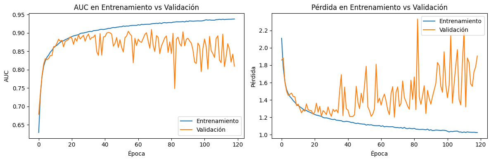
train_loss, train_auc = model.evaluate(training_set)
test_loss, test_auc = model.evaluate(validation_set)
print("final train accuracy = {:.2f} , validation accuracy = {:.2f}".format(train_auc*100, test_auc*100))
359/359 ━━━━━━━━━━━━━━━━━━━━ 3s 9ms/step - auc: 0.9432 - loss: 0.9625
90/90 ━━━━━━━━━━━━━━━━━━━━ 1s 7ms/step - auc: 0.9086 - loss: 1.2051
final train accuracy = 94.35 , validation accuracy = 90.81
Matriz de confusión del conjunto de entrenamiento
y_pred = model.predict(training_set)
y_pred = np.argmax(y_pred, axis=1)
class_labels = test_set.class_indices
class_labels = {v:k for k,v in class_labels.items()}
from sklearn.metrics import classification_report, confusion_matrix
cm_train = confusion_matrix(training_set.classes, y_pred)
print('Confusion Matrix')
print(cm_train)
print('Classification Report')
target_names = list(class_labels.values())
print(classification_report(training_set.classes, y_pred, target_names=target_names))
plt.figure(figsize=(8,8))
plt.imshow(cm_train, interpolation='nearest')
plt.colorbar()
tick_mark = np.arange(len(target_names))
_ = plt.xticks(tick_mark, target_names, rotation=90)
_ = plt.yticks(tick_mark, target_names)
Matriz de confusión en el conjunto de datos de validación
y_pred = model.predict(validation_set)
y_pred = np.argmax(y_pred, axis=1)
cm_val = confusion_matrix(validation_set.classes, y_pred)
print('Confusion Matrix')
print(cm_val)
print('Classification Report')
target_names = list(class_labels.values())
print(classification_report(validation_set.classes, y_pred, target_names=target_names))
plt.figure(figsize=(8,8))
plt.imshow(cm_train, interpolation='nearest')
plt.colorbar()
tick_mark = np.arange(len(target_names))
_ = plt.xticks(tick_mark, target_names, rotation=90)
_ = plt.yticks(tick_mark, target_names)
Matriz de confusión del conjunto de datos de prueba
y_pred = model.predict(test_set)
y_pred = np.argmax(y_pred, axis=1)
cm_test = confusion_matrix(test_set.classes, y_pred)
print('Confusion Matrix')
print(cm_test)
print('Classification Report')
target_names = list(class_labels.values())
print(classification_report(test_set.classes, y_pred, target_names=target_names))
plt.figure(figsize=(8,8))
plt.imshow(cm_test, interpolation='nearest')
plt.colorbar()
tick_mark = np.arange(len(target_names))
_ = plt.xticks(tick_mark, target_names, rotation=90)
_ = plt.yticks(tick_mark, target_names)
Grafico de predicciones
import numpy as np
x_test, y_test = next(test_set)
predict = model.predict(x_test)
figure = plt.figure(figsize=(20, 8))
for i, index in enumerate(np.random.choice(x_test.shape[0], size=24, replace=False)):
ax = figure.add_subplot(4, 6, i + 1, xticks=[], yticks=[])
ax.imshow(np.squeeze(x_test[index]))
predict_index = class_labels[np.argmax(predict[index])]
true_index = class_labels[np.argmax(y_test[index])]
ax.set_title(f"{predict_index} ({true_index})",
color=("green" if predict_index == true_index else "red"))
3.18. Aplicación: Segmentación de Imágenes Biomédicas con U-Net#
El cáncer de mama es una de las principales causas de mortalidad en mujeres, y su detección temprana reduce muertes prematuras. Este conjunto de datos de ultrasonido mamario incluye 780 imágenes de 600 pacientes (25-75 años), recopiladas en 2018, clasificadas en normales, benignas y malignas. Las imágenes, en formato PNG (500×500 píxeles), incluyen referencias (ground truth) para mejorar su análisis mediante aprendizaje automático en clasificación, detección y segmentación (ver Breast Ultrasound Images Dataset).
import tensorflow as tf
from glob import glob
import numpy as np
from sklearn.model_selection import train_test_split
import cv2
import matplotlib.pyplot as plt
from keras.models import Model
from keras.layers import Input, Conv2D, MaxPooling2D, Conv2DTranspose, concatenate
from keras.optimizers import Adam
from tensorflow.keras.metrics import *
paths = glob('/home/lihkir/datasets/Dataset_BUSI_with_GT/*/*')
print(f'\033[92m')
print(f"'normal' class has {len([i for i in paths if 'normal' in i and 'mask' not in i])} images and {len([i for i in paths if 'normal' in i and 'mask' in i])} masks.")
print(f"'benign' class has {len([i for i in paths if 'benign' in i and 'mask' not in i])} images and {len([i for i in paths if 'benign' in i and 'mask' in i])} masks.")
print(f"'malignant' class has {len([i for i in paths if 'malignant' in i and 'mask' not in i])} images and {len([i for i in paths if 'malignant' in i and 'mask' in i])} masks.")
print(f"\nThere are total of {len([i for i in paths if 'mask' not in i])} images and {len([i for i in paths if 'mask' in i])} masks.")
'normal' class has 133 images and 133 masks.
'benign' class has 437 images and 454 masks.
'malignant' class has 210 images and 211 masks.
There are total of 780 images and 798 masks.
sorted(glob('/home/lihkir/datasets/Dataset_BUSI_with_GT/benign/*'))[4:7]
['/home/lihkir/datasets/Dataset_BUSI_with_GT/benign/benign (100).png',
'/home/lihkir/datasets/Dataset_BUSI_with_GT/benign/benign (100)_mask.png',
'/home/lihkir/datasets/Dataset_BUSI_with_GT/benign/benign (100)_mask_1.png']
Cada caso (ej. benign (100)) puede tener varias máscaras de segmentación (
_mask.png, _mask_1.png, a veces_mask_2.png). Es porque los médicos que lo anotaron identificaron más de una región sospechosa en la misma imagen, o bien diferentes especialistas marcaron áreas distintas.
Cargue de datos
def load_image(path, size):
"""
Carga una imagen desde la ruta especificada, la redimensiona y la convierte a escala de grises.
Parámetros:
path (str): Ruta de la imagen.
size (int): Tamaño deseado para la imagen (size x size).
Retorna:
np.array: Imagen en escala de grises normalizada.
"""
image = cv2.imread(path) # Cargar la imagen
image = cv2.resize(image, (size, size)) # Redimensionar la imagen
image = cv2.cvtColor(image, cv2.COLOR_RGB2GRAY) # Convertir a escala de grises (shape: (size, size, 3) -> (size, size, 1))
image = image / 255. # Normalizar la imagen (valores entre 0 y 1)
return image
def load_data(root_path, size):
"""
Carga imágenes y máscaras desde una carpeta, asegurando que múltiples máscaras para una misma imagen se combinen correctamente.
Parámetros:
root_path (str): Ruta donde se encuentran las imágenes y máscaras.
size (int): Tamaño deseado para las imágenes y máscaras.
Retorna:
tuple: Dos arrays de NumPy, uno con las imágenes y otro con las máscaras.
"""
images = [] # Lista para almacenar las imágenes
masks = [] # Lista para almacenar las máscaras
x = 0 # Variable auxiliar para identificar imágenes con más de una máscara
for path in sorted(glob(root_path)): # Iterar sobre las imágenes y máscaras en la carpeta
img = load_image(path, size) # Cargar la imagen o máscara
if 'mask' in path: # Verificar si el archivo es una máscara
if x: # Si la imagen ya tiene una máscara previa
masks[-1] += img # Sumar la nueva máscara a la última almacenada
# Al sumar dos máscaras, los valores pueden variar entre 0 y 2, por lo que se normaliza nuevamente al rango 0-1.
masks[-1] = np.array(masks[-1] > 0.5, dtype='float64')
else:
masks.append(img) # Agregar la máscara a la lista
x = 1 # Marcar que esta imagen tiene una máscara
else:
images.append(img) # Agregar la imagen a la lista
x = 0 # Reiniciar el indicador para la siguiente imagen
return np.array(images), np.array(masks) # Convertir listas a arrays de NumPy y retornar
La variable
xfunciona como bandera:x = 0→ aún no hay máscara asociada.x = 1→ ya se cargó al menos una máscara para esa imagen.
En datasets médicos como BUSI, las máscaras son binarias:
0→ fondo.1(o255en PNG) → lesión.
Al cargar se normalizan a
[0.0, 1.0]. El problema surge cuando una imagen tiene varias máscaras (_mask.png,_mask_1.png, …): al sumarlas aparecen valores2. Por ejemplo,máscara 1:
[0, 1, 0]máscara 2:
[0, 1, 1]suma:
[0, 2, 1]
Por eso se aplica:
masks[-1] = np.array(masks[-1] > 0.5, dtype="float64")
X, y = load_data(root_path='/home/lihkir/datasets/Dataset_BUSI_with_GT/*/*', size = 128)
Se usa 128×128 por:
Eficiencia: reduce memoria y tiempo de entrenamiento.
Escalabilidad: potencia de 2, compatible con CNNs (128 → 64 → 32…).
Aplicación: suficiente para prototipos en segmentación médica; mayor precisión requiere 256 o 512, pero con más costo computacional.
Exploratory Data Analysis (EDA)
fig, ax = plt.subplots(1, 3, figsize=(10, 5))
# Rango de índices para cada categoría de imágenes en el conjunto de datos:
# X[0:437] - Benigno
# X[437:647] - Maligno
# X[647:780] - Normal
# Selecciona un índice aleatorio dentro del rango de imágenes normales
i = np.random.randint(647, 780)
# Muestra la imagen original en escala de grises
ax[0].imshow(X[i], cmap='gray')
ax[0].set_title('Imagen')
# Muestra la máscara correspondiente
ax[1].imshow(y[i], cmap='gray')
ax[1].set_title('Máscara')
# Superpone la máscara sobre la imagen original con transparencia
ax[2].imshow(X[i], cmap='gray')
ax[2].imshow(tf.squeeze(y[i]), alpha=0.5, cmap='jet')
ax[2].set_title('Superposición')
# Título general de la figura
fig.suptitle('Clase Normal', fontsize=16)
# Muestra la figura con las imágenes
plt.show()
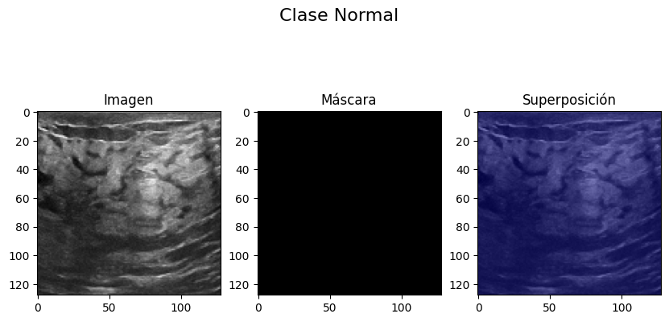
Cuando se cargaron los datos con:
X, y = load_data(root_path='/home/lihkir/datasets/Dataset_BUSI_with_GT/*/*', size=128)
la función
globjunto consorted()organiza las rutas en orden alfabético. Por eso se leen primero las imágenes de la carpetabenign, luegomalignanty finalmentenormal.De este modo, como las imagenes provienen directamente de cómo está organizado el dataset BUSI (Breast Ultrasound Images with Ground Truth): 437 imágenes de tumores benignos; 210 imágenes de tumores malignos; 133 imágenes normales (sin tumor), en los arrays
Xyylas posiciones quedan distribuidas así:X[0:437]→ BenignosX[437:647]→ MalignosX[647:780]→ Normales
fig, ax = plt.subplots(1,3, figsize=(10,5))
i = np.random.randint(437)
ax[0].imshow(X[i], cmap='gray')
ax[0].set_title('Image')
ax[1].imshow(y[i], cmap='gray')
ax[1].set_title('Mask')
ax[2].imshow(X[i], cmap='gray')
ax[2].imshow(tf.squeeze(y[i]), alpha=0.5, cmap='jet')
ax[2].set_title('Union')
fig.suptitle('Benign class', fontsize=16)
plt.show()
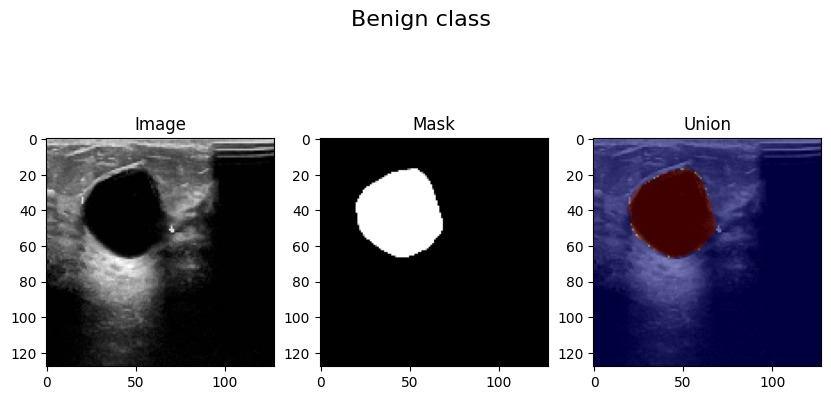
fig, ax = plt.subplots(1,3, figsize=(10,5))
i = np.random.randint(437,647)
ax[0].imshow(X[i], cmap='gray')
ax[0].set_title('Image')
ax[1].imshow(y[i], cmap='gray')
ax[1].set_title('Mask')
ax[2].imshow(X[i], cmap='gray')
ax[2].imshow(tf.squeeze(y[i]), alpha=0.5, cmap='jet')
ax[2].set_title('Union')
fig.suptitle('Malignant class', fontsize=16)
plt.show()
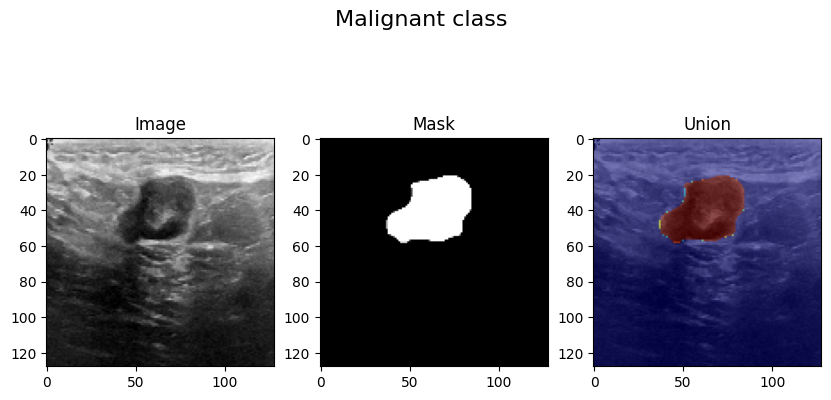
Preprocesamiento
# Eliminar la clase "normal" porque no tiene máscara (usar las primera 647)
X = X[:647]
y = y[:647]
print(f"Forma de X: {X.shape} | Forma de y: {y.shape}")
# Preparar los datos para el modelado. Agregar número de canales
X = np.expand_dims(X, -1)
y = np.expand_dims(y, -1)
print(f"\nForma de X: {X.shape} | Forma de y: {y.shape}")
Forma de X: (647, 128, 128) | Forma de y: (647, 128, 128)
Forma de X: (647, 128, 128, 1) | Forma de y: (647, 128, 128, 1)
Eliminación de imágenes (
X = X[:647]). El dataset BUSI tiene 3 clases:Benigno → 437 imágenes
Maligno → 210 imágenes
Normal → 133 imágenes
Las imágenes de la clase Normal no tienen máscara (
y). En segmentación se necesita siempre un par (imagen, máscara). Por eso se conservan solo las 647 imágenes deBenigno + Maligno, que sí tienen máscara. AsíXeyquedan con el mismo número de muestras.Expansión de dimensión (
np.expand_dims(X, -1)). Al cargar imágenes en escala de grises conload_image, cada muestra queda como:(size, size) # ej: (128, 128), pero, las redes neuronales esperan un tensor con canales:(altura, anchura, canales)Color:
(128, 128, 3)Escala de grises:
(128, 128, 1)
Por eso se usa:
X = np.expand_dims(X, -1) y = np.expand_dims(y, -1)
y cada muestra pasa de
(128, 128)a(128, 128, 1).
X_train, X_test, y_train, y_test = train_test_split(X, y, test_size=0.1)
print(f'\033[92m')
print('X_train shape:',X_train.shape)
print('y_train shape:',y_train.shape)
print('X_test shape:',X_test.shape)
print('y_test shape:',y_test.shape)
X_train shape: (582, 128, 128, 1)
y_train shape: (582, 128, 128, 1)
X_test shape: (65, 128, 128, 1)
y_test shape: (65, 128, 128, 1)
Construcción de la Arquitectura U-Net
Conv block
El método He Normal (He et al., 2015) es una técnica de inicialización de pesos pensada para redes con activación ReLU. Motivación:
Pesos muy pequeños → gradiente desaparece.
Pesos muy grandes → gradiente explota.
He Normal busca un balance para mantener activaciones y gradientes estables.
Los pesos \(W\) se generan con una distribución normal de media 0 y varianza \(\mathbb{Var}(W) = 2/n_{in}\) donde \(n_{in}\) es el número de entradas de la capa. En Keras:
kernel_initializer='he_normal'
equivale a
\[ W \sim \mathcal{N}(0, \sqrt{2/n_{in}}) \]Ventajas:
Se adapta a ReLU, considerando que descarta la mitad de las neuronas.
Facilita un entrenamiento más rápido y estable en redes profundas.
def conv_block(input, num_filters):
conv = Conv2D(num_filters, (3, 3), activation="relu", padding="same", kernel_initializer='he_normal')(input)
conv = Conv2D(num_filters, (3, 3), activation="relu", padding="same", kernel_initializer='he_normal')(conv)
return conv
Encoder block
def encoder_block(input, num_filters):
conv = conv_block(input, num_filters)
pool = MaxPooling2D((2, 2))(conv)
return conv, pool
Decoder block
def decoder_block(input, skip_features, num_filters):
uconv = Conv2DTranspose(num_filters, (2, 2), strides=2, padding="same")(input)
con = concatenate([uconv, skip_features])
conv = conv_block(con, num_filters)
return conv
Modelo U-Net
def build_model(input_shape):
input_layer = Input(input_shape)
s1, p1 = encoder_block(input_layer, 64)
s2, p2 = encoder_block(p1, 128)
s3, p3 = encoder_block(p2, 256)
s4, p4 = encoder_block(p3, 512)
b1 = conv_block(p4, 1024)
d1 = decoder_block(b1, s4, 512)
d2 = decoder_block(d1, s3, 256)
d3 = decoder_block(d2, s2, 128)
d4 = decoder_block(d3, s1, 64)
output_layer = Conv2D(1, 1, padding="same", activation="sigmoid")(d4)
model = Model(input_layer, output_layer, name="U-Net")
return model
model = build_model(input_shape=(128, 128, 1))
model.compile(
loss="binary_crossentropy",
optimizer=Adam(learning_rate=1e-4),
metrics=["accuracy"]
)
tf.keras.utils.plot_model(model, show_shapes=True)
model.summary()
Model: "U-Net"
┏━━━━━━━━━━━━━━━━━━━━━┳━━━━━━━━━━━━━━━━━━━┳━━━━━━━━━━━━┳━━━━━━━━━━━━━━━━━━━┓ ┃ Layer (type) ┃ Output Shape ┃ Param # ┃ Connected to ┃ ┡━━━━━━━━━━━━━━━━━━━━━╇━━━━━━━━━━━━━━━━━━━╇━━━━━━━━━━━━╇━━━━━━━━━━━━━━━━━━━┩ │ input_layer_3 │ (None, 128, 128, │ 0 │ - │ │ (InputLayer) │ 1) │ │ │ ├─────────────────────┼───────────────────┼────────────┼───────────────────┤ │ conv2d_43 (Conv2D) │ (None, 128, 128, │ 640 │ input_layer_3[0]… │ │ │ 64) │ │ │ ├─────────────────────┼───────────────────┼────────────┼───────────────────┤ │ conv2d_44 (Conv2D) │ (None, 128, 128, │ 36,928 │ conv2d_43[0][0] │ │ │ 64) │ │ │ ├─────────────────────┼───────────────────┼────────────┼───────────────────┤ │ max_pooling2d_11 │ (None, 64, 64, │ 0 │ conv2d_44[0][0] │ │ (MaxPooling2D) │ 64) │ │ │ ├─────────────────────┼───────────────────┼────────────┼───────────────────┤ │ conv2d_45 (Conv2D) │ (None, 64, 64, │ 73,856 │ max_pooling2d_11… │ │ │ 128) │ │ │ ├─────────────────────┼───────────────────┼────────────┼───────────────────┤ │ conv2d_46 (Conv2D) │ (None, 64, 64, │ 147,584 │ conv2d_45[0][0] │ │ │ 128) │ │ │ ├─────────────────────┼───────────────────┼────────────┼───────────────────┤ │ max_pooling2d_12 │ (None, 32, 32, │ 0 │ conv2d_46[0][0] │ │ (MaxPooling2D) │ 128) │ │ │ ├─────────────────────┼───────────────────┼────────────┼───────────────────┤ │ conv2d_47 (Conv2D) │ (None, 32, 32, │ 295,168 │ max_pooling2d_12… │ │ │ 256) │ │ │ ├─────────────────────┼───────────────────┼────────────┼───────────────────┤ │ conv2d_48 (Conv2D) │ (None, 32, 32, │ 590,080 │ conv2d_47[0][0] │ │ │ 256) │ │ │ ├─────────────────────┼───────────────────┼────────────┼───────────────────┤ │ max_pooling2d_13 │ (None, 16, 16, │ 0 │ conv2d_48[0][0] │ │ (MaxPooling2D) │ 256) │ │ │ ├─────────────────────┼───────────────────┼────────────┼───────────────────┤ │ conv2d_49 (Conv2D) │ (None, 16, 16, │ 1,180,160 │ max_pooling2d_13… │ │ │ 512) │ │ │ ├─────────────────────┼───────────────────┼────────────┼───────────────────┤ │ conv2d_50 (Conv2D) │ (None, 16, 16, │ 2,359,808 │ conv2d_49[0][0] │ │ │ 512) │ │ │ ├─────────────────────┼───────────────────┼────────────┼───────────────────┤ │ max_pooling2d_14 │ (None, 8, 8, 512) │ 0 │ conv2d_50[0][0] │ │ (MaxPooling2D) │ │ │ │ ├─────────────────────┼───────────────────┼────────────┼───────────────────┤ │ conv2d_51 (Conv2D) │ (None, 8, 8, │ 4,719,616 │ max_pooling2d_14… │ │ │ 1024) │ │ │ ├─────────────────────┼───────────────────┼────────────┼───────────────────┤ │ conv2d_52 (Conv2D) │ (None, 8, 8, │ 9,438,208 │ conv2d_51[0][0] │ │ │ 1024) │ │ │ ├─────────────────────┼───────────────────┼────────────┼───────────────────┤ │ conv2d_transpose_8 │ (None, 16, 16, │ 2,097,664 │ conv2d_52[0][0] │ │ (Conv2DTranspose) │ 512) │ │ │ ├─────────────────────┼───────────────────┼────────────┼───────────────────┤ │ concatenate_8 │ (None, 16, 16, │ 0 │ conv2d_transpose… │ │ (Concatenate) │ 1024) │ │ conv2d_50[0][0] │ ├─────────────────────┼───────────────────┼────────────┼───────────────────┤ │ conv2d_53 (Conv2D) │ (None, 16, 16, │ 4,719,104 │ concatenate_8[0]… │ │ │ 512) │ │ │ ├─────────────────────┼───────────────────┼────────────┼───────────────────┤ │ conv2d_54 (Conv2D) │ (None, 16, 16, │ 2,359,808 │ conv2d_53[0][0] │ │ │ 512) │ │ │ ├─────────────────────┼───────────────────┼────────────┼───────────────────┤ │ conv2d_transpose_9 │ (None, 32, 32, │ 524,544 │ conv2d_54[0][0] │ │ (Conv2DTranspose) │ 256) │ │ │ ├─────────────────────┼───────────────────┼────────────┼───────────────────┤ │ concatenate_9 │ (None, 32, 32, │ 0 │ conv2d_transpose… │ │ (Concatenate) │ 512) │ │ conv2d_48[0][0] │ ├─────────────────────┼───────────────────┼────────────┼───────────────────┤ │ conv2d_55 (Conv2D) │ (None, 32, 32, │ 1,179,904 │ concatenate_9[0]… │ │ │ 256) │ │ │ ├─────────────────────┼───────────────────┼────────────┼───────────────────┤ │ conv2d_56 (Conv2D) │ (None, 32, 32, │ 590,080 │ conv2d_55[0][0] │ │ │ 256) │ │ │ ├─────────────────────┼───────────────────┼────────────┼───────────────────┤ │ conv2d_transpose_10 │ (None, 64, 64, │ 131,200 │ conv2d_56[0][0] │ │ (Conv2DTranspose) │ 128) │ │ │ ├─────────────────────┼───────────────────┼────────────┼───────────────────┤ │ concatenate_10 │ (None, 64, 64, │ 0 │ conv2d_transpose… │ │ (Concatenate) │ 256) │ │ conv2d_46[0][0] │ ├─────────────────────┼───────────────────┼────────────┼───────────────────┤ │ conv2d_57 (Conv2D) │ (None, 64, 64, │ 295,040 │ concatenate_10[0… │ │ │ 128) │ │ │ ├─────────────────────┼───────────────────┼────────────┼───────────────────┤ │ conv2d_58 (Conv2D) │ (None, 64, 64, │ 147,584 │ conv2d_57[0][0] │ │ │ 128) │ │ │ ├─────────────────────┼───────────────────┼────────────┼───────────────────┤ │ conv2d_transpose_11 │ (None, 128, 128, │ 32,832 │ conv2d_58[0][0] │ │ (Conv2DTranspose) │ 64) │ │ │ ├─────────────────────┼───────────────────┼────────────┼───────────────────┤ │ concatenate_11 │ (None, 128, 128, │ 0 │ conv2d_transpose… │ │ (Concatenate) │ 128) │ │ conv2d_44[0][0] │ ├─────────────────────┼───────────────────┼────────────┼───────────────────┤ │ conv2d_59 (Conv2D) │ (None, 128, 128, │ 73,792 │ concatenate_11[0… │ │ │ 64) │ │ │ ├─────────────────────┼───────────────────┼────────────┼───────────────────┤ │ conv2d_60 (Conv2D) │ (None, 128, 128, │ 36,928 │ conv2d_59[0][0] │ │ │ 64) │ │ │ ├─────────────────────┼───────────────────┼────────────┼───────────────────┤ │ conv2d_61 (Conv2D) │ (None, 128, 128, │ 65 │ conv2d_60[0][0] │ │ │ 1) │ │ │ └─────────────────────┴───────────────────┴────────────┴───────────────────┘
Total params: 31,030,593 (118.37 MB)
Trainable params: 31,030,593 (118.37 MB)
Non-trainable params: 0 (0.00 B)
from tensorflow.keras.callbacks import EarlyStopping, ModelCheckpoint
import os
from joblib import dump, load
checkpointer = [
EarlyStopping(monitor='val_accuracy', verbose=1, restore_best_weights=True, mode='max', patience=10),
ModelCheckpoint(
filepath='model.weights.best.keras',
monitor='val_accuracy',
verbose=1,
save_best_only=True,
mode='max'
)
]
history_unet = None
if os.path.exists('history_unet.joblib'):
history_unet = load('history_unet.joblib')
print("El archivo 'history_unet.joblib' ya existe. Se ha cargado el historial del entrenamiento.")
else:
history_unet = model.fit(
X_train, y_train,
epochs=100,
validation_data=(X_test, y_test),
callbacks=checkpointer,
verbose=2
)
dump(history_unet.history, 'history_unet.joblib')
print("El entrenamiento se ha completado y el historial ha sido guardado en 'history_unet.joblib'.")
Epoch 1/100
Epoch 1: val_accuracy improved from -inf to 0.90643, saving model to model.weights.best.keras
19/19 - 11s - 595ms/step - accuracy: 0.8765 - loss: 0.3809 - val_accuracy: 0.9064 - val_loss: 0.3078
Epoch 2/100
Epoch 2: val_accuracy improved from 0.90643 to 0.90831, saving model to model.weights.best.keras
19/19 - 5s - 255ms/step - accuracy: 0.9047 - loss: 0.2593 - val_accuracy: 0.9083 - val_loss: 0.2449
Epoch 3/100
Epoch 3: val_accuracy improved from 0.90831 to 0.91728, saving model to model.weights.best.keras
19/19 - 5s - 269ms/step - accuracy: 0.9114 - loss: 0.2214 - val_accuracy: 0.9173 - val_loss: 0.2097
Epoch 4/100
Epoch 4: val_accuracy improved from 0.91728 to 0.92540, saving model to model.weights.best.keras
19/19 - 5s - 264ms/step - accuracy: 0.9193 - loss: 0.2085 - val_accuracy: 0.9254 - val_loss: 0.1944
Epoch 5/100
Epoch 5: val_accuracy improved from 0.92540 to 0.93137, saving model to model.weights.best.keras
19/19 - 5s - 255ms/step - accuracy: 0.9268 - loss: 0.1888 - val_accuracy: 0.9314 - val_loss: 0.1844
Epoch 6/100
Epoch 6: val_accuracy improved from 0.93137 to 0.93417, saving model to model.weights.best.keras
19/19 - 5s - 263ms/step - accuracy: 0.9325 - loss: 0.1782 - val_accuracy: 0.9342 - val_loss: 0.1738
Epoch 7/100
Epoch 7: val_accuracy did not improve from 0.93417
19/19 - 3s - 142ms/step - accuracy: 0.9351 - loss: 0.1751 - val_accuracy: 0.9066 - val_loss: 0.2137
Epoch 8/100
Epoch 8: val_accuracy improved from 0.93417 to 0.93952, saving model to model.weights.best.keras
19/19 - 5s - 249ms/step - accuracy: 0.9366 - loss: 0.1648 - val_accuracy: 0.9395 - val_loss: 0.1643
Epoch 9/100
Epoch 9: val_accuracy improved from 0.93952 to 0.93953, saving model to model.weights.best.keras
19/19 - 5s - 267ms/step - accuracy: 0.9415 - loss: 0.1542 - val_accuracy: 0.9395 - val_loss: 0.1571
Epoch 10/100
Epoch 10: val_accuracy improved from 0.93953 to 0.93997, saving model to model.weights.best.keras
19/19 - 5s - 269ms/step - accuracy: 0.9440 - loss: 0.1436 - val_accuracy: 0.9400 - val_loss: 0.1513
Epoch 11/100
Epoch 11: val_accuracy improved from 0.93997 to 0.94766, saving model to model.weights.best.keras
19/19 - 5s - 239ms/step - accuracy: 0.9436 - loss: 0.1414 - val_accuracy: 0.9477 - val_loss: 0.1395
Epoch 12/100
Epoch 12: val_accuracy improved from 0.94766 to 0.94831, saving model to model.weights.best.keras
19/19 - 5s - 267ms/step - accuracy: 0.9484 - loss: 0.1309 - val_accuracy: 0.9483 - val_loss: 0.1358
Epoch 13/100
Epoch 13: val_accuracy improved from 0.94831 to 0.95184, saving model to model.weights.best.keras
19/19 - 5s - 270ms/step - accuracy: 0.9505 - loss: 0.1223 - val_accuracy: 0.9518 - val_loss: 0.1314
Epoch 14/100
Epoch 14: val_accuracy improved from 0.95184 to 0.95413, saving model to model.weights.best.keras
19/19 - 5s - 269ms/step - accuracy: 0.9541 - loss: 0.1117 - val_accuracy: 0.9541 - val_loss: 0.1254
Epoch 15/100
Epoch 15: val_accuracy did not improve from 0.95413
19/19 - 3s - 143ms/step - accuracy: 0.9577 - loss: 0.1038 - val_accuracy: 0.9522 - val_loss: 0.1366
Epoch 16/100
Epoch 16: val_accuracy did not improve from 0.95413
19/19 - 3s - 133ms/step - accuracy: 0.9575 - loss: 0.1027 - val_accuracy: 0.9451 - val_loss: 0.1403
Epoch 17/100
Epoch 17: val_accuracy did not improve from 0.95413
19/19 - 3s - 133ms/step - accuracy: 0.9618 - loss: 0.0936 - val_accuracy: 0.9518 - val_loss: 0.1305
Epoch 18/100
Epoch 18: val_accuracy did not improve from 0.95413
19/19 - 3s - 134ms/step - accuracy: 0.9630 - loss: 0.0881 - val_accuracy: 0.9526 - val_loss: 0.1299
Epoch 19/100
Epoch 19: val_accuracy did not improve from 0.95413
19/19 - 3s - 133ms/step - accuracy: 0.9667 - loss: 0.0804 - val_accuracy: 0.9504 - val_loss: 0.1290
Epoch 20/100
Epoch 20: val_accuracy did not improve from 0.95413
19/19 - 3s - 133ms/step - accuracy: 0.9654 - loss: 0.0829 - val_accuracy: 0.9492 - val_loss: 0.1575
Epoch 21/100
Epoch 21: val_accuracy did not improve from 0.95413
19/19 - 2s - 108ms/step - accuracy: 0.9689 - loss: 0.0757 - val_accuracy: 0.9494 - val_loss: 0.1327
Epoch 22/100
Epoch 22: val_accuracy did not improve from 0.95413
19/19 - 3s - 133ms/step - accuracy: 0.9687 - loss: 0.0757 - val_accuracy: 0.9492 - val_loss: 0.1309
Epoch 23/100
Epoch 23: val_accuracy improved from 0.95413 to 0.95520, saving model to model.weights.best.keras
19/19 - 5s - 256ms/step - accuracy: 0.9717 - loss: 0.0680 - val_accuracy: 0.9552 - val_loss: 0.1395
Epoch 24/100
Epoch 24: val_accuracy did not improve from 0.95520
19/19 - 3s - 133ms/step - accuracy: 0.9752 - loss: 0.0572 - val_accuracy: 0.9450 - val_loss: 0.1428
Epoch 25/100
Epoch 25: val_accuracy did not improve from 0.95520
19/19 - 3s - 133ms/step - accuracy: 0.9741 - loss: 0.0607 - val_accuracy: 0.9542 - val_loss: 0.1320
Epoch 26/100
Epoch 26: val_accuracy improved from 0.95520 to 0.95964, saving model to model.weights.best.keras
19/19 - 5s - 251ms/step - accuracy: 0.9754 - loss: 0.0569 - val_accuracy: 0.9596 - val_loss: 0.1254
Epoch 27/100
Epoch 27: val_accuracy did not improve from 0.95964
19/19 - 3s - 141ms/step - accuracy: 0.9788 - loss: 0.0491 - val_accuracy: 0.9586 - val_loss: 0.1334
Epoch 28/100
Epoch 28: val_accuracy did not improve from 0.95964
19/19 - 3s - 133ms/step - accuracy: 0.9793 - loss: 0.0480 - val_accuracy: 0.9574 - val_loss: 0.1361
Epoch 29/100
Epoch 29: val_accuracy did not improve from 0.95964
19/19 - 3s - 133ms/step - accuracy: 0.9808 - loss: 0.0434 - val_accuracy: 0.9519 - val_loss: 0.1316
Epoch 30/100
Epoch 30: val_accuracy did not improve from 0.95964
19/19 - 3s - 133ms/step - accuracy: 0.9784 - loss: 0.0493 - val_accuracy: 0.9576 - val_loss: 0.1698
Epoch 31/100
Epoch 31: val_accuracy improved from 0.95964 to 0.96042, saving model to model.weights.best.keras
19/19 - 4s - 236ms/step - accuracy: 0.9817 - loss: 0.0413 - val_accuracy: 0.9604 - val_loss: 0.1509
Epoch 32/100
Epoch 32: val_accuracy did not improve from 0.96042
19/19 - 3s - 148ms/step - accuracy: 0.9832 - loss: 0.0370 - val_accuracy: 0.9592 - val_loss: 0.1453
Epoch 33/100
Epoch 33: val_accuracy did not improve from 0.96042
19/19 - 3s - 135ms/step - accuracy: 0.9848 - loss: 0.0333 - val_accuracy: 0.9595 - val_loss: 0.1605
Epoch 34/100
Epoch 34: val_accuracy did not improve from 0.96042
19/19 - 3s - 134ms/step - accuracy: 0.9856 - loss: 0.0314 - val_accuracy: 0.9596 - val_loss: 0.1736
Epoch 35/100
Epoch 35: val_accuracy improved from 0.96042 to 0.96092, saving model to model.weights.best.keras
19/19 - 5s - 263ms/step - accuracy: 0.9864 - loss: 0.0296 - val_accuracy: 0.9609 - val_loss: 0.1584
Epoch 36/100
Epoch 36: val_accuracy did not improve from 0.96092
19/19 - 3s - 143ms/step - accuracy: 0.9869 - loss: 0.0288 - val_accuracy: 0.9603 - val_loss: 0.1691
Epoch 37/100
Epoch 37: val_accuracy improved from 0.96092 to 0.96169, saving model to model.weights.best.keras
19/19 - 5s - 259ms/step - accuracy: 0.9869 - loss: 0.0290 - val_accuracy: 0.9617 - val_loss: 0.1617
Epoch 38/100
Epoch 38: val_accuracy did not improve from 0.96169
19/19 - 3s - 145ms/step - accuracy: 0.9873 - loss: 0.0272 - val_accuracy: 0.9567 - val_loss: 0.1794
Epoch 39/100
Epoch 39: val_accuracy did not improve from 0.96169
19/19 - 3s - 132ms/step - accuracy: 0.9856 - loss: 0.0315 - val_accuracy: 0.9592 - val_loss: 0.1717
Epoch 40/100
Epoch 40: val_accuracy did not improve from 0.96169
19/19 - 3s - 132ms/step - accuracy: 0.9852 - loss: 0.0331 - val_accuracy: 0.9503 - val_loss: 0.1762
Epoch 41/100
Epoch 41: val_accuracy did not improve from 0.96169
19/19 - 2s - 106ms/step - accuracy: 0.9857 - loss: 0.0323 - val_accuracy: 0.9606 - val_loss: 0.1561
Epoch 42/100
Epoch 42: val_accuracy did not improve from 0.96169
19/19 - 3s - 132ms/step - accuracy: 0.9877 - loss: 0.0262 - val_accuracy: 0.9600 - val_loss: 0.1854
Epoch 43/100
Epoch 43: val_accuracy did not improve from 0.96169
19/19 - 3s - 132ms/step - accuracy: 0.9891 - loss: 0.0229 - val_accuracy: 0.9597 - val_loss: 0.2136
Epoch 44/100
Epoch 44: val_accuracy did not improve from 0.96169
19/19 - 3s - 132ms/step - accuracy: 0.9891 - loss: 0.0229 - val_accuracy: 0.9600 - val_loss: 0.1987
Epoch 45/100
Epoch 45: val_accuracy did not improve from 0.96169
19/19 - 3s - 134ms/step - accuracy: 0.9896 - loss: 0.0214 - val_accuracy: 0.9607 - val_loss: 0.2108
Epoch 46/100
Epoch 46: val_accuracy did not improve from 0.96169
19/19 - 3s - 135ms/step - accuracy: 0.9899 - loss: 0.0207 - val_accuracy: 0.9609 - val_loss: 0.2245
Epoch 47/100
Epoch 47: val_accuracy did not improve from 0.96169
19/19 - 3s - 134ms/step - accuracy: 0.9904 - loss: 0.0193 - val_accuracy: 0.9606 - val_loss: 0.2436
Epoch 47: early stopping
Restoring model weights from the end of the best epoch: 37.
El entrenamiento se ha completado y el historial ha sido guardado en 'history_unet.joblib'.
if hasattr(history_unet, "history"):
hist = history_unet.history
else:
hist = history_unet # es un dict cargado con joblib
# Graficar
fig, ax = plt.subplots(1, 2, figsize=(10, 3))
ax[0].plot(hist["loss"], label="Train loss")
ax[0].plot(hist["val_loss"], label="Validation loss")
ax[0].legend()
ax[0].set_title("Loss")
ax[1].plot(hist["accuracy"], label="Train accuracy")
ax[1].plot(hist["val_accuracy"], label="Validation accuracy")
ax[1].legend()
ax[1].set_title("Accuracy")
plt.show()
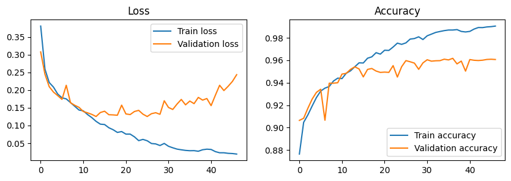
Evaluación
fig, ax = plt.subplots(5,3, figsize=(10,18))
j = np.random.randint(0, X_test.shape[0], 5)
for i in range(5):
ax[i,0].imshow(X_test[j[i]], cmap='gray')
ax[i,0].set_title('Image')
ax[i,1].imshow(y_test[j[i]], cmap='gray')
ax[i,1].set_title('Mask')
ax[i,2].imshow(model.predict(np.expand_dims(X_test[j[i]],0),verbose=0)[0], cmap='gray')
ax[i,2].set_title('Prediction')
fig.suptitle('Results', fontsize=16)
plt.show()
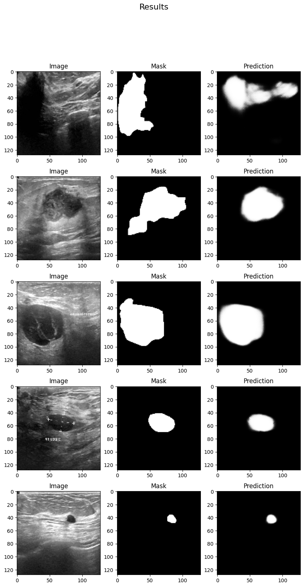
print(f'\033[93m')
y_pred=model.predict(X_test,verbose=0)
y_pred_thresholded = y_pred > 0.5
# mean Intersection-Over-Union metric
IOU_keras = MeanIoU(num_classes=2)
IOU_keras.update_state(y_pred_thresholded, y_test)
print("Mean IoU =", IOU_keras.result().numpy())
prec_score = Precision()
prec_score.update_state(y_pred_thresholded, y_test)
p = prec_score.result().numpy()
print('Precision Score = %.3f' % p)
recall_score = Recall()
recall_score.update_state(y_pred_thresholded, y_test)
r = recall_score.result().numpy()
print('Recall Score = %.3f' % r)
f1_score = 2*(p*r)/(p+r)
print('F1 Score = %.3f' % f1_score)
Mean IoU = 0.8064181
Precision Score = 0.746
Recall Score = 0.835
F1 Score = 0.788
Evaluación del Algoritmo de Segmentación
En un algoritmo de segmentación, estas métricas evalúan la calidad de la segmentación comparando la máscara predicha con la máscara real (ground truth).
1. Mean IoU (Intersection over Union) = 0.7593
Mide la superposición entre la segmentación predicha y la real.
Se calcula como:
Donde:
Área de intersección: Es la cantidad de píxeles correctamente segmentados en la imagen, es decir, los píxeles que coinciden entre la predicción y la verdad (ground truth). Ejemplo: Si la segmentación real marca 40 píxeles como “gato” y la segmentación predicha marca 50 píxeles, pero 30 de ellos coinciden, entonces la intersección es 30 píxeles.
Área de unión: Es la cantidad total de píxeles marcados como objeto en cualquiera de las dos máscaras (predicha o real). Ejemplo: Siguiendo el caso anterior: 40 píxeles están en la máscara real. 50 píxeles están en la máscara predicha. 30 píxeles coinciden (intersección). La unión es: 40 + 50 − 30 = 60 píxeles
Un IoU de 0.7593 indica que, en promedio, el 75.93% del área segmentada coincide con la verdad.
2. Precision Score = 0.695
Evalúa cuántos de los píxeles predichos como positivos realmente lo son.
Se calcula como:
Un valor de 0.695 significa que el 69.5% de las predicciones positivas fueron correctas.
3. Recall Score = 0.786
Mide cuántos de los píxeles verdaderamente positivos fueron detectados.
Se calcula como:
Un recall de 0.786 indica que el 78.6% de los píxeles reales fueron correctamente detectados.
4. F1 Score = 0.738
Es la media armónica entre precisión y recall, equilibrando ambos valores.
Se calcula como:
Un F1 de 0.738 indica un buen equilibrio entre precisión y recall.
Interpretación Global
El modelo segmenta bien las imágenes (IoU alto).
El recall es mayor que la precisión, lo que indica que el modelo detecta la mayoría de los píxeles relevantes, pero a costa de generar algunos falsos positivos.
El F1-score de 0.738 sugiere que el modelo tiene un rendimiento sólido pero puede mejorarse.